#265 1 2004-06-04T00:10:00Z Lucidium Hey guys.
I'm new, so tell me if I'm doing something stupid.

Anyway, this here's my first complete map. It's a bit of a test bed for ideas.
I wanted to make it really varied, so it's ended up pretty large. There's a lot of tricky bits, and I've tried to be as original as possible.
Anyway, here's a screencap
c&c very welcome.
#23484 4 2004-06-04T13:18:13Z Lucidium Nice level gamedope.
(Damn, I thought I was being so original with some of those things)

What was your favourite feature of the map?
Did either of you finish my map on your first go / can anyone?
BTW, the last object is a normal door. If it appears on the topmost ceiling, opening onto the ceiling, then the map hasn't loaded properly.
#288 1 2004-06-07T20:06:54Z Lucidium Hey guys,
Second map here. Tried to take a different tack from my first one.
It's fairly simple, but a cilantro bit tricky. Especially at the end.
Hope you enjoy it.
btw, unrelated: Has anyone noticed that if you have an obstacle like a closed trap door, and a locked door on top of it. You can open the locked door, and go through the obstacle as if it weren't there?
#291 1 2004-06-08T18:32:59Z Lucidium Hey,
I had a quick check through, I'm not sure if someone's posted this idea before.
Anyway,
I don't know about performance considerations, but would it be possible to overlay an image onto N's levels?
So all the physics and geometry of the level remains the same, it's just underneath an image. And N, and all the other gameplay elements are on top of the image.
You could draw grassy fields, or factory equipment, or whatever you want, and have N jumping all over them.
Actually, on second thought. Maybe not in this game, because the minimalistic art is really beautiful already. But maybe something like this could happen in a later game.
[edit]
Ooh, just thought of something. It'd be nice to be able to put cilantro bits of text in on the maps. Just a simple, small font, maybe to label certain things with. It could be used to add something to the puzzle element of gameplay.
[/edit]
#23598 3 2004-06-08T23:15:29Z Lucidium Ah, thanks for the reply.
I don't think I explained myself very well though. I'll try and clarify a bit.
I was thinking of keeping the current systematic tile system, but allowing the map maker to import a single background image.
The image would be the size of the entire level, and wouldn't have anything to do with the physics.
All it would be is for decoration.
The user would draw their own picture, using N's tiles as a template. So they could draw, say, a beachball over a circle of N tiles. Then this image would hide the actual tiles.
I hope that made a bit more sense.
(I really can't get ideas out of my head and into words.)
I might try and make a diagram to show you what I'm talking about.
#23600 4 2004-06-08T23:43:29Z Lucidium Ok.
Just did this really really quickly. (If I spent more time I'd try and make the graphical styles clash a cilantro less
.)
Something like that.
The actual tiles hidden behind that image.
And the rest of the game elements rendered above it.
The image is just a static, imported picture. Like a png, or a jpg.
It's not needed to play the map, nor does it affect gameplay in any way. It's just a decoration.
Am I making any sense?

[edit]
btw, original map .
[/edit]
#23611 6 2004-06-09T21:55:59Z Lucidium Hey,
Thanks arachnid
.
I haven't actually skinned any of the non-static elements. The image is exactly like you said, over the tiles but under the objects.
I could post a full-size image, that would be clearer. But the smaller size hides my lazy drawing

.
I'm no flash guru either. But maybe it'd be possible to make skins for N.
So individual users could style all the elements their own way.
Of course, this is all just curiosity on my part.
It's probably way too much work to be worth it in the end.
#23615 5 2004-06-10T00:30:09Z Lucidium Goju was right in the first place.
Seppuku, ؕ, means the same as harakiri: Disembowelment.

Anyway, back on topic.
I think death animations would be great. Just something quick but interesting.
The multiplayer idea sounds really interesting, I like the idea of linking your throwing direction to the direction you're moving in. It keeps the controls simple, and I think it'd work okay gameplay-wise.
I agree that being able to destroy enemies would be very cool. But I get the feeling that maybe it's too much of a shift in the focus of gameplay.
#301 1 2004-06-11T18:25:14Z Lucidium Hey guys,
This new level's got six rooms, each with its own challenge, to get through. And a central tower that you have to cross every time.
The catch is, every time you open a room, crossing the tower gets harder.

My best time is just under four minutes (but I didn't bother collecting the gold). And it wasn't a perfect run either, so it can probably be done faster.
#23656 2 2004-06-12T00:11:53Z Lucidium By the way, guys:
Could you tell me if there's any parts that you particularly enjoyed, or found particularly annoying?
I want to do a similar kind of map again (based around the tower thing), but refine it a bit more based on what people like.
#23659 32 2004-06-12T09:38:28Z Lucidium Surely "end of the week" is the same thing as Sunday 13th?

What's the problem?
#23671 25 2004-06-12T19:51:49Z Lucidium The latest number (last time I checked, it was the map I just submitted) is 99.
But when I added up all the numbers on the "all authors" page, it only comes to 87.
Odd...
Still, I'm tempted to submit a "One Hundredth Map", made out of a big "100", with 100 gold pieces
.
#308 1 2004-06-13T15:04:07Z Lucidium Hey guys,
Would it be possible to put more than one exit on a map, but also have each exit go to a different map?
So, when making an episode, we could give players different paths through the episode.
For example, you could hide a secret exit on a level, which takes you to a map filled with gold.
Or you could have hard and easy exits. But put more gold through the hard path so that people who choose it get higher scores.
#23695 2 2004-06-14T08:19:40Z Lucidium What do you mean be "fall down" gamedope? Do you mean drop onto the floor?
Because then I agree, that'd be quite cool
.
Also, seeing the title to this thread gave me an idea.
How about big gold treasure items, that add a lot of time, instead of just two seconds. Things like treasure chests, or big gold chalices.
Now that we've got high scores, optional things like treasure might be interesting. As getting a better high score gives you an incentive to try and get them.
#23857 6 2004-06-24T15:50:20Z Lucidium Actually, I have noticed that they can be a cilantro bit weird.
I mean, to jump high, you have to be constantly moving from side to side.
If you just stay still, and try and build up a really big jump, it just doesn't work.
#27324 8 2004-09-09T17:45:14Z Lucidium I've made a couple.
(Nothing but thwumps and a few bounce blocks.)
and
(Trying to make N go as fast as possible without editing the code)
#27400 14 2004-09-10T22:36:19Z Lucidium I just made another DDA:
There's only one launch pad, and only one non-square tile. Everything else is done by the thwumps.
#1100 1 2004-10-13T22:35:03Z Lucidium I've tried to make all of my maps interesting and original. And they usually involve something puzzling and challenging, rather than plain action.
Unfortunately, this means a lot of my maps have never been beaten (apart from by me). I'd really love to see some demos of my harder maps, and any feedback would be great.
Check them out here:
I'll keep this thread updated with my latest maps. I hope you guys like them.
Cheers.
PS, Any of you have a favourite map, or some feature you'd like to see more of?
#32099 5 2004-10-15T22:59:29Z Lucidium Thanks so much guys!
I'm glad people like my maps, even if they are kinda hard. The thing with most of them is, you need to know a trick or two, otherwise you can't do them.
I think I've posted demos on the hardest ones, they ought to show how to do it.
#32470 18 2004-10-17T19:25:55Z Lucidium Woah, wasn't expecting that. I go away for a few days, and look what happens.
Anyway, I'm pretty sure I'm a guy. Sorry
Dunno what I'll do for my next map. I've got a few ideas and half-made maps, but it looks like I'm gonna have to make the next one a bit easier. I wanna see more complete demos!
#32996 12 2004-10-22T07:12:39Z Lucidium Here are my DDAs:
and
#33013 19 2004-10-22T16:41:26Z Lucidium Hey guys,
I'm playing around with a drone powered timer here. Dunno if it's been done before, but I thought I'd show you a test and find out what you think.
If it goes down well, I'll probably make a full level out of it.
You'll have to lure the drone out of the way, then make it through the obstacle course before it gets back.
Then you'll have to go round a second time, but with more things in the way.
Attachment (lost): post-10-1098463286.txt
#33515 21 2004-10-25T19:33:52Z Lucidium I just finished a new DDA:
Powered by Thwumps 3!
I'm quite proud of this one. It took a lot of tweaking to get the thwumps in the right place at the right time, but I think it looks cool enough to be worth it.
There's only one tile, and it's the basic full square. There are no items apart from N, the exit, and of course the thwumps.
Hope you like it!
#33764 16 2004-10-26T23:42:44Z Lucidium First time I've participated in this!
Anyway, here's a complete demo. I don't really have a problem with that thwump, I just jump on it and keep jumping, and it seems to work out fine.
Attachment (lost): post-10-1098834164.txt
#33876 25 2004-10-27T17:04:54Z Lucidium Got a new map up guys,
Pressed for time
I think there are a lot of cool possibilities that I haven't played with here. Like a more open obstacle course, or enemies to avoid. If anyone would like to play around, I've got a template with just the thwumps, doors, and empty rooms.
PS. I really like the new map preview when submitting, Arachnid. It came in useful just now, I almost submitted the wrong map!
#33963 28 2004-10-28T02:10:02Z Lucidium Thanks guys, glad you like it.
Do you think a vertical version of this would go down well? (Pun not intended.)
Arachnid: I just posted a demo, that oughta help.
#34131 3 2004-10-29T00:08:01Z Lucidium Well, I've done demos for the first three.
Having trouble with the fourth one though.
And give it more than a few hours. A lot of people are probably asleep now!
#34135 26 2004-10-29T00:15:52Z Lucidium Do small gaps count as bugs?
I'm talking about stuff like those diagonal tunnels that you have to run fast to get through.
#34166 6 2004-10-29T01:36:41Z Lucidium Demo up for #5.
I think the load times and the lag made this one hard for me
.
#34248 8 2004-10-29T13:56:31Z Lucidium I did it!
Damn. I think I need to lie down now. That was insane. I've actually got a headache, your map broke my brain.
/me falls over.

#34433 14 2004-10-30T19:27:05Z Lucidium Just posted demos on #7 and #8.
#34438 17 2004-10-30T19:48:38Z Lucidium And I just got goal#2 on 7.
btw, I think 8 was one of my favourite ones so far.
#34501 19 2004-10-31T00:18:51Z Lucidium Thanks!
Just been trying #10. And I can't figure out how to get past that long mine jump on the 5th row. Could you confirm that it's actually possible?
#34521 21 2004-10-31T01:50:32Z Lucidium Weird. Maybe I'm doing something wrong, because I've tried that so many times. I even resorted to taking capslock off so I could jump at the very last second.
Oh well. Back to it
.
#34670 24 2004-10-31T22:28:48Z Lucidium I've got a demo up for number 11. I got pretty lucky in a few places, lots of near misses.
#34860 159 2004-11-02T02:36:45Z Lucidium Here's my entry.
Easy Squeezy
The theme is squeezing through tight gaps. I guess this could be frustrating if you don't have the knack, but I hope no one finds it too annoying.
Just remember to get some speed up, use gravity to your advantage, and jump if you're going up.
#34861 30 2004-11-02T02:39:28Z Lucidium Just made this for Neditor 4:
Easy Squeezy
There's more choice than my maps usually have. You don't even need to get all of the doors open, and there's lots of paths to choose from.
I think I might make more maps like this.
#35163 34 2004-11-04T02:05:14Z Lucidium I was about to ask when the next one was coming, if at all, when I saw #12 up.
Anyway, I've just posted a demo for both goals.
Fun level, btw.
#35238 36 2004-11-04T21:46:03Z Lucidium Just did #13, and in way under the frame limit.
Though to be honest, it did take me almost an hour of playing
.
#35423 40 2004-11-06T15:26:00Z Lucidium Got goal#1 for 14. That map is... well, insane.
#35490 8 2004-11-07T01:40:53Z Lucidium So, can we edit the frame / put objects in it?
What about moving elements?
#35491 11 2004-11-07T01:45:47Z Lucidium You don't want to frustrate the player. Games aren't fun if they're not fair, and it's not fair to make someone think they can land safely on a bounceblock, only to have it be a fake one.
If the player is confused as to what's real and what's fake, it makes the game more luck than skill. This just makes people angry at the game when they lose, instead of thinking they can practice and get better.
#35532 50 2004-11-07T15:10:25Z Lucidium That level's the only one I don't like out of all of them. And it's only because of that mine pit.
I would LOVE to see a demo or something, 'cos I just cannot do that fifth corridor.
I even tried editing the level so that there was no floorguard, and no pit in the floor, so I had a clear run to the mine pit. Then I turned capslock off, and jumped right at the last possible moment.
Maniac, are you sure you didn't add an extra mine as an afterthought or something?
#35748 237 2004-11-09T23:00:29Z Lucidium Heh, I guess I was taking a chance with the squeezing. It does require a certain knack, and it's not very fun otherwise.
Thanks for the review Foxhunter!
It seems like you're the only judge reviewing, but I know you're not the only one with maps left to review.
What's going on?
#36334 57 2004-11-13T16:54:54Z Lucidium Man, I finally managed to do both goals on 15.
That was a lot harder than it looked.
/me falls over
#36340 6 2004-11-13T17:35:53Z Lucidium I finished it over the summer holidays. Didn't do anything but N until I'd completed it. Then I kinda suffered from N withdrawl, until I discovered the wonder of NUMA.
#36495 10 2004-11-15T20:51:16Z Lucidium That rocks so much it hurts.
Once again, thanks arachnid!
It's only a shame that so many good maps from the past aren't going to get rated. Maybe we should go back and rate the best ones, to expose them to new people.
#36504 32 2004-11-15T21:41:18Z Lucidium New map!
Overcrowding
This one's pretty hard, but you ought to be okay as long as you're careful. Watch the pattern for safe spots, and time your movements.
Apologies for problems with lag / load times that anyone has.
As always, I'd love to see any demos. I'll post one up if people have too much trouble with it, just to prove it's possible.
I'd especially like to see an all gold demo. Now
that would be impressive.
#36533 8 2004-11-16T01:23:32Z Lucidium 3-1,
slapped straight into the bottom left corner.
#37175 33 2004-11-21T02:36:04Z Lucidium Here's a new one that's kinda different from my usual style. It's a lot more open, and less involved (read: not so damn long). I think it's pretty fun to play.
Meteor Shower
Hope you like it, and as usual, I'd love to see any demos.
[edit]
Just thought I'd say, all gold completion
is possible. Just remember to record a demo if you do it

. I'm gonna go try and do it again.
[/edit]
#37305 4 2004-11-21T18:44:17Z Lucidium Maybe, instead of a full on ghost, you could have a second timer.
That starts at the full time the other person's demo took, and runs down.
So you can see if you're going to beat them or not.
#37345 7 2004-11-22T01:02:13Z Lucidium How about, when you load a ghost, the demo plays through, but N leaves behind a trail of dots. Then when you play, you can see where the other person went, but there's no processor cost.
#37354 9 2004-11-22T01:28:14Z Lucidium I meant, you could have the dots show where the other player was, by changing colour or something. Each dot would have a time associated with it.
#37450 5 2004-11-22T18:37:40Z Lucidium Hey, thanks guys!
This'll be really cool to see how people do, as I don't usually get many completion demos on my maps
.
Good luck everyone, and I hope I haven't made it so hard that anyone gets angry.
Just checking, is it alright for me to enter demos, or would I have an unfair advantage?
Cheers.
#37482 10 2004-11-22T21:20:17Z Lucidium Alrighty,
this might be a little unfair, what with it being my map and all.
But: all gold completion
.
Attachment (lost): post-21-1101158417.txt
#37608 2 2004-11-23T23:11:03Z Lucidium I thought it was in the manual? I'm sure I read it somewhere.
I've been using that for ages, it really helps making my thwump-only DDAs.
Anyway, worth making a thread for anyone who doesn't know about it. Sorry to spoil your excitement though.
#37611 4 2004-11-23T23:20:28Z Lucidium Ah, sorry.
Didn't mean to ruin your day
.
#37730 28 2004-11-24T18:24:34Z Lucidium Actually, I don't see any reason you couldn't just set N's movieclip to duplicate on every frame. And make the duplicates semi transparent. No physics required.
Then you'd have a stream of N's showing you where the previous player was. The only added processing required would be rendering those extra Ns, which shouldn't be too bad compared to all the physics.
Or, you could just write a few variables, like the position of N and the correct animation frame to display, to a text file for every frame. Then read from it as the player tries to beat the highscore. Again, no physics required.
There's probably even some new fangled thing in the latest version of flash that I'm not thinking of. My actionscripting is kinda out of date, as I grew up on Flash 4.
#37736 34 2004-11-24T19:06:43Z Lucidium New DDA!
Powered by thwumps 4
Correct me if I'm wrong, but I think this is the first DDA to have nothing but thwumps in the arena (besides N and the exit). Not even any tiles.
I would have liked to make it longer, but I think I've got quality if not quantity.
There's a lot of bits in this that I'm quite proud of, like some of the re-use of thwumps, and some of the close calls. And I like the way N goes through three different poses after he gets to the exit. Anyway, go check the map out and tell me what you think.
PS. I hate to triple post like this, someone else has gotta post in this thread!#37741 10 2004-11-24T20:41:36Z Lucidium You can actually get them without dropping off, you've just gotta be really careful.
#37764 37 2004-11-24T22:19:04Z Lucidium Yah, I don't seem to have any trouble with lag / AI bugs. Maybe I'm just lucky

.
#37854 8 2004-11-25T18:02:06Z Lucidium I don't really mind too much.
It looks like Arachnid's cleaned up the worst of the damage, and I'm just glad he was able to get rid of them.
Whatever you guys decide is best is fine by me.
#37856 23 2004-11-25T18:10:13Z Lucidium Woah, nice demo LV. You leave very little room for me to improve on

.
#37892 4 2004-11-25T23:27:10Z Lucidium I think I did that on
http://numa.notdot.net/map/4040.
I went to click 5, but I think I missed and just clicked "rate".
Arachnid, what happens if you click "rate" without choosing a rating?
#37922 19 2004-11-26T02:23:21Z Lucidium Well, I just went through and rated all of Kablizzy's maps. It didn't take too long, but mainly because I finished most of his maps quite easily.
I'm gonna try and do that for each of the main map posters. Although the people with 100+ maps are kinda daunting
.
#37923 8 2004-11-26T02:30:27Z Lucidium Cool thread. Glad it got bumped.
Anyway, here's a page from my sketchbook (working on my portraits at the mo).

PS. If that's too large, just tell me and I'll make it a link or something.
#37987 23 2004-11-26T13:48:36Z Lucidium Just rated all of Sendy's maps. That was actually pretty fun. The only ones I felt like giving less than a 3 to were the ones which I thought were too hard.
I hope other people are doing this, I'd like to see some of these maps actually get a rating.
#38124 2 2004-11-27T10:48:32Z Lucidium Because not many people have gone through the old maps and rated them.
Have you?
I just rated all of his maps, so they're one rating closer.
[edit]
Looks like two of his maps now have ratings. There you go, he's at the top with an average rating of 4.5.
[/edit]
#38126 12 2004-11-27T10:58:48Z Lucidium Thanks 654321.
Here's a (digital) painting I did a while ago:
#38128 4 2004-11-27T12:10:34Z Lucidium I had a few thoughts about that. A "nearly rated" page would really encourage people to rate those maps.
Or maybe you could get shown a few random maps from the archive that you haven't rated. That'd be cool, a "Random maps" page.
I thought about ways of forcing people to rate maps, but I think that would just make people rate maps without even looking at them. Stuff like having a submissions limit based on how many maps you've rated. You have to rate 5 maps for every map you submit, or you can't submit any more.
One other idea, not so much to do with ratings. I think it'd be nice to be notified when you get a new comment on one of your maps. Just a little something in some kind of "my maps info" bar that you get when you log in.
Anyway, I'm just spouting thoughts out here. The work you do on NUMA is fantastic, and I don't want it to seem like I'm loading you up with jobs.
#38310 16 2004-11-28T13:23:18Z Lucidium If people really want more detailed ratings, couldn't you do a kind of bar?
Like, a ninja at the end, and ghosted ninjas behind him.
#38387 78 2004-11-28T18:48:41Z Lucidium This is a plea for the sake of the entire forum. PLease, please, PLEASE make a better avatar for 654321.
Heh. Trying to put off doing my coursework, so I messed around with this.
::pic removed::
It's probably even more distracting/annoying than his current one
.
#38405 435 2004-11-28T20:10:15Z Lucidium Kingdom Under Fire: somethingsomethingsomething ?
#38423 82 2004-11-28T21:37:12Z Lucidium Haha.
Fair play. That probably would have driven everyone crazy.
Although I
am tempted to make a crazy, seizure-inducing, multicoloured, animated gif.
#38441 86 2004-11-28T23:38:58Z Lucidium <-- that's a link
*spacks out on the floor*

HUMNAGGHBAMUNGMGGHAHNNNN!
Holy crap. Seriously. Big 'ol, religiously endowed faeces.
#38554 444 2004-11-29T16:35:10Z Lucidium Alrighty.
*rubs hands together*.
I may have been a bit harsh with this one, but I figured it was better to make it hard than risk giving it away straight away
.
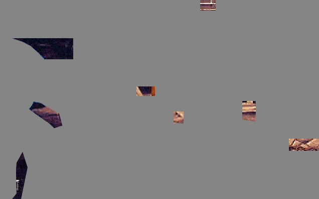
Good luck!
#38563 38 2004-11-29T21:26:53Z Lucidium New map!
Deceptive
It *is* possible. But I won't post a demo unless absolutely no one else can do it.
#38619 445 2004-11-30T01:22:34Z Lucidium Oh yeah.
It's for the PC.
#38755 451 2004-11-30T08:16:02Z Lucidium Such lo-res graphics.
The Dig?
Well damn.
And I thought it might be too hard!
Your go Tornado.
PS. About that smilie, I'd be happy to send it or upload it or whatever needs to be done.
#38788 32 2004-11-30T17:40:07Z Lucidium I'm having trouble remembering which maps I've rated.
I think I've done Kablizzy's, LV's, Sendy's and a lot of Brickman's. Along with pretty much all the latest ones since rating came out.
I'm gonna have to start keeping tabs on who I've rated.
#38819 39 2004-11-30T21:02:19Z Lucidium It doesn't matter if you rate masses of maps, just rate the ones you think are way awesome. See guys? rrrobyp is at least giving it a shot. Shame on those of you who haven't voted for people yet.
I think it'd be better if as many maps as possible were rated.
If everyone only rated the great ones, we'd just get a huge list of 4-5 ninja maps, and loads of unrated ones. Which would barely be better than having no rating at all.
Rate all of them, and you can get a good handle on an author's average quality, encourage people to make better maps, and see what others think of your maps.
#38821 17 2004-11-30T21:04:56Z Lucidium Oh man, I would love that so much.
Or something that shows if you've rated a map without having to actually view the map.
Even better, something that serves up random maps you haven't yet rated.
#38986 25 2004-12-02T00:03:08Z Lucidium Is there some way you could do one big calculation, and make a random list of all the maps currently in the database, for each user. Then every time they want a new random map, just load the next one in the list? Then they'd never see the same one twice, and you wouldn't have to do a new calculation every time.
Not sure about how to add in new maps though.
Of course, this carries the disclaimer that I don't know sweet F A about database programming. So if I'm being an idiot, feel free to inform me as such
.
#39011 457 2004-12-02T02:05:02Z Lucidium Can you post the full screenshot? I'm DYING to see where that was... I think it was the area with the life crystals, but I'm not sure.
No problem.
It's one of the tram stations.
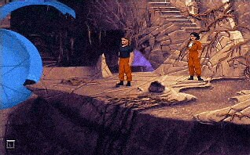
Ah, The Dig. Gotta be one of my all time favourite games.

#39114 49 2004-12-02T17:32:10Z Lucidium I think I might make more maps in this style. Seeing as this one went down so well.
Maybe a little less hard. Although I apparently have trouble making maps that aren't brain smushingly hard.
I just spend so long testing them, and get so good at them, they they all seem too easy for me.
#39128 7 2004-12-02T21:12:21Z Lucidium I think that sometimes you end up diluting your ideas.
I'm not really sure how to describe it, but you get whole groups of maps that *feel* similar to play.
On their own, they're all fairly good. But I think it'd be better if you somehow took all of these similar maps, and tried to cram all of those good ideas and innovations into just a select few, like some kind of quality distillery. Then, instead of getting loads of good maps, you'd get a few *really* fantastic maps.
I really like your maps, I just wish I didn't have to load in five or six at a time to get the whole experience.
Did that make any sense?
#39474 2 2004-12-05T00:00:22Z Lucidium Are you sure you posted the right map?
Because that one is right .
#39628 57 2004-12-05T19:15:26Z Lucidium Didn't think this was worth a new thread, so I figured I'd post it here.
Arachnid: If/when that ability to make entire custom episodes gets implemented, do you have any plans for letting people submit these to numa? It sounds to me like it'd involve a fair amount of work, but I'm just wondering.
#39630 2 2004-12-05T19:22:25Z Lucidium You're right, a lot of people seem to be doing this now. I thought about doing it too.
Maybe we should just set up a points system for every map on numa. That'd definitely encourage more people to play.
Instead of assigning points to maps before-hand, you could base it on how many people have completed demos for each map.
The number of points you get for completing a map would be (for example) 10 divided by the number of people who have completed it.
So if you're the only one who's done it, you get 10 points, but if 50 people have done it, you only get 0.2 points.
No idea how we could get this working though, it'd be unfair to ask arachnid to do even more work after all he's done for us. Maybe just a thread here in the forums, if someone would volunteer to keep track.
Anyway, I'm just rambling, don't want to threadjack.
I say, go for it, I like your maps.
#39659 2 2004-12-05T22:41:53Z Lucidium Just rated all of your maps instead
.
Most of them were really good, especially the extreme mine dodging ones.
And on that note, I've rated about 10% of the maps on NUMA. Hope to get them all done eventually
.
#39698 6 2004-12-06T00:41:49Z Lucidium No problem tktktk.
And while I remember, I've got a couple maps that only need one or two more votes.
Pressed for time
and
Deceptive
Thanks, and good thread tktktk. I hope it takes off.
#39709 9 2004-12-06T01:10:47Z Lucidium Wow, I wasn't expecting that. Thanks guys!
Also: I just passed 500 ratings! Only a few thousand more to go...
#39718 11 2004-12-06T02:20:19Z Lucidium Congratulations!
I don't think many other people have managed that.
I just played it again, and I was surprised at how hard I found it. I think it's because I test my maps so damn much. I end up getting really good at them, then I make them harder because I find them too easy.
#40537 22 2004-12-11T16:34:12Z Lucidium Yeah, I gotta agree with Brickman, that is a singularly unpleasant avatar.
Then again, at least it doesn't make me physically sick, so you could probably do worse.
2/10
#40842 3 2004-12-12T19:22:59Z Lucidium Speaking of other drones.
How about something that can move like the drones do, with the different paths, but is shaped like a thwump, with three safe sides and one dangerous side.
#40864 10 2004-12-12T20:37:33Z Lucidium Also, most newbies dont even know of NUMA.
Good point.
I wonder if there's gonna be a NUMA plug in the next N?
#40882 16 2004-12-12T21:12:51Z Lucidium Damn, what does it matter?
Even if he does just want to get a huge post count (which I don't think he does), as long as he's not spamming every thread and pissing everyone off, it doesn't matter.
#40945 76 2004-12-13T04:48:13Z Lucidium Arachnid:
Not that I want to lay any more on your (probably) overworked self, but I just had an idea. Could the "rating submitted" page have a little "You rated this map X ninjas. Screwed up? Click here to cancel" type thing?
I don't know, I'd just hate to rate a map incorrectly and be unable to fix it.
#41071 13 2004-12-14T01:51:28Z Lucidium Well, I think the best thing we can do about it is make sure we all vote on maps.
I try to rate every new map that comes out, and I'm (slowly but surely) working through the archives.
#41076 39 2004-12-14T02:32:36Z Lucidium Another jumping puzzle type map.
Precarious
If you get frustrated and angry easily, you might not want to play this. If you enjoy working out how to make the perfect jump though, this is a map for you.
#41111 41 2004-12-14T08:20:17Z Lucidium Heya tktktk.
I've got a demo of that gold cluster for you here (I hope this is the one you were talking about).
And I'll post a completion demo as soon as I get home and make one
.
Thanks for the comments, and glad you like the map.
[edit]
I
finally managed to make a completion demo. It's up on
NUMA. Stupid of me to think I could do it in one evening
.
I'd love to see what more people think of this map. I've got a few ideas for a sequel, but I won't bother making it if there's no demand.
[/edit]
Attachment (lost): post-10-1103012417.txt
#41454 534 2004-12-16T03:08:55Z Lucidium Halo?
#41655 5 2004-12-17T21:14:33Z Lucidium #41670 9 2004-12-17T22:52:07Z Lucidium I've got a domo alarm clock that actually dances like that
.
#41682 50 2004-12-18T00:11:06Z Lucidium Perhaps I could get a couple of my jumping puzzle type maps rated:
Precarious
and
Corruption?
That'd be great.
On that note, I just rated all of Rahl's maps, which means I'm up to 17.2% done
. (Based off the most recent map number). Only a few thousand more...
#41904 10 2004-12-19T19:18:49Z Lucidium An Update, already? Yeah, I know, it's crazy. Either way...
Woah, I made that smilie!
Kab, where did you get it from? Does that gamewinners forum have a whole bunch of blue ones like that, or was it just one you found?
PS, sorry to hijack your thread.
#42022 109 2004-12-21T10:34:11Z Lucidium That'd be great, but way too much extra work. I mean, we have trouble getting the votes in as it is

.
It'd be kinda daunting to have to decide on four ratings instead of just the one for each map. (And it'd make my goal of rating all the maps a lot harder
.)
#42237 63 2004-12-23T19:51:30Z Lucidium Just rated all of your maps brickman.
[edit]
So close to 1000 maps rated! Someone gimme five more maps!
[/edit]
#42294 54 2004-12-24T15:44:53Z Lucidium Ooh. That cup's inspired me rrobyp.
Would you mind if I had a go at a 3d one as well?
#42299 17 2004-12-24T17:01:27Z Lucidium Hold on,
are you guys
proud that you've got more to complain about than the other guy?
Because that's what it sounds like
.
I don't get it, what are you doing here?
#42324 64 2004-12-25T00:23:57Z Lucidium One thousand maps rated!
Merry Christmas everyone!
#42358 31 2004-12-25T13:04:31Z Lucidium Most of these would be a huge hassle to do in flash, seeing as they're raster based filters.
Although I'm not gonna say they don't look cool
.
#42483 147 2004-12-27T00:00:10Z Lucidium Yes. PLEASE do that too. Its sooooo annoying having them there. They prevent anyone making normal levels (like me) from getting up there (which, once its done, I will. Heh heh heh). And plus, your best users are going to have already played top rated levels probably (thats how it got enough smart votes to get up there), and playing a level over is much better than replaying a DDA.
Can't you just click on "Action", or whichever category you want to play?
#42484 58 2004-12-27T00:07:46Z Lucidium Few ideas for unlockables.
How about the ability (like in Ned) to reincarnate N? Sorta like a practice mode.
Of course, you wouldn't get highscores with it.
Or turning all the enemies off (or making them harmless, so you can still use thwumps to ride on).
And (I think I may have seen this suggested before, so if it has been: sorry) having the view zoomed right in on N, following him around. (Shouldn't be too hard to do, if my memory of flash is correct, although I don't know what effect it'd have on the processor usage).
#42485 42 2004-12-27T00:28:47Z Lucidium New action map!
Jacks
The tileset reminds me of those metal jacks kids used to play with. You know, the ones where you throw a ball in the air and pick a jack up, then you keep trying to pick up more and still keep the ones you've already got.
Anyway, I think it's a fun map, but go play it and make up your own mind
.
#42558 4 2004-12-27T18:47:45Z Lucidium Great.
Now I've got a buzzing feeling in my arm, and my finger's gone numb.
#42599 5 2004-12-28T03:28:21Z Lucidium Hey...
This is actually kinda fun.
Shame none of them would be possible (easily) in flash.
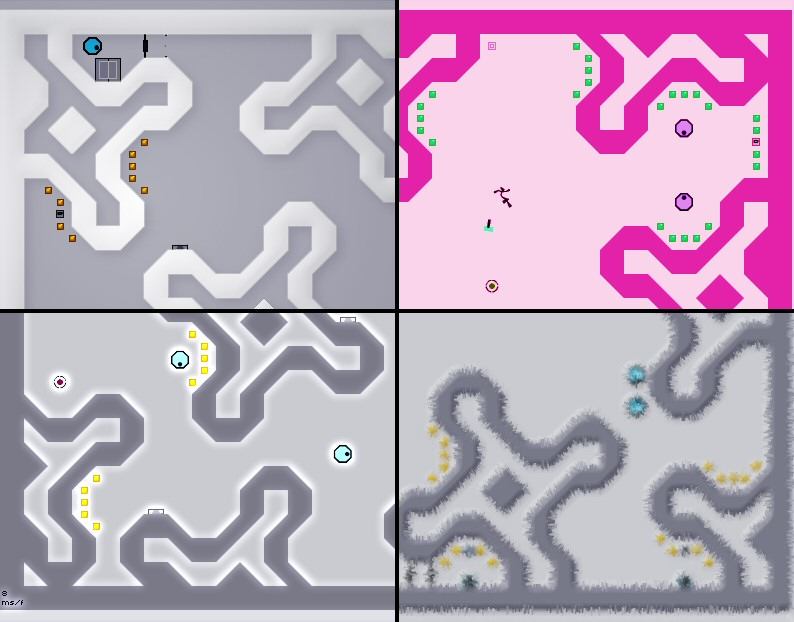
#42740 44 2004-12-28T22:50:45Z Lucidium Just wondering, has anyone yet used gold delay on thwumps?
You can do some real interesting things with it. I'm thinking of doing a Powered by Golden Thwumps.
Or something.
#42763 47 2004-12-29T01:39:14Z Lucidium Ah, I had a feeling I might have seen it somewhere.
But I was thinking more along these lines, (spawn N in the hexagons, then leave him).
Attachment (lost): post-10-1104284354.txt
#42790 162 2004-12-29T03:21:25Z Lucidium Uh,
Couldn't you just ignore the ratings? I mean, if you just want to make maps without having to worry about the rating they'll get. Then just make them, and don't worry about the rating they get.
Also, like I keep saying: If you don't think enough people are rating maps, the best thing you can do is rate every single map you see. I don't think you can complain if you're not doing at least that much.
Slightly unrelated, but inspired by:
I think arachnid deserves some kind of reward for all the work his done for this community. Don't know what though.
[edit]
No offence intended. I just re-read that, and it sounds kinda pissed off. It's not meant to be.
[/edit]
#42791 4 2004-12-29T03:27:37Z Lucidium I got an iPod!

I was really spoilt this year, I don't really deserve this kinda stuff
.
#43103 170 2004-12-30T08:21:41Z Lucidium You're all making this far too complicated.
Every ratings system has to deal with this kind of problem. And the best solution is always to just get more votes in.
At the moment, our community isn't that huge, but it's getting more popular all the time. I think we just need to accept that, for now, things aren't gonna be perfect.
#43155 174 2004-12-30T16:37:20Z Lucidium Ok, badly worded.
A couple people are making this far too complicated.
Everyone else, you can carry on.
/me slinks away into the darkness.
#43156 5 2004-12-30T16:44:02Z Lucidium If it's... on topic?
Woah.
#43311 9 2004-12-31T00:16:40Z Lucidium Oh man,
I love this game.
Thank you so much LV!
I can't believe some of the stuff this thing does. Just now, I was trying to attack the core, and it brought a pair of pincers around, and crushed my ship!
Funny though, I never seem to get bosses with a large "defense" stat. Must be the way I play.
I'll post my highscore in a minute.
[edit]
My current best score is 24521200 on stage 24.
[/edit]
#43329 25 2004-12-31T01:21:39Z Lucidium There's already an unofficial N irc channel.
Me and Arachnid have been idling in it for weeks now
.
#43362 13 2004-12-31T02:19:52Z Lucidium I wish I could work out what their names are.
I think that they're all english names, but the only one I've worked out so far is "Pure Heart" for stage 1. Stage 2 *might* be "Acute Beam Pure Heart", but I'm guessing.
The one in Gohan's post is "something something Omega".
This is gonna bug me.
#43908 11 2005-01-02T17:40:10Z Lucidium What's the problem with having guests?
#44158 183 2005-01-03T16:56:15Z Lucidium Wooo!
Mmmmm...coooookieees.
Cheers arachnid.
#44195 34 2005-01-03T21:55:01Z Lucidium Who likes cannons and lasers?
Looks like this boss does. Looks like it
really likes them.
/me falls over.
Attachment (lost): post-5-1104789301.rec
#44241 37 2005-01-04T00:59:43Z Lucidium Coward mode? That's a little harsh. I just wanted to see the craziest boss I could get.
#44257 188 2005-01-04T01:50:32Z Lucidium Arachnid:
Have you done something funny with the average vote, on the all authors page? Like, working it out in a different way like some people have been suggesting?
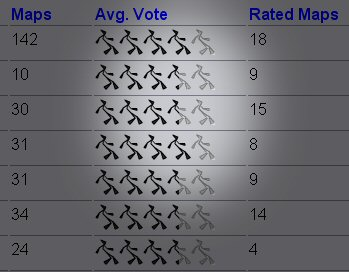
(Not complaining, just curious.)
#44367 3 2005-01-04T14:07:50Z Lucidium On level 50 at the moment.
I'm not even playing any more, I'm just waiting for each level to finish so I can buy more stuff
.
I'll post a screenshot when I get bored.
[edit]
Hmm. Something weird seems to have happened to my airstrike button.
I'm not using it at all, but it's permanently stuck on a little over halfway.
[/edit]
[edit2]
Yeah...
This is getting kinda pointless now. Nothing is even making it onto my screen.
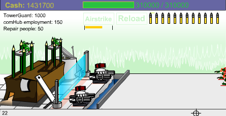
[/edit2]
#44466 15 2005-01-05T02:27:05Z Lucidium Indeed.
Once you get much more than this, the cost of upkeep makes it pointless.
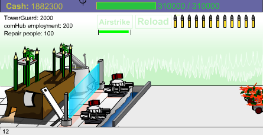
#44467 12 2005-01-05T02:28:18Z Lucidium I was thinking about getting into that. JET sounds like a good choice.
Always wanted to try teaching people.
#44494 4 2005-01-05T12:54:01Z Lucidium I did a little something like that for my sig, but I was kinda worried that it would be too large/distracting.
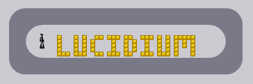
What d'ya think?
#44502 7 2005-01-05T15:58:11Z Lucidium Very very slowly...
(Animation shop)
#44553 11 2005-01-05T22:55:16Z Lucidium Cheers
Doing it now.
#44582 15 2005-01-06T01:37:00Z Lucidium Woah.
I didn't intend it, but if you put several copies of my sig above eachother, they fit perfectly.
[edit]Here,
check it out. (Warning: May run kinda... slow)
[/edit]
#1752 1 2005-01-06T04:43:58Z Lucidium Prompted by
this.
Over the last few weeks or so, I've noticed an influx of new mapmakers. It's great to see the community growing, but it's inevitable that those people new to the game will have missed a lot of things from Ned's history.
Perhaps we ought to put together a list of classic maps from NUMA's archives. Showcasing the major bugs/discoveries etc. and some sound map making advice. Probably with a comment or something to go with each map. Then we could link to it from NUMA, and try to encourage new mapmakers to check it out before they post.
[slightly unrelated]
By the way, I was checking through the earliest maps on NUMA (Ahh... brings back memories), and noticed this.
Was this the first DDA?
http://numa.notdot.net/map/51
It's certainly the first one I remember.
[/slightly unrelated]
#44621 23 2005-01-06T05:21:24Z Lucidium You should try building a little fire underneath one of those little tea candles. Get it so hot that the wax is really bubbling, then throw a cup of water over it (from behind some kind of shield).
You get a big mushroom cloud shaped fireball (I got one at least three feet high), and a nice radial spray of steam and wax.
Really nice
.
#44700 27 2005-01-06T16:40:46Z Lucidium You need to play flaming kick-ups.
Tennis ball + flammable liquid + fire.
Now, get a few people in a circle, and try to keep the ball in the air as long as you can (you're allowed to hit it with any part of your body, if you're nuts enough).
There's still a burn mark on the ceiling at school.
#44726 10 2005-01-06T21:41:30Z Lucidium I don't think post count's that useful for deciding. I mean, I think I joined about when you did maximo, and I've got a tenth of your posts
.
But yeah, the basic idea sounds good. Get a bunch of maps nominated, then we can pick the really classic ones out.
#44911 34 2005-01-08T03:09:15Z Lucidium Man, ttk, you really like rubbing alcohol.
/me backs away.
#44921 3 2005-01-08T05:20:15Z Lucidium Hell, I'm bored enough.
00-0 - the motherlode
00-1 - cloud city
00-2 - all about thwumps
00-3 - the box, the box!
00-4 - lockness
-
01-0 - cavern
01-1 - like happy little puppies
01-2 - little dipper
01-3 - slides
01-4 - steps
-
02-0 - square stairs
02-1 - shaft...s
02-2 - who's sick of thwumps?
02-3 - chasm
02-4 - (don't) go for the gold
-
03-0 - burgertime
03-1 - platformpuzzle
03-2 - rise over run
03-3 - deosil
03-4 - blast doors
-
04-0 - room full of gold
04-1 - factory
04-2 - wall jump frenzy
04-3 - the long way
04-4 - curvaceous
-
05-0 - trench run
05-1 - bamboo forest
05-2 - filthy tramps
05-3 - pac-ninja
05-4 - castle/basement
-
06-0 - artifact 2
06-1 - industrial zone
06-2 - space battle
06-3 - pagoda-ish
06-4 - the gauntlet
-
07-0 - vert world
07-1 - step lightly
07-2 - hunted
07-3 - mainframe
07-4 - rocket arena
-
08-0 - attractor
08-1 - plan plan plan
08-2 - artifact
08-3 - cloud city 2
08-4 - gauss arena
-
09-0 - launchpad arena
09-1 - complex
09-2 - dodgem
09-3 - industrial zone 2
09-4 - keep on tryin
Hell, that is tedious.
Not bored enough to do all of them right now.
#44960 8 2005-01-08T19:20:29Z Lucidium Well, if
no one's got a list. I might carry on doing it, next time I'm bored / can't sleep.
It's actually kinda relaxing
.
#45022 624 2005-01-09T05:19:25Z Lucidium I've got no idea, but google suggests:
GURPS?
#45030 626 2005-01-09T06:10:34Z Lucidium I've got no idea. Just found it on google
.
#45151 115 2005-01-10T00:45:34Z Lucidium You've got over 100 maps.
Just pick a few, and post us some links. It ain't hard.
#45188 117 2005-01-10T01:43:00Z Lucidium There, much easier for people to rate. Rated them all.
(Not sure why you wanted most of those rated though.)
#45216 12 2005-01-10T02:01:31Z Lucidium Wahey, a spec posting thread.
Let's all compare coc- uh, specs
.
#45240 18 2005-01-10T02:23:04Z Lucidium Yeah, I can't stand the keyboard or touch pads on laptops. Don't mind them if I can get a full size keyboard and mouse, but then that's not exactly portable.
And trib4l, specs:
AMD 3000+ (on dynamic overclocking, so I can keep it cool when I'm not using it),
gig of RAM,
350 gig HD space (200+150),
19" monitor,
geforce 6800 GT (256MB)
Uh, can't think what else to list.
#45245 21 2005-01-10T02:27:28Z Lucidium Cheers
.
I've kinda built it up over the years. Got a new case recently that's a lot nicer (my old one was kinda huge, and hard to carry around). Might get a new tablet as a birthday treat too.
#45309 27 2005-01-10T07:22:53Z Lucidium I don't really play big crazy 3d type games. I prefer stuff like N, and good 'ol adventure games.
And, just for the record, I use my computer for graphics work (ie. my job). So I've got an excuse for the stupid big numbers
.
#45374 18 2005-01-10T22:20:12Z Lucidium How about this, for something less rock hard.
Make a map, and a demo for it, then remove a certain thing from it. Say, all of the bounce blocks, or all of the doors.
Then, people have to figure out what you've removed to complete the demo.
#45692 51 2005-01-12T02:08:20Z Lucidium Multitasking?
Why bother with virus checkers and all that when you could be playing N?
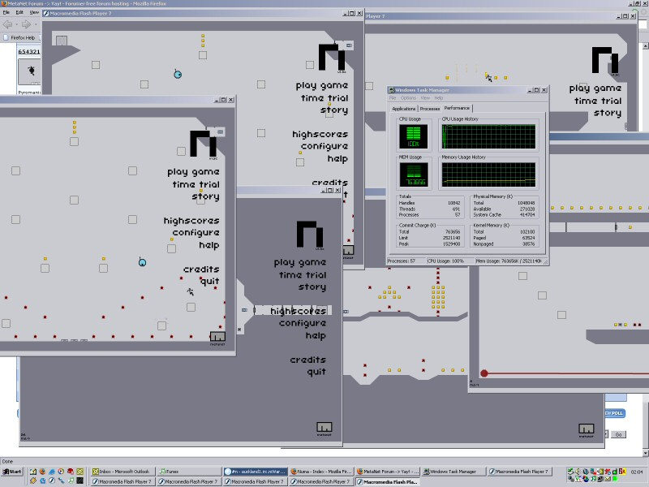
#45948 8 2005-01-13T07:40:10Z Lucidium I've never quite understood why anyone would want a webmail account for anything other than one-off registrations to avoid spam.
#46039 7 2005-01-14T00:49:21Z Lucidium I think someone posted a horizontal version of this a while ago. Or, something similar.
Anyone else remember, or am I just imagining things?
Either way, I think it looks really cool.
#46060 18 2005-01-14T02:11:05Z Lucidium Aw just leave the guy alone, he's obviously made his choices. If he wants to smoke pot, that's his decision.
(Go Darwin. Go Darwin. Go, go, go Darwin.)
Yup.
#46065 20 2005-01-14T02:31:49Z Lucidium Can't you just admit that you smoke it because it makes you feel good. And that there might be negative side effects?
Why do you need to come up with all this pseudo-science to justify yourself?
#46670 20 2005-01-18T07:45:45Z Lucidium Just trying something out here.
Works better if you, uh. Move far away.
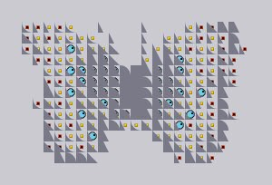
#46861 2 2005-01-19T08:22:59Z Lucidium Lordy.
I can't seem to tear my eyes away, even though I really really want to.
It's like the visual version of that sound that polystyrene makes.
[edit]
Nice find btw. I never noticed that.
NUMA NUMA YAY!
[/edit]
#47295 7 2005-01-22T15:35:49Z Lucidium Yeah. It's not that hard to just copy it into a text editor and delete the linespaces.
I take it this is what it's supposed to look like.
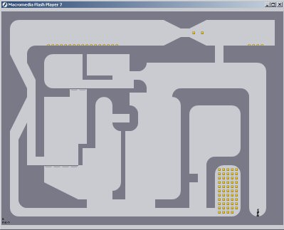
But I don't see what the challenge is. Is it missing some objects or something?
#47382 17 2005-01-22T23:52:51Z Lucidium People don't forget the last ten minutes of their life every time they reset a level.
If you put a trap door in. At best, it'll annoy people once, and make them play through twice. At worst, it'll just annoy people, and they won't bother to play the map again, now that they know what'll happen.
Anyway. Apart from that one thing. This looks like a pretty good map, if a little easy for most of the people on NUMA. It's a nice tileset, and the enemies are pretty well placed. Keep making maps, and I think you'll become a really good map maker.
#47531 25 2005-01-23T15:45:28Z Lucidium Man. I could go for a pizza tropy right about now...
/me wanders off in search of pizza.
*ahem*. Back on topic.
Just played the map on NUMA. I quite like it, and I'm looking foward to more maps from you.
#47581 137 2005-01-23T21:10:50Z Lucidium Do I smell... a challenge?!
I think I've rated a fair few of them already.
Maybe when I get some spare time (so... much... work...) I'll take a crack at them.
#47582 3 2005-01-23T21:11:53Z Lucidium I use my third arm. Which I grew just for you, baby.
No, really. I'm left handed.
#47583 24 2005-01-23T21:35:18Z Lucidium I wonder how many I've got. I'll just post here, because I'm too lazy to find another thread I've posted in.
[edit]
Ooh. Four. Not bad.
I think I post quite slowly though.
Not slow posts, but a slow rate of posting, I mean.
[/edit]
#47618 12 2005-01-24T00:04:38Z Lucidium Don't most people enjoy music and recreation?
But yeah. Us lefties, we're supposed to be all creative and lateral thinky.
We have to stick together against the dirty righties and their logic.
#47623 14 2005-01-24T01:18:57Z Lucidium Oh yeah?
Nice try, but I eat poo.
DAMMIT.
#47636 48 2005-01-24T02:03:37Z Lucidium Hey guys.
I've been playing around with this survival map for a while (never done a survival map before). I probably won't post is on NUMA, it's a little too short, and I think there's a couple infinite loops (or at least long ones).
But before I consign it to the trash, I figured I'd post it here, see what people think of it.
Cheers.
Attachment (lost): post-10-1106532217.txt
#47762 141 2005-01-24T16:29:17Z Lucidium I'm pretty sure I've rated all the maps on this page.
Up to 1.5 thousand now. Also, props to igi for all the rating he's doing.
On that note. I wouldn't mind getting my Rush Job maps rated, as I was thinking about making another one.
Rush Job
and
Rush Job 2
Also, if people don't mind, I'd love to get a few more ratings on this map:
Easy Squeezy
Basically because, I know it's annoying, but I didn't think it was
that bad
. I just want to see if everyone dislikes it, in which case I'll steer clear of too much squeezing in the future
.
Thanks!
#47799 11 2005-01-24T21:00:06Z Lucidium Love the pic.
I'm tempted to have a go at something like this. I haven't done any 3d work for ages, and what better subject than N?
#47800 3 2005-01-24T21:02:37Z Lucidium Afraid I have.
Completely forgotten about it though. How'd you find it, just playing about with the code?
#47889 144 2005-01-25T07:36:30Z Lucidium Hey, if you don't like it, that's cool. I'm not saying you're not allowed to!
I just wanted to get a couple more ratings on it, to get more of an average.
Thanks for the ratings tktktk!
#47890 51 2005-01-25T07:41:09Z Lucidium Yeah. I'm probably gonna stay away from survival maps. I'd end up getting all paranoid that there's some infinite loop I've missed.
About precarious (and/or deceptive). I've got a few ideas for jumps, and some test maps. But I'm trying to balance it so that it's not too insanely frustrating.
#1900 1 2005-01-25T17:27:36Z Lucidium
Wheee!
#48089 27 2005-01-26T13:49:54Z Lucidium *signs*
Makron, about DDAs taking a lot longer to make than action maps: They usually take a lot longer to make, I know. But they involve a much simpler workflow than action maps. You're mostly just adding new sections in one after the other, instead of working on the whole map at once. Also, action maps can take a lot of tweaking to get right.
For example, I know I spent almost two weeks tweaking Jacks and playtesting it, on and off each day.
But anyway, I still agree that DDAs are impressive things that deserve recognition. Maybe just putting DDAs in a separate section from the playable maps.
#48166 4 2005-01-27T01:07:11Z Lucidium I guess you could put a trapdoor switch under each piece of gold. And use that to fill in a bar somewhere.
Anyway, about your map.
I found it fun enough to try for what gold I did, but it wasn't absolutely amazing. It's just my personal preference, but I really didn't like the mines. (Then again, maybe I'm too soft.)
I quite like the collection idea, I just didn't really like the way it was done in this level.
About Eli's deathtrap (I think he just means that middle bit with the mines. Which was actually pretty death-filled) and the map being too luck based. Sometimes it did feel
annoying like that.
For example, the mines around the trapdoor switch, and the mined bounceblocks at the bottom. Any tiny slips there, and you're instantly killed.
Once again, this may just be me being a big softy, but I think tiny mistakes like that shouldn't have such a major penalty.
#48177 5 2005-01-27T01:45:16Z Lucidium Tsuki giving you a 30% warning was more than a little harsh. But there's no need to make such a big deal about this.
It's just accepted practice here (and on pretty much every forum) to leave dead threads alone unless you've got something useful or important to add. That's not really unreasonable.
#48183 6 2005-01-27T02:21:46Z Lucidium Yeah, he's harsh. But he did say he liked the collection idea. And I've definitely seen very positive comments from him.
With the sheer number of maps you've produced (not saying that's a bad thing), there's bound to be a few in there that someone will really hate.
#48233 2 2005-01-27T16:35:11Z Lucidium You should just keep them to yourself.

Um...
Oh, who am I kidding?
I
love that. Post it on NUMA
now!
#48451 9 2005-01-29T13:21:11Z Lucidium "Guy" is being used as a slang term for a person.
Like, "man" in "You shouldn't do that, man."
So it's saying "That was harsh, man."
#49085 716 2005-02-02T20:08:55Z Lucidium Katamari damacy?
(Side note: I wish I had a ps2 to play that game.)
#49093 4 2005-02-02T20:42:24Z Lucidium Yup. N has taken over my brain too. It's caused a major decline in the volume and quality of work that I do
. I've gotten a few of my friends addicted too.
btw, kab. How do you find out how many times you've opened a program?
#49094 718 2005-02-02T20:48:18Z Lucidium I'm actually thinking about buying one, mainly because of that game. And I like the look of the new, smaller models.
Of course, it'd help if I had some of that money stuff everyone's always talking about.
I'll get a new screenshot in a minute.
#49107 719 2005-02-02T22:57:51Z Lucidium Here you go.
Seeing as how quickly my last one was guessed, I've tried to make this one harder.
[edit]
Ah.
It's on the Megadrive. (Hope that doesn't make it too easy.)
Thanks for reminding me Daddaluma.
[/edit]
[edit] New image below. [/edit]
Hmm... nasty jpg compression. I might switch it to a gif.
#49108 48 2005-02-02T23:08:28Z Lucidium 2. Good DDA's are much more complex and require an insane amount more tweaking. 
You don't need to tell me that. Look at the dda's I've made.
#49239 12 2005-02-04T08:12:39Z Lucidium I actually find it very useful sometimes.
#49295 20 2005-02-05T00:02:03Z Lucidium I mostly use it when I'm making maps (especially DDAs) or rating them.
I wonder if I'm giving too much away.
#49324 173 2005-02-05T03:47:46Z Lucidium Ooh. Now that I've actually got a sig, I can post here.
so_what? 8/10, mainly because that gun looks so cool, and I like the smoky/flamey red texture in the background.
#49381 14 2005-02-05T16:21:20Z Lucidium #49383 721 2005-02-05T16:29:08Z Lucidium Here's a bit more.
Too hard? Too easy?
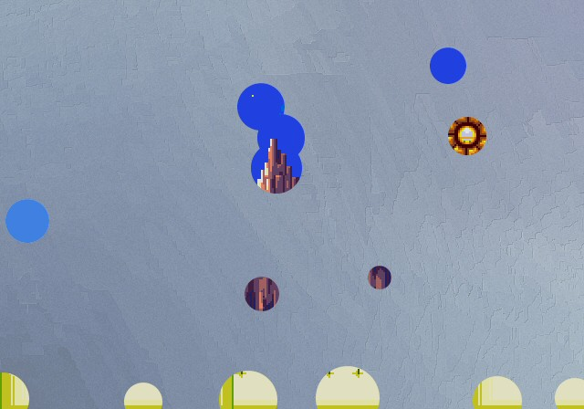
#49817 14 2005-02-09T18:00:46Z Lucidium I'm not gonna go into a big detailed argument about evolution right now. But I would like to comment on the "gradual" processes we're talking about here.
Keron. You're thinking about gradual changes in terms of actual parts, like adding bits onto a machine. But living organisms aren't as simple as that.
The gradual changes are supposed to be occurring in the DNA, which is several steps removed from what actually grows on the body. A tiny, gradual change in DNA can cause a huge change on the level that you're thinking of.
Say, for example, sickle cell anaemia. This is caused by a single changed base in one gene that happens to code for haemoglobin. This produces haemoglobin with slightly a slightly different shape, which in turn produces blood cells of a slightly different shape. When there's too much CO2 in the blood (if, say, the sufferer is exercising), the blood cells bend into a sickle shape. This makes it difficult for them to move through capillaries, which is very painful, and may damage tissues by removing their oxygen supply. Most people with this condition die earlier than they should because of this.
So, we've got "it hurts when you exercise, and you die young" (which seems a pretty major change) from a single tiny error in the DNA.
I hope that made sense / was helpful.
#49818 15 2005-02-09T18:15:10Z Lucidium All physical stuff (for want of a better word) must come from somewhere.
Oh. And I wanted to discuss this point more.
So:
Why?
(sorry for the double posting)
#49985 724 2005-02-10T21:56:38Z Lucidium No other guesses?
Should I reveal more?
#50066 728 2005-02-11T08:11:58Z Lucidium Well, no one's got it right yet.
#50067 22 2005-02-11T08:16:01Z Lucidium Hi! Don't worry, I'm still here. I check the forums pretty much every day, I just don't post that often.
Though, have you been pm'ing me? Because I haven't recieved any new messages since Jan 28th. Which is kinda odd.
#50250 10 2005-02-13T01:41:14Z Lucidium Heh. I keep getting called luci, in pretty much every online community I participate in.
Makes me wonder what kind of impression I give...
#50294 733 2005-02-13T13:36:09Z Lucidium Wow. That's more than a little impatient. I only posted two days ago, and the only new posts after that happened this morning. How fast do you expect me to respond?
Anyway, doesn't matter now, so no worries. TTK got it right, it's Sonic 3.
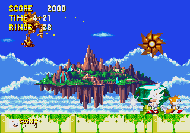
#50382 2 2005-02-14T12:24:27Z Lucidium I don't think I've seen that suggested before. Sounds like a pretty good idea to me.
When I don't want people to climb up walls, I usually try and use angled tiles that you can't wall climb up. But that also means a whole lot of playtesting to make sure there's no trick or cheat.
Slippery walls would be much better.
#2018 1 2005-02-14T17:00:38Z Lucidium In ninja basketball, they have to use extra tall hoops.
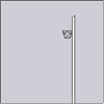
Doesn't stop them dunking though.
[edited to remove sig, to keep things running smoothly.]
#50426 48 2005-02-15T00:39:06Z Lucidium Right, cool. Half term.
I can start judging now, just need to find all the submissions.
#50486 165 2005-02-15T20:41:07Z Lucidium Wee! Over 2000 maps rated!
~35% done rating the whole archive
.
#50579 4 2005-02-16T17:00:21Z Lucidium Okay, interesting argument. But I've got a few questions about the assumptions it's based on.
First of all, since when does oxygen stop amino acids forming? Every amino acid molecule contains at least two oxygen atoms. It can't form without oxygen.
Second, why would a lack of an ozone layer make life impossible? At most, the extra UVB radiation would increase mutation a little. Which isn't necessarily a bad thing.
Third, about the gases that form amino acids reacting away. Most organic reactions create many different products. Just because the yield of the particular one you're looking for is low, doesn't mean it can't happen. It just means you won't get as much of it as you do the other products.
Fourth, a cold trap is used to remove moisture from a vacuum system. Its possible that in the experiment we're talking about here, it could have been used to collect the amino acids for analysing. What I think is more likely is that is just happened to be part of the apparatus, and the author didn't realise what it was for. Amino acids survive quite well inside our own bodies, and are actually quite stable. Why does the author assume they'd be destroyed without a cold trap?
Fifth, the most basic amino acid, glycene, does not have optical isomers. So there's no problem with it forming L and D types.
Sixth, the cell membranes in bacteria, one of the most basic forms of life, are full of D type amino acids.
Seventh, optical isomers react may identically with non optical molecules. But they do react differently with other chiral molecules. I'd like to know why the author thinks there's no answer to how they get separated.
Finally: I could pick holes through the whole of the article you linked to, the vague references to experiments, the lack of understanding of how cells function, not to mention all the assumptions he's made without any backing.
There.
I've been trying to avoid this whole philosophical discussion section because I knew I'd end up making long-ass posts that took ages. And I don't particularly want to get into heated arguments with forum members here, which is where these usually go. I just hope we can keep this one a bit civil.
#50580 12 2005-02-16T17:06:26Z Lucidium Right, here's the generally accepted basics of it.
First, you need to get a wormhole, and be in control of both ends of it
Then, you keep one end here, and send the other one out in a spaceship or something. Anything that can fly very very fast.
The end that's flying around really fast will experience time slower relative to the end on the ground.
So, a few hundred years later, the end in the spaceship will be a little bit behind the one on the ground. Say, a month in the past.
Then, you can jump in the end on the ground, and travel a month into the past.
This is why you can't travel farther backwards in time than the time at which the wormhole was created.
And, about travelling faster than light. All of the equations to do with relativity and the speed of light are symmetrical. So, theoretically, time moves slower and slower as you approach the speed of light. At the speed of light it stops. And above the speed of light, it moves backwards. Many particle interactions make sense just as well if time is moving backwards as if it is moving forwards, and if the particles are their anti-particle equivalents.
#50581 47 2005-02-16T17:13:38Z Lucidium There's actually a theory to do with this, and the total unpredictability of quantum interactions.
You can never completely know the state of a particle, so it's impossible to completely accurately predict things. The most common example of this is trying to measure the speed and position of something.
The more accurately you know it's position, the less accurately you can measure its speed. And vice versa.
Anyway, maybe there's some connection between the choices we make, and this unpredictability at the very tiniest level of what goes on in our brains. Perhaps our consciousness is based on some quantum level, affecting how the particles in our brain interact.
I'm not saying this is what I believe, I'm just mentioning the theory because I thought it was interesting.
#50587 49 2005-02-16T19:57:26Z Lucidium 
That example wasn't anything to do with it not moving or being. All it was saying is that, in quantum mechanics, some things are fully unpredictable.
#50615 15 2005-02-16T22:38:58Z Lucidium Just because it's used in movies doesn't mean it's completely fake. And anyway, I never said I thought it was possible, I was just relating the most common theory.
The solutions of general relativity that allow Einstein-Rosen bridges all require matter with a negative energy density. And it's not known yet whether or not this type of exotic matter could exist. I'm just saying, it hasn't been disproved yet. That's all.
Lastly, you only need a wormhole if you want to time travel instantly. If all you want to do is see the future, just fly really fast for a while relative to Earth. So in a few years for you, much more time (depending on how fast you go) will pass back on Earth.
Or, y'know. You could get a huge, super dense cylinder made out of something stronger than normal matter. Spin it incredibly fast along its axis. Then fly down it in a spiral.
#50817 5 2005-02-18T22:38:33Z Lucidium I dunno, I sometimes use a non-reset level to help me position things.
And I usually save any level I'm working on every 10/15 minutes (I'm paranoid like that).
But yeah, I've still messed up a few times and done it by accident. This would be pretty helpful.
#50818 3 2005-02-18T22:40:41Z Lucidium It's very easy to hide the mousecursor in flash, but is it really that much of a bother? And if the cursor was hidden, how would you place it to respawn N?
(I guess the cursor could fade out when it hasn't moved for a while, that could work.)
#50823 5 2005-02-19T00:05:22Z Lucidium Well, whoops.
But yeah, I agree that it's not really that annoying.
#50859 10 2005-02-19T02:06:59Z Lucidium JeR(K), I meant to reply to you ages ago.
I thought I had, but obviously I haven't.
Anyway, feel free to put it in your sig, just stick a little credit somewhere.
Sorry I didn't reply sooner.
#51058 8 2005-02-20T15:02:49Z Lucidium o.O
Ok.
Can we get any sensible counter-arguments here?
Or shall we just continue blowing rasberries?
#51088 12 2005-02-20T22:14:47Z Lucidium That was basically pointing out that they didn't have any counter-arguments
Hey, I know.
I was just putting it in words.
And, y'know. I kinda wanted to revive the thread, because it's interesting, and I wanted to get some more responses. But carry on; every well reasoned argument needs some quality face-pulling to back it up
.
#51725 61 2005-02-26T17:22:29Z Lucidium You can be spiritual all you want and it won't save ya...
Here's my logic:
If I'm wrong, I lose nothing.
If I'm right i gain everything.
If you're right you gain nothing.
If you're wrong you lose everything.
I dunno, now I feel kinda sorry for u...
That's a very good argument for believing in God. The only problem is, it's based on the assumption that God exists in the first place.
How about this: What if there's some advanced alien race, watching over us. And when we die, they turn up and go "Well done for not being taken in by any of those religions, you can come into this heaven we've made for you".
Then everything you said would be reversed.
#51904 75 2005-02-27T15:16:30Z Lucidium There is enough evidence that our location in the universe is so exacting for life to exist that we are in the center in terms of the preciseness of it. our location in the galexy is very exacting. We are inbetween the arms of the spiral galaxies. If we were in the arms, there are super novas all the time, and we wouldn't exist. we are just sitting in the middle perfectly happy and safe.
We are far enough away from the supermasive black hole that we aren't sucked in, wet close enough that the supernovas that happen near us aren't a threat because their energy is partly absorbed.
We are in the center of the world if you start the center where life could happen.
and that is only in our galaxy. Our place in the universe is very "chance" as well... and by chance I don't mean luck.
Hold on. Are you saying that these perfect conditions are
so unlikely, that that's evidence for some higher power at work?
#51960 80 2005-02-27T20:27:16Z Lucidium If the conditions weren't perfect, we just wouldn't be here. There wouldn't be anyone around to go "Hey, it sucks here."
The conditions seem perfect for us because that's what our species has developed into. If the sun were cooler, we wouldn't think it was cold all the time, it would just be normal to us.
It's like seeing a tree, and being surprised at how perfect the conditions in a forest are for it. It doesn't make sense, trees just don't grow anywhere that doesn't suit them.
#51968 85 2005-02-27T22:01:39Z Lucidium That argument only seems sound because it skips over the whole point of this. No one's saying that the circumstances aren't highly unlikely, the problem is with what conclusions you can draw from them.
With the Earth situation, you're arguing this:
The environment on Earth is so perfect, some higher power must have designed it to be that way.
The equivalent with the firing squad would be:
Somehow none of the bullets hit you, so someone must have arranged for all the marksmen to miss.
There's no evidence with the marksmen that someone arranged for you to survive (say, for example, by messing with the marksmen's guns). There's no reason to draw that conclusion from your survival, and it's not sound logic to do so. The only thing you can say about the situation is that it was unlikely.
To put it another way:
Try making the marksmen situation into an analogy of our planet.
What if you took a hundred people (to represent a bunch of different possible planets), and shot at them, one after the other.
Then you ended up with 99 dead people, and one survivor.
Should the survivor conclude that he was special in some way? Or that the firing range was designed so that he, and only he would survive? Sure, it's an incredible coincidence that he survived, but any of the other 99 could just have easily have lived. To them, it would also seem incredibly unlikely that they survived, but that doesn't make them special.
It's a subtle logic error, but it's still an error.
[edit] Basically what Eli said, but more long winded[/edit]
#51977 88 2005-02-27T22:43:32Z Lucidium Look, I'm trying to keep this an intelligent discussion, and you're complaining about the words I choose? That's just the way I talk, jeeze.
Also, just because you find the odds astronomical doesn't mean there's anything special about the situation. Why should something like getting a 6 when you roll a die just be probability, but any of these situations are suddenly mystical? The interpretation of chance doesn't change just because the numbers get big enough to freak you out.
And you're complaining about the numbers I used in an analogy? It's just supposed to be a tool to help with explanation, not a perfect simulation.
And finally, it doesn't matter what the odds are. The probably has nothing to do with it.
This isn't an argument about numbers. It's an argument about logic. And the logic applies just the same whether there's 100 people or 100 million.
Edit for your edit:
It's not illogical at all. We know for a fact that one time, it worked. We don't really know anything about how the universe works, so we can't come up with an accurate probability. But from the very fact that we're here, we know that there must be a possibility for life to occur, and we know that that possibility happened. It's not unlikely that it happened, it's completely certain that it did
#51983 91 2005-02-27T23:23:29Z Lucidium We're coming at this from different directions, that's the real reason we're disagreeing.
You're assuming that humans had to be the way we are, so we had to "find" a perfect planet to live on. In this case, yeah, that's pretty unlikely.
But we're assuming that life evolved to suit the environment it was in. This way, if the conditions were different, we'd just have evolved differently, and everything would seem just as perfect.
But aside from that, I had to respond to this:
Wether or not it happened is besides the argument.
You can't just dismiss an argument like that. Either you're ignoring what we're saying, or you don't understand it. This isn't just some thing we've come up with on the spot, it's an important point that you really ought to consider properly.
#52442 3 2005-03-03T21:45:46Z Lucidium I used to have semi lucid dreams quite often. As in, I knew it was a dream, I was fairly aware of what was happening, and I was able to control some things in it.
Not so much any more, though I still have very vivid dreams most of the time.
#52457 185 2005-03-03T22:50:37Z Lucidium I just sifted through a backlog of about 50 new maps, which brings me up to 2345 rated votes (about 38% of the whole archive).
Getting there... slowly.
#52686 106 2005-03-05T11:05:46Z Lucidium Right. Once NUMA gets back up, I'll get onto the judging.
#52946 8 2005-03-07T00:12:59Z Lucidium Having just had to wade through that ridiculous pile of maps from Yanu, I don't think I could handle having to comment every time I wanted to rate a map 0.
#53007 191 2005-03-07T04:48:44Z Lucidium I've got a couple that only need one more vote.
Up and Down
and
Rush Job
I'm not too bothered about what they score, I'm more interested in seeing if anyone can get a completion demo. Up and Down's probably a bit long, but I know Rush Job is alright once you figure out what to do.
Cheers guys.
#53742 5 2005-03-11T23:43:34Z Lucidium From what I've heard, I get the feeling that the main problems with N's code are in the architecture rather than the code itself. And from what I know of Flash, it's not very easy to go in and change stuff like that without starting from the ground up again.
But anyway, still a great idea if it can be done.
#54413 55 2005-03-16T17:00:46Z Lucidium I managed to stay around 10k for quite a while just now, mostly just lucking out I think. Am I just seeing things, or does shooting ships down speed you up?
#54546 3 2005-03-17T19:18:43Z Lucidium How about as an unlockable?
#55002 52 2005-03-20T11:21:25Z Lucidium So much for staying away from survival maps...
I didn't think this was worth posting on NUMA, but you can do some cool stuff with it that I thought you guys would like.
This is one of those really tiny survival maps. There's only nine squares to work in, and you've got a rocket turret and a laser in there with you.
I know it sounds a crap and stupidly hard. But check it out, it's a lot easier than it sounds, and I think it's surprisingly fun.
Attachment (lost): post-10-1111317685.txt
#55066 57 2005-03-20T22:02:34Z Lucidium Hey, thanks guys. You convinced me, I've posted it here:
http://numa.notdot.net/map/6467
The name was a last minute choice. I was going to call it Lasket, from Maniac's demo date, but then I thought up Twixt.
"Twixt," as in you're caught between the rocket and the laser, and also because it sounds like "twist", which is what the motion in the map reminds me of.
#55083 3 2005-03-20T23:11:07Z Lucidium I'm sure plenty of people had the idea on their own at some point or another. But the earliest DDA I can find on NUMA is this:
http://numa.notdot.net/map/51
I don't know if it was done on the forums before NUMA, but it wouldn't surprise me.
#55215 7 2005-03-21T21:25:31Z Lucidium How about a wiki?
Then anyone could add a map to the list, and anyone could comment on whether or not it should be there.
#55224 59 2005-03-22T00:49:04Z Lucidium Cheers syntax. I'm pleasantly surprised that Twixt has such a high rating. I thought it was more just cool-looking than anything else
. But so long as people enjoy it.
Anyway, I thought I'd show you guys a sneak preview of something I've been working on, mostly just to tease you (well, mostly just tktktk). I've got to the point where I'm pretty happy with the mechanics of it, and I'm just tweaking the way it looks.
I'll probably post it to NUMA soon, once I come up with a name.
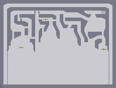
#55226 69 2005-03-22T01:01:40Z Lucidium Obviously getting through the levels is not a challenge for you guys.
Why not try and get high scores instead?
#55338 63 2005-03-22T13:41:34Z Lucidium Daddaluma: Yeah, I know exactly what you're saying. I think the problem is, I spend too long working on each map. So I end up getting so good at it, it doesn't feel hard to me anymore. I'll take that kinda thing onboard though, and try and consciously avoid making things too long.
so_what?: Checking it out now. [edit] Great demo man. There were a couple spots where it looked like the rocket was gonna sneak up on you, but you always seemed to be expecting it. Nice one.
tktktk:
, I thought you might zoom into the screenshot and take a look around, but I didn't expect you to actually reconstruct the map! Well, I guess you'll just have a headstart when I do post it.
[edit] Oh yeah, one other thing. Was it the section after the second switch, where you have to jump up into a diagonal gap? I was thinking of putting a launchpad or something underneath there to make it more forgiving. Or maybe widening the gap, if it comes to that.
#55360 16 2005-03-22T17:35:42Z Lucidium Brickman: Yeah, wikis are easy to vandalise, but the point is that they're even easier to fix. And we could password it so that only people from the forums can edit.
I've been playing around with pmwiki for a different project. It's pretty simple, and works well.
Even if we decide to go with a panel (I'm starting to think it might be simpler), we could start up an N wiki anyway, might be cool. For example, stuff like a map making tutorial, I don't have the motivation to do all on my own. But if we could work together, everyone contributing a little bit, it would be a lot easier.
[edited for clarification]
#55379 65 2005-03-22T19:31:13Z Lucidium Damn. And I was trying to make this one easier than usual!
The thing is, it's really hard to give people a second chance without letting them cheat. Like, I originally planned to have doors along the top that would open at certain checkpoints, so you could fall and try again. But I haven't found a way that doesn't also let people skip whole sections.
#55381 22 2005-03-22T19:34:07Z Lucidium Stepself, I meant a wiki site on its own for N. Not the wikipedia article.
But for the hall of fame, I've come round to thinking a panel's the best idea. More reliable.
#55394 68 2005-03-22T20:34:25Z Lucidium Right, I think I've come up with something that works. I've raised the floor, so you can fall from most places without dying. It doesn't quite feel as tense, but oh well.
I've put in a couple "second chance" doors. It's possible to skip small sections using them, but doing so also locks off a little extra gold at the end. So all-gold is only open to perfect runs.
I haven't changed the actual puzzles, just made things a bit more forgiving. It's still very, very hard. But I've got a reputation to live up to
.
I'll test it a little more, try to make sure everything's working right. Then I'll probably post it to NUMA tonight.
[edit] I hadn't really thought about using teleporters brickman. I've never used them before, but I might work them into the next jumper puzzle I do, if it's as hard as this one. Though I usually try to stay away from code editing, in these cases it might be necessary.[/edit]
#55436 70 2005-03-23T00:26:15Z Lucidium Posted here:
Tenacious
I've left it mostly the same, apart from the second chance type doors at the top and side. And one door in the middle because I felt that the solution to that jump (where you have to fall out of the diagonal chute) might be too odd/hard for some people.
I like the way the tileset looks on this one. Though I'm a bit worried that, as you say, it's too damn hard.
I might post some hints and tips in here, to help people out. But otherwise, I just hope it doesn't frustrate people too much.
Thanks for the input guys.
[edit] Just thought of a couple things:
The absolute limit before you fall off a wall is when N's hand reaches the bottom edge. There's a couple jumps where you need to use this.
You'll jump differently if you're pressing into a wall when you jump than if you're just falling near it.
And remember, if you jump up into a roof, you'll float for a moment and fall very slowly. You can use this.
[/edit]
LV: I've played around with teleporters a bit, I just don't like the idea of code editing. But for something like this I'd probably be more happy with using them. I'll see what happens the next time I make a jumper puzzle, I'll probably need some help getting them to work nicely.
[edit2]
Ouch. Not exactly getting a positive response on NUMA. Obviously I've once again made it way too hard. Maybe if I post a completion, it'll placate people a bit.
[/edit2]
#55513 76 2005-03-23T13:54:09Z Lucidium Thanks guys. Glad it's turned out to be not too frustrating.
About that diagonal jump, tktktk, you've got to sorta hook around into it. Push right until you're almost underneath it, then push left. Not sure how to explain that better.
Nice demo on Corruption Daddaluma, that's one of my favourite maps of mine.
About the squeeze maps: I made those two about the same time, when I was playing around with extreme squeezes. You pretty much have to get the technique down perfect for it to work, and I know now that that doesn't exactly make a fun map. Maybe I should have put them down as test maps. The other thing is, I got to the point where I could hit the jump key so fast that it was easy for me, and I didn't realise how hard it would be for most other people.
I'll try and get a nice completion demo for Tenacious soon.
#55555 78 2005-03-23T17:37:33Z Lucidium so_what?
You can't quite jump high enough from the right to get up that funnel. You need a little extra speed.
If that doesn't help, here's a demo up to the second switch, but please don't watch it unless you're completely stumped.
[edit] Weird, didn't seem to attach. Anway, uploaded it
here instead. [/edit]
[edit2] While I'm at it. I figure I might as well post this
completion demo. It's not too fast, and I don't think I'll post it to NUMA until I get a perfect demo, but it shows how to do all of the jumps.
As usual, please don't watch this until you've tried everything yourself. I just wanted to make sure no one thought it was impossible.
[/edit]
#55559 80 2005-03-23T17:50:20Z Lucidium Ah, unlucky.
I know you've done it, I just write something like that whenever I post a demo to warn anyone else away from watching it before they've tried things themselves.
At the moment, it looks like you're the furthest through. And I'm still hoping to see a completion demo on this, wink wink nudge nudge
.
#55571 83 2005-03-23T20:17:10Z Lucidium Holy crap. Nice one! I wasn't expecting someone to complete this for a while. Great demo too, faster than I've finished it.
Congratulations on completing it, not to mention being the first to get there.
Also, glad people seem to like it, even though it's so frustrating. It's got a much better rating than I was expecting.
Congrats again.
#55633 87 2005-03-24T01:35:02Z Lucidium I posted a completion a few posts back, along with the demo for the second switch (I edited the post a bit after).
I'm still trying to get a perfect completion >_<
#55753 9 2005-03-24T15:36:49Z Lucidium I think I've probably posted
this before. But hey, the thread calls for it.
I never finished it. If I had, there'd probably be some N in there somewhere, but I made most of it before I even started playing N.
#55816 11 2005-03-24T23:54:24Z Lucidium That's Domo, the mascot for a TV channel in japan. I've even got an alarm clock of him that waves its arms and plays music when it goes off.
#55840 5 2005-03-25T01:17:49Z Lucidium It takes up a bit of space, but couldn't you do something like this?
Attachment (lost): post-8-1111713469.txt
#55844 9 2005-03-25T01:34:55Z Lucidium Ah, good point. I guess it is kinda wiiiide.
... Lasers maybe?
/me goes off to try.
[edit]
Yah, here. This works a little better, and it's smaller. I know it's still no wall-guard, but it's the best I can come up with with what's in the game at the moment.
[/edit]
Attachment (lost): post-8-1111714746.txt
#56247 89 2005-03-26T21:07:18Z Lucidium Who's read Ender's Game? This'll probably make more sense to you if you have, but anyway:
Just read it recently, and got inspired to make this tileset. I'm trying to recreate the feeling of the battle room in the book. Like, all the floating boxes, the feeling of bouncing quickly off walls. The four switches are supposed to represent four frozen soldiers that you need to open the enemy gate.
I'm still playing around with positioning of the laser drones, and I'm gonna work in some other things as it's a bit bare at the moment. But I wanted to get some oppinions first.
The tile blocks are supposed to be 3d boxes, by the way.
Also, I'm trying to remember some quotes from the book.
Stuff like, "Remember, the enemy gate is
down." and something about the enemy being on you as soon as you leave the door (I tried to work that into the map).
Thanks.
Attachment (lost): post-10-1111871238.txt
#56282 93 2005-03-26T22:29:18Z Lucidium so_what? : Cheers. I'm pretty pleased with how the cubes turned out. Though I might edit some of them a little to add some perspective.
Bricky: There's a part in the book where Ender's army uses four frozen team mates to open the door. I'll probably change the way the start works, but it's not *that* hard, is it? All you have to do is drop down onto the side of one of the cubes. And I can't change the gravity, but I think I've made the map flow fairly well, so you can still fly around pretty well. Eh, it's the best I can do with what I got.
Manian: I'd like to know how the map feels if you don't know anything about the book. I think the association makes me think better of it than if it was just a random map, if you know what I mean.
Thanks guys.
#56305 96 2005-03-26T23:35:54Z Lucidium From what I remember, they only had to touch their helmets to the corners. Surely someone could push four frozen team mates to the right positions? Eh. You obviously remember more detail from the book than I do.
Anway, it's just a tribute map, and that's the best story I could think of to explain the switches.
#56309 98 2005-03-26T23:51:15Z Lucidium Ok, ok.
I bow to your superior knowledge of Ender's Game.
Any ideas for a better reason to be collecting switches?
#56311 147 2005-03-26T23:52:57Z Lucidium Ahm. I'm still here. Sorry about the super-slow judging. I'll get onto it as soon as I can.
#56335 29 2005-03-27T00:51:38Z Lucidium Sad to see you go, man. It'll be weird without you around, you were one of the forum members I really respected.
Hope we'll see you again some time.
#56516 11 2005-03-27T20:35:39Z Lucidium I thought XIII was great, and I never had a problem with the sound effects getting in the way. In fact, I can hardly remember them ever covering something up.
#56580 22 2005-03-28T01:20:05Z Lucidium How about

and
?
#56756 16 2005-03-28T19:41:42Z Lucidium Hey, just saw this thread.
Dunno if any of my maps got in, but if they did, add away. No problems here.
#57176 23 2005-03-30T22:26:13Z Lucidium Lemme weigh in on this. Just wanted to add a couple comments.
About the statistics being thrown about: Just because five votes isn't a large enough to produce a very accurate average, doesn't mean they doesn't provide any information. It just means the information has greater possible error, but it'll still give a rough idea of whether people like the map.
And anyway Heartview, if you're talking about your overall rating, you have 76 rated maps. That means at least 380 votes. I'd say that's a sizable sample.
One thing I've noticed about your maps, is that you often try to create some kind of game within the N world. Like, "Freeing the Drones" for example. The thing about that is, once you figure out the rules of the game, there's not much fun left to be had. Some of your maps aren't like playing N at all, they're like an entirely different game. Personally, I think those maps are really great, even if they're a little short-lived. Obviously though, they're just not mainstream enough to please the majority of people. Likely because anyone who's on NUMA is there because they liked the original levels in N.
One other thing, about this whole place being a "popularity contest". Now that's just bating needlessly. Maybe people give map makers who are known to be great the benefit of the doubt. No one can play every map extensively, say if they're just not good enough to complete it. But I don't think you should assume that everyone who rates maps knows the author, or is unable to be objective if they do. And I don't think you should be putting this community down, you're part of it too.
Anyway, like you always say, you shouldn't care about the ratings system if you don't want to. It's not as if you're getting straight 0's anyway. Every one of your maps is worth playing, and I'd hate to see you stop making them.
#57179 11 2005-03-30T22:43:25Z Lucidium Ooh.
It'll be like a birthday present!
#57357 4 2005-03-31T17:15:40Z Lucidium A lot of his maps do deserve to be there, but I agree, things like
this are going a bit far.
#57513 60 2005-04-01T06:33:18Z Lucidium #57514 22 2005-04-01T06:36:20Z Lucidium Hell yeah!
N1.4a?
#57616 3 2005-04-01T20:48:52Z Lucidium Heh. It's kinda weird getting a "new highscore!" on pretty much every level I complete. I'm used to the highscores being dominated by loads of near-perfect runs.
#57832 8 2005-04-02T15:23:39Z Lucidium I found that, if you just sorta go for it, and take a running jump over that last mine, you can clear the mines and the floorguard in one go pretty easily. But it's a bit of an all-or-nothing jump.
#58025 5 2005-04-03T10:53:05Z Lucidium There you go, just posted a completion demo.
#58700 103 2005-04-06T10:33:43Z Lucidium Do we have a sonic_mojo from NUMA here on the forums?
Apparently he actually found Tenacious
easy.
Quote
Yeah
Its not as great or hard as you claim.
For me to beat a level first time is saying something.
Nice looking map, and average Idea.
so I gave you 3/5
I'd love to see some demos, y'know...
Though I do wonder why you'd write something like this on a thwump-DDA:
Quote
noooooo
Use A DDA without thumps...please.
thumps are the devil!
Eh. Just want to know what's going through his head.
#58940 19 2005-04-08T00:14:24Z Lucidium Ninja - 1160
Mines - 894
Floor guards - 224
Gauss - 389
Rockets - 251
Chainguns - 76
Lasers - 288
Drones - 988
Thwumps - 203
Total - 4473
#58942 23 2005-04-08T00:17:16Z Lucidium I've always been quite happy with PSP. Though I've got photoshop, I don't use it that much.
#59018 29 2005-04-08T11:34:46Z Lucidium Actually, sorta explaining what I said before:
I think the different programs are good for different uses. Like, I wouldn't use photoshop to do any text treatments, but then it's better for layering up complex effects. And I do like fireworks for doing simply styled vector graphics, though illustrator is better if you want to do something complex. Paint shop pro is just the one I'm most used to, and I think it's a good all-rounder too.
#59238 112 2005-04-09T13:10:29Z Lucidium Oh lordy, don't get that damn song in my head again. I was doing that for at least a month.
Right. If I can drag this thread back on topic again.
Here's a DDA I've been working on for a little while. Basically, I'm just trying to keep everything going really fast and smooth. Obviously, it's not finished yet, as N goes flying into that laser. Speaking of which, I'm not sure if I like that. It kinda distracts from the simplicity of it, even if it does provide some cool close calls.
Anyway, tell me what you guys think, what I should do with it from here on, that kinda thing. (Oh, and check that first thwump out. N goes across the whole map six times before it resets.)
Attachment (lost): post-10-1113052229.txt
#59242 23 2005-04-09T14:23:30Z Lucidium Ahhh...
/me relaxes.
There. According to the highscores, I'm the eigth person to finish the game (assuming everyone with a highscore on 89-4 has done all the other episodes).
Now, this secret...
#2487 1 2005-04-09T17:05:04Z Lucidium This is probably a bad idea, posting here, seeing as you guys can smash my highscores. But nothing wrong with setting a challenge for myself
.
Anywy, as of this post, I've got 0th place throughout ep 67. Probably the first, and last time I'm gonna have that.
#59262 3 2005-04-09T17:24:56Z Lucidium Hey, thanks!
And thanks for pointing that out. I just redid that one, got an extra second or so.
#59353 6 2005-04-10T01:43:09Z Lucidium Ah! You're the one who's had me playing level 4 over and over. It took me ages to get it back last time. I'll give it another go tomorrow, after some sleep
.
[edit]
Hah! Took it back! With just over half a second to spare. I managed to jump over that last drone while it was down, and I can't see a better way of doing that. There might still be a little bit to get at the end though.
[/edit]
#59411 10 2005-04-10T11:36:01Z Lucidium If money's a problem, and you don't like the idea of doing... something... with the free trials. Just grab an older version off some random computer mag. Most of the new features you'd miss out on are just labour saving things that it'd do you good to learn how to do yourself.
#59412 9 2005-04-10T11:42:48Z Lucidium We do have this Maths Challenge thing. The prize for doing well in one round is that you get to do another one.
They were less straight maths questions, and more puzzles that you needed maths skills to solve. Things like:
If you start with this string:
"MI"
And you have these rules:
You can add "U" to any string that ends in "I"
You can change "Mx" to "Mxx" (you can double anything that comes after M)
You can change "III" to "U"
You can change "UU" to nothing.
Prove whether you can or cannot produce the string "MU"
Or something like that, anyway. As I remember, they were fairly open ended questions like that. Proving things about prime numbers, that kinda stuff. Not done one for years though, too much bother.
[edit] That puzzle above is one I read in a book recently. Not one I actually remember being on a maths challenge paper. But the puzzles on the papers were in that style, though usually a bit more complex.
[/edit]
#59504 16 2005-04-10T22:51:24Z Lucidium No, the rule is:
Mx -> Mxx
As in, the whole string that comes after M can be doubled. And yeah, it's not possible.
You need to get a multiple of three, which you can't do with those rules. It's easy to see that, what's hard is proving it conclusively.
#59686 3 2005-04-11T22:06:56Z Lucidium The secret mode was unlocked as soon as I loaded up 1.4, so I haven't seen any messages about in 1.4.
This reminds me though. Mare, Raigan, is there any way to control the secret mode outside of the configure menu?
#59694 6 2005-04-11T23:15:37Z Lucidium I use it quite often, actually. Which is why I was asking about ways to control it outside of the configure menu. Could be quite useful.
Uhm. I don't want to say much more, for fear of giving away too much.
#59796 14 2005-04-12T21:02:36Z Lucidium I use it for DDAs all the time, and sometimes watching demos.
#59821 209 2005-04-13T00:05:20Z Lucidium Hey. I'm not gonna make any excuses, I just wanna apologise to everyone for holding things up and taking so long.
If I can't find time by the end of this week, I'll step down as a judge.
Sorry again.
#59913 5 2005-04-13T17:23:52Z Lucidium Yeah, your skin doesn't breathe. But it's still a good idea to let it out in the air once in a while. Otherwise, basically, it'll start smelling grade-A nasty .
Oh, and here's that smilie.
#60039 13 2005-04-14T22:13:59Z Lucidium Not bad, I don't think. Though personally I think the current blue ones are nice, and fit with the blue theme.
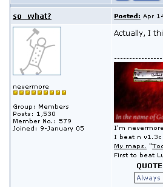
[edit]On preview, actually, that looks quite nice. Oh and, the jpeg compression has nastied up the colours a bit, maybe gif would work better...[/edit]
[edit2]There, changed it to a png. I never think of using pngs, I grew up before they were around, and I'm still not used to them
.[/edit2]
#60129 4 2005-04-15T20:01:01Z Lucidium I think I remember arachnid saying it was to do with other, larger sites he has on the server taking up bandwidth.
And hey, he's doing this for us for free. Servers aren't that cheap.
#60131 3 2005-04-15T20:07:46Z Lucidium Oh man. I *hate* that noise.

BANGBANGBANGBANGBANGBANGBANGBANGBANGBANGBANGBANGBANG
Gives me headaches.
#60247 14 2005-04-16T12:58:37Z Lucidium Did it
.
I think there might be a way to get the exit switch faster though...
#60440 13 2005-04-17T21:33:40Z Lucidium Can you get it to display something different each time it's viewed?
Then you could put up hints, tips, and answers to the usual questions.
Like, "Can't play maps in debug mode? Turn capslock on."
Maybe people coming to the forums will read the newsbox before making new threads.
#60463 216 2005-04-18T00:32:48Z Lucidium Right, here we go.
Inversion
Maximo
This definitely looks and feels like a metanet map. The tileset is really nice, and I think the floorguards work well with the mines. Playing is good fun, and although it gets surprisingly difficult around the top, this works fine with the gradual increase in difficulty.
The way the floorguards overlap onto eachother isn't great, but is a pretty minor complaint. The main problem I have is the flow of the map. It's great fun flying around this level, but the drones get in your way just a little too much, and it can be a little awkward occasionally. I don't really like the launch pads, it just doesn't feel smooth getting thrown into the ceiling all the time, but I have to admit they can help with quick escapes.
That said, it is very much in the metanet style, and it's still a fun map to play.
40/50
Framework
tktktk
This is a great map. The way everything flows together is lovely, and wherever you go you can jump about smoothly. The variation of challenges keeps you on your toes all the time, without being too hard, and the tileset looks brilliant.
Each individual section of this map feels like it's from a metanet map. The thing is, put them together and it's just a tiny bit too long and complex to really feel like a metanet map, as if there's a little too much going on. Also, I felt there were too many rocket turrets in the bottom left, maybe one less would have done it.
All in all though, this is a fantastic map that could very well fit into the actual game.
43/50
N Your Eyes
Kablizzy
Every part of this feels like it's taken straight from the actual game, especially climbing up the sides. The drones are placed just right, and they make the choice between right and left actually mean something. Getting the exit switch is interesting, and the jump to get it often opens you up for the gauss turrets. I think the difficulty is just right, when user-made maps are usually much harder than the average metanet one.
45/50
Amun's Revenge
Kablizzy
Another map very much in the metanet style. The centre area really reminds me of several maps from the actual game. The bounce blocks are very well placed, but there's not really much need to use them too much. I was surprised how well the minefield worked, I didn't think it would fit with the rest of the level.
There's a couple things that I think detract from the map slightly, but nothing terrible. The first floorguard going through that door straight away seemed strange, and speaking of which, why is that door there? There's nowhere to go except up and over, and once you have the two switches at the top, why would you want to go back out to the right side?
As I said though, these are tiny things that are more just strange than a problem with the style.
48/50
Simplistic Confusion
Makron
It's great fun zooming around those rocket turrets and flying up the sides. Jumping across the middle to get the exit switch feels just right and flows really well. And the little dips full of gold by the exit are a brilliant ending.
I can't see anything straight out non-metanet, but there's little things that just don't quite feel right. For example, the tileset seems a little bit off, maybe too chunky, not as delicate as most metanet maps are. And the mined part up the sides, though fun and well placed, is a tiny bit out of place.
Still, I can't see anything specific that's wrong, it's just a slight feeling I have that it's not perfectly metanet. In terms of how the map actually plays, it's certainly very much in the right style.
44/50
There. I'll try and get a few more done tomorrow.
#60551 5 2005-04-18T15:30:05Z Lucidium Er...
In 60-2?
#60590 113 2005-04-18T21:05:48Z Lucidium Sorry for double posting, but I needed to attach another file. Anyway:
Hey guys. I've been playing around with some simpler, easier maps than I usually do. I've got a few here, and I wanted to get some feedback. Are they any fun? Too easy / hard? That kinda thing. The names are just working titles for convenience.
Rampish, I think has good potential for speed competitions. It's possible to do a really fast run, straight through all the mines. I'm not sure about the exit switch / exit though, I might swap them around.
Towers is very easy unless you go for the gold. I just thought it looked kinda cool, and I'd love to see people trying for an all-gold.
Core, I think has some cool moments when you play it. I'm not sure if it's such a great map overall though, I might change some things around still.
Shafts is more of an experiment than a proper map at the moment. The load time's not great, with all those launchpads, but I couldn't think of a better way of doing what I wanted. I might try and make it more of a puzzle, with more jumping back and forth. And maybe remove those rockets.
Any comments/suggestions are more than welcome.
Thanks!
Attachment (lost): post-10-1113858348.txt
#60745 5 2005-04-19T17:56:29Z Lucidium Looking through my maps, I think most of them have pretty fair ratings. There is one though,
You're not done yet..., that doesn't have a bad rating, but was rather misunderstood. I was kinda proud of the idea, and I didn't think it had been seen before. But most people thought I'd just made a mistake.
#60799 217 2005-04-19T23:04:28Z Lucidium Sudden Diversion
makron
There's lots of little things that are really well tweaked in this map. The drones at the start are timed just right, and make things interesting without just getting in the way. The rocket turrets, I think, are placed just right so that it's not overly hard getting in there. Down the centre, the gauss keeps you on your toes, and I like how the thwumps come in useful in so many different ways.
In terms of style, the tileset is nice, and definitely looks metanety. The close-quarters, fast-paced play is very reminiscent of several levels from the game. The thing that didn't really work for me was the gold placement. Metanet levels tend to have the gold more out of the way, in dense little pockets (68-3 comes to mind). The gold in this map is mostly just spread evenly along the path you'd normally take, you just pick it up without having the think about it. Though as it is, it does help with the feel of flow in the map.
42/50
Shelter
stepself
The four rooms really feel like a metanet level, and I think the gold placement works really well in them. It's just out of the way enough to make you go for it, without disrupting your flow. Nice layout of the mines too, interesting, but not annoyingly awkward or hard.The outer sections on the left and right also feel like they could be straight from the game, and I really liked the gold around the rocket turrets. The slightly mined bounce blocks work well where they are, and look cool with the angled mine placement.
Thing is, I'm not sure that they should be together. Don't get me wrong, they work well together in this level, it doesn't seem very metanet. On their own, the styles are really good, but mixing them just doesn't feel right.
Apart from that, I don't think there was as much visual polish as some other levels. The one-ways seemed a little out of place, and why are there two normal doors to enter the top room, but only one on the bottom rooms? Tiny things, but I felt they detracted from the overall polish slightly.
37/50
#62029 35 2005-04-25T16:29:57Z Lucidium Uh, you want depth in a game, play a classic adventure game. Better yet, try a text adventure.
Though, guys, I get the feeling he doesn't have the same understanding of "depth" as we do. Some people just love 3d games because it's what they're used to, and anything 2d is old or outdated to them. It sounds like he feels like this, but doesn't really have a good reason why, which is why all his arguments are so flimsy.
#62069 53 2005-04-25T21:18:12Z Lucidium TomerM, you have no idea what you're talking about. Procedural generation of textures or models is not some magic way to produce things. Procedural textures have been around for ages, so I don't know where you get this "companies aren't [i]familiar[/b] with it" from. The reason it isn't used is that it's very difficult to create anything that looks natural with procedural algorithms. You can create textures like tiles or brick walls, but try making a texture for a race car with adverts and dirt marks in the right places. It takes so much effort, you might as well just draw it directly.
And that game you linked to, here
http://www.theprodukkt.com/theprodukkt.html. None of the stuff in there is generated by a computer, all of the models and textures were created by humans. The procedural part is in the way the information is stored. They stored the steps the artists went through, rather than the finished product, to save on space.
Oh, and one dimension is just a straight line. Like a 2d plane is one side of a 3d cube, a 1d line is one side of a square.
I think you're perfectly entitled to believe that 3d games are intrinsically better than 2d games. But just say you prefer them. Don't start spouting out reasons from areas that you don't know anything about.
#62073 57 2005-04-25T22:16:44Z Lucidium Actually i never even had a greater idea about what i am talking about!
Doesn't surprise me really.
You obviously know so much about programming and graphics. "Procedural is not used in commecial values." Really now? I must have imagined all those procedural textures in games then. I guess I'll quit doing any work as a 3d artist too, seeing as this procedural stuff is so powerful that "you just give it a seed, feed it with rules, and whola!"
Oh, and all those one-dimensional equations in mechanics and physics, I guess they don't exist either, seeing as one line can't exist without another.
Edit:
What's with all the "omg j00 so gay" stuff, by the way? How old are you? It's pathetically childish, and it's just making you look even more like an idiot.
#62082 60 2005-04-25T23:03:13Z Lucidium thay also can't spell right enough to respond to my posts.
That's fantastic. I really hope you're kidding.
If you want to talk about procedural programming, I suggest you read up on it first.
http://en.wikipedia.org/wiki/Procedural
I take it that when you refer to "procedural" programming, you mean things being generated based on a set of rules. Rather than what that article is talking about. In that case, sure, I can see a computer being able to produce thousands of maps of a similar calibre to yours. But I'd be impressed to see a program that can produce anything like the highly rated maps on NUMA.
Also, here.
http://en.wikipedia.org/wiki/Dimension
Single dimension equations are very commonly used to simply model situations like a ball thrown straight upwards, or a mass on a spring.
#62218 3 2005-04-26T20:48:09Z Lucidium Damn, I had 189.200. Nice one.
Aw.. I think I've lost most of the 0th places on 67 now.
#62238 222 2005-04-26T22:59:34Z Lucidium Adding
Igi
Nice tileset here, and I like the way the gold works. Some of it is trivial to get, but there's enough of it in slightly awkward places for it to be worthwhile. The mines really changed the feel of the level and, I think, helped with the flow by directing you into the curves. The bounceblock seems a little out of place, but it does work where it is.
The tileset doesn't really ring true as metanet style for me though. It's just not quite as visually pleasing as most metanet maps, possible because it seems crowded around the middle right, and too sparse at the top right corner.
36/50
Pleh
Echarin
There's some bits here that work really well, like the flow around the top of the map, and the way the rocket turrets work in the corners. The tileset is, for the most part, very reminiscent of several metanet levels, though it seems a little empty around the bottom left (object-wise, too). The single mine seems a bit lonely, and I don't think it added much on its own.
The area right at the bottom in the middle broke the flow for me a little. Everywhere else, you can pretty much fly around really fast and smoothly, but getting out of that room is just a little bit awkward. Apart from that, really nice map.
42/50
Fluidity
Lancer
This really reminds me of some of the earlier metanet levels, and I think the tileset is brilliant. It's got just the right mix of symmetry and slight variation to keep things interesting. The gold placement is nice, with some of it being a little out of the way for all-golders.
I didn't really like the triangular tile with the mine in the bottom right, and I think you could have done away with it at the expense of a little symmetry. But this is a fairly minor complaint. All in all, a good, fairly easy map that would fit nicely near the top of a column.
43/50
Pulvonary
stepself
This is pretty obviously similar to 25-0, and to be honest, I don't think it looks nearly as good. It just looks too messy, such as with the one-ways. What are they doing there? And the final section before the exit just didn't fit with the rest of the map for me.
But, all that aside. This is actually quite a fun map to play, and there's more paths to take than I expected. The gold is well placed, and makes all gold interesting without being too hard. Apart from the gold near the exit, which just looks odd lop-sided when everything else is symmetrical.
36/50
Math
Igi
The tileset is really fun to play on, and each little part does feel like a metanet level. But taken as a whole, it just doesn't look like something metanet would do. The gold placement in the bottom left reminds me of metanet maps, the star in the centre does not.
Having the two paths to the exit helps keep the flow of the map, and throws up some interesting choices when going for a speed run. A fairly challenging level, though most of the difficulty is getting back out when you've got a switch.
34/50
#62377 62 2005-04-27T21:02:11Z Lucidium So many pro-life arguments are based off this emotional heart-string jerking, or gut "eww.. that's icky" type reactions.
What does bringing Hitler into it do? You say you're not comparing people to Hitler, but you're still drawing parallels. As if people are going to go "Oh no, I don't want to look similar to Hitler!".
And the thing about how abortions are actually performed. I once saw a pro-life video which was entirely based on showing pictures of dead babies and bloody parts. Just because something is gross, or even makes you feel sick, doesn't mean it's bad. And it's certainly not a good point to argue on, it's just a cheap tactic preying on people's emotions.
#62785 4 2005-04-29T18:12:50Z Lucidium That sounds pretty useful. I'd almost like to see a ghostly path showing where they're gonna go, but that would probably just get messy.
#63396 3 2005-05-02T17:47:56Z Lucidium Just wondering, are there any maps that use trapdoors for propulsion before
Superspeedy?
I seem to remember discovering it by accident (along with the squeezing N through thin gaps to speed him up thing), and making this DDA to showcase it. But I may have just seen it somewhere else.
#63425 116 2005-05-02T21:57:32Z Lucidium I've been messing around with a couple of the maps, and I tried making a cavern style jumper puzzle. I think I made them both a bit harder, especially Core. Cavern, I think is actually quite easy, but has interesting puzzles for the switches. I think the difficulty goes: top right, bottom left, exit switch (from easiest to hardest).
Anyway, just wanted to get a few more opinions from you guys, as I might post some of these when I'm done tweaking.
Cheers.
Attachment (lost): post-10-1115071052.txt
#64403 7 2005-05-08T20:34:10Z Lucidium You can sorta get it to do the reverse thing. Play with it on for a long time, then turn it off.
#64818 232 2005-05-10T23:02:31Z Lucidium Up, up, and. . . run away!
Brickman
I really like this map, and I think it's really fun to play. But I'm not sure it really fits in with the metanet theme. There's a few things that work well, like the tileset, and the bounceblocks up the side. The gauss turrets especially feel like metanet placement.
However, the stuff down the centre felt almost too complicated, compared to the rest of the level. The double doors, along with all the one ways, weren't something I'd expect to see in a metanet level. And the normal doors on top of the one ways put me off too.
38/50
Alternate
Kablizzy
The centre bit felt kinda off for me. The sharp exits, the slightly crowding drones, and the way the thwump works on half tiles made it feel awkard. It just seems a little superfluous, and oddly empty looking.
Outside, though, is great. The gold placement is just right, the floorguards are nicely placed for a quick challenge, and the flow around the place is lovely. I really liked the gauss turrets too, they kept you on your toes without being annoying. And I liked how the mines on the ceiling make just that little bit of difference to how you play.
40/50
chambers net(net)ine
Eli
Cool tileset, nice layout, and good fun with the rockets and curves. Well placed bounce blocks work well, and the gold placement is mostly great, though I didn't like the gold around the gauss turrets.
My main problems with this map are the walls of doors, which don't seem very metanet, and the back-and-forth running you have to do as each switch opens up. It's actually growing on me the more I play this map, but it doesn't make it feel like a metanet map.
35/50
coulomb
newt
The tileset on this map is really metanety, and it looks really nice to boot. I like the gold placement, and I think there's just the right number of drones. The slight asymmetry in the tileset worked really well, and kept things interesting.
There's a few things that make the map feel a little awkward, and break up the flow. The trapdoors around the turrets seemed kinda odd to me, and I'm not sure I like having the switches underneath the platforms. It makes things harder by being awkward rather than being interesting.
Getting into the centre blocks was a bit annoying too, with the drones and the rockets coming in behind you feeling a bit cheap. Some normal doors would have been nice, but I appreciate that you didn't want to make things too easy on people.
36/50
defenscerrator
Eli
I really like this map. All of the enemies work together brilliantly, especially the laser drone, which I usually find annoying. The bit around the exit with the one-ways and the rocket turrets was cool and original. I thought the mine / bounce block field played really well, and the gold placement is pretty nice. I like the theme of groups of three, too.
There's only a couple things that bugged me. The horizontal lines of tile around the gauss turrets could do with just a tiny bit of sprucing up, maybe just a 2 tile at the ends. As they are, they just feel too basic. Also, even though it plays well in itself, the random mine / bounceblock field is a little out of place, and breaks the simplicity of the map for me.
43/50
Hmm... maybe I could write shorter reviews. That took more than an hour, for just five maps.
#67898 30 2005-05-19T07:53:50Z Lucidium Laser drones, right?
When your answers in exam papers consist of map designs, instead of words.
#67961 66 2005-05-19T18:50:57Z Lucidium Love the new secret. Thanks guys!
#68356 22 2005-05-21T18:47:18Z Lucidium Just checked my personal bests, and I don't have one for 83-3. But I do have everything unlocked, so it doesn't seem to be a problem.
Try making sure you've actually finished the last episode in each column. You can't tell from episode lists whether or not all 5 levels in the episodes have been completed.
#68513 24 2005-05-22T15:26:08Z Lucidium I've got a couple things I did a while ago.
Here's some leaves I painted (on the computer).

And a cross shaped necklace (anyone recognise it?) falling to the floor.

I just like the colours in these.
#68791 117 2005-05-23T00:18:37Z Lucidium Got a new map up.
Carbon Chains
You should be able to get going pretty fast on this. The bounceblocks are placed so you can just run straight onto them (apart from the top-left one). I tried to make the ending a bit easier with the launchpads, but you can do an even faster run without using them (for the experts). All-gold shouldn't be too hard, as long as you're careful.
Also, I posted
this a while ago, it's quite a fun little map. However, Sendy made something ten times better with a similar concept, and I urge people to go
check it out. I think it's highly underated.
#71133 245 2005-05-31T01:36:55Z Lucidium Right. Here's ten more.
Eightriggers
Rrrobyp
Great tileset, and the gold placement is very metanety. The enemies are well placed too, especially the timing of the chaingun drone. You were really kept on your toes in the centre, though that also made things seem a little bit dense. Maybe a couple less switches would have been nice. Overall, definitely something that wouldn't look out of place in the middle of a column.
42/50
N Ultra 64
Daddaluma
I really like the little puzzle you've made with the drones at the top. It's not something I'd normally expect from a metanet map, but it does have the same slightly puzzle feel as some of their later maps. I actually liked the bounceblocks with mines, though I don't usually like that combination, they worked well here. The gold felt a little sparse, and the tileset didn't seem as polished as the rest of the level, but it worked with the style.
35/50
No gold, no glory
Echarin
Ah, now this is very metanety. A fairly easy level if you just go for the exit, but with just the right amount of extra gold to tempt you to try for more. Great job with that, and the tileset is lovely too. It felt more awkward than challenging to get to the top gold deposits though. I would have loved a little more platform in the centre to jump about on, in case you didn't make the jump out of the tube. About two too many rockets for my liking though. I understand you had to cover all of the areas, but with three on each side, and those one-way walls down the middle, they just came at you from too many directions.
36/50
Arid Artifact
Maniac
Lovely tileset, and nice enemy placement, especially in the bottom half. I liked the floor guard by the exit switch, and bounceblocks were really well placed to give that helping hand when you needed it. The top half was a little bit dense with the nemies, and I think could have done with being a little simpler. Apart from that, there were just too many switches. It was fun jumping about to get them, but once I'd played through a good number of times, it was just starting to be a chore.
32/50
Around the World
HeartView
Some quite classic challenges here, like gauss turrets at the top of long shafts, rockets chasing you around rectangular tunnels, and drones in small rooms. The floorguards were a nice addition to keep you moving, the launchpad was a nice touch too. Getting past the drones in the outer rooms was interesting, and the turrets were well placed. Minor complaint about the little platform for the exit, it spoilt the tileset a bit, I don't think it really needed that. It was a little bit long getting into the centre, and little bit boring getting back to the exit, but overall good fun.
34/50
Pulsar
newt
Cool tileset, surprisingly metanety challenge in the centre, and nice gold placement. I like the one-way with the exit switch, as it keeps up the flow of the level. That single launchpad felt a bit out of place, seeing as it only seems to serve to throw you into that single piece of gold. Also, I kept looking for a fourth switch, was it missing because of the limited space at the bottom for doors? It got a little bit too crowded sometimes, and I think maybe two zap drones to go with the two laser drones would have
been more pleasant.
35/50
Rabbot
LouDog004
At first glance, this looks very similar to one of the official maps, but actually playing it is very different. Individually, the rooms are nice little challenges (though the floorguard one felt kinda cheap whenever it killed me), and the tileset with the off-centre entrances looks quite cool. Altogether in one map though, they get to be a bit much, especially with five rocket turrets firing at you when you're trying to get into a room. It would have been nice if the map were a little easier, and maybe had some launchpads to help you about the place.
30/50
Tombs of Giza
so_what/nevermore
The first section was nice and simple, though that bottom laser drone could have been deleted (it never touched me once). The left section was cool, though the thwumps were a little bit gimicky, and didn't really do much for the map. The right section was really fun, with the classic rockets and bounce blocks combo. Overall, this was a lot easier and faster than it looked like it would be, and apart from the top section, looks very metanety.
39/50
Arrow'd
so_what/nevermore
Nice tileset, though a little too busy for metanet style. There were some things that felt the right style, like the floorguard / zap drone combo, and the turrets at the end of tunnels thing. The gold placement was nice, but the first section could have done with some, and I liked the tempting extra bits just before the exit. However, there were also a lot of things that didn't feel right. Like the placement of the switches, and the lines of doors at the top of the first section. The chaingun drone was kinda useless, and the two switches next to the gauss turrets just before the exit felt a bit superfluous too. Getting into the last section was just annoying, and you only really needed the one rocket turret there.
27/50
Who is Sam?
Daddaluma
The switches were very much in the metanet style, with nice tiles, the launchpads, and well chosen enemies. The placement of the homing zap drones was very well timed too. The SAM section was a little out of place with the simplicity of the rest of the map, with awkward jumps, and an awkward tileset. However, it actually played very well once I'd gotten used to it, and it was an interesting challenge going for the exit switch.
40/50
[edit]For formatting[/edit]
#71337 1098 2005-05-31T23:01:58Z Lucidium Ah, I miss that. I used to love playing BnG games, and battle races. I made a couple maps too, one for battle racing, and a "basketball" one where you had to ninja rope your worm into a basket.
Great game, thanks for reminding me about it!
#71495 8 2005-06-01T16:17:13Z Lucidium Uh oh. TomerM deja vu.
/me runs and hides.
#71496 4 2005-06-01T16:23:35Z Lucidium If you post as many maps in one go as you have done, no one is going to pay any attention to them.
If you want proper comments and ratings, you should try and restrict yourself to about 3 maps a day. You've got some good maps in there, they're just bogged down by all the other ones.
#71798 3 2005-06-02T19:09:30Z Lucidium Keron's going to update the link as soon as he gets the right hyperlink from Arachnid. For now, just put this in as the server.
irc.mWare.ca
#71813 4 2005-06-02T20:44:16Z Lucidium I always have at least a quick go on a map, and I usually try to complete it. Though I don't spend much time on the obviously terrible ones.
#72022 4 2005-06-03T17:23:21Z Lucidium I wonder if all these recent new map makers come from the same school or something.
#72746 249 2005-06-06T10:34:33Z Lucidium I'll try and get the rest done by the end of this week. I've got exams for the next couple days, but I should be able to start on thursday.
#3203 1 2005-06-06T10:45:35Z Lucidium It wasn't even doing something cool either, like saving someone from a mugger, or wrestling a shark. I was just mucking about with my brother, and fell on it funny.
So now I've got a spiral fracture on the fibia in my right leg, or something like that. There's two big 'ol cracks diagonally down the thing. I'll see if I can scan the x-ray in, it's pretty interesting, in a nasty kinda way. Perfect timing too, I'll be one-legged for the next six weeks or so, all through my A-level finals

.
I have to go see a fracture specialist, because apparently this kind of injury can be quite unstable. I guess at least it'll make me appreciate my legs more (getting up to my room is fun, I'm right at the top in my house).
I just hope it heals properly. I know I'm going to have a slightly weak ankle from now on, but as long as it works right I'll be happy .
#72817 8 2005-06-06T19:08:06Z Lucidium A levels are the last exams you do before university, when you're 17/18.
iangb: Yah, A2. I would have been doing further maths (M3, S3, P5), but none of my universities wanted it, so I dropped down to just one and a half a-levels in maths. I'm taking the three sciences along with maths, so I've still got eleven exams to go (I would've had more if I hadn't dropped further maths).
My school doesn't put us in for general studies exams, though we still have to go to lessons once a week
.
nevermore: That sounds kinda interesting... I might try something like that
.
I've heard about this extra % thing from a few people. I might ask about it, but I sorta feel like it's cheating. Because as you said, a broken leg doesn't really affect how you do in an exam.
#72862 10 2005-06-06T22:51:02Z Lucidium Different countries, or something like that?
Anyway, I took some pictures of my xrays, (those things are surprisingly hard to photograph).
It's nothing horrendous, but I figured I'd link to it in case anyone's particularly squeemish.
Crack!
I think the fracture's pretty clear, at the bottom of the long, thin bone (the fibula, I think?). In the top picture, it's behind another bone, and in the bottom one, it's at the bottom of the picture, and you can see both cracks. Nice, eh?
#75851 13 2005-06-17T21:52:18Z Lucidium Been away for a while, mainly because I couldn't get up to my computer. It turns out, when I broke my ankle, I shifted the bones to the side as well. On top of that, this is apparently an unstable type of fracture, which means it's likely to move about.
So, I had to have surgery to move everything back into the right position, and to put in some stuff to keep everything there. Had the operation on saturday, everything went fine (general anaesthetic is weird). I've got a plate, with seven screws holding it in, and one big one holding my bones together.
I'll see if I can get a photo of the new x-rays, but they've still got them in the hospital at the moment. I was kinda shocked when I found out I'd have to have it done, but I'm starting to think it's kinda cool. I'm all like, bionic, with about 600 worth of titanium in me.
#76172 11 2005-06-18T18:26:46Z Lucidium I'm pretty sure I've seen that exact thing done before, using javascript I think. But I don't think it would make much difference. I've got the whole *click* ctrl-a,c thing down pretty fast.
#76176 19 2005-06-18T18:42:51Z Lucidium I think I get something in my passport that basically says "that metal thing isn't a gun in an ankle holster". I guess they'll just run one of those handheld metal detectors over my ankle. So the only way I could actually get something on is if I had it implanted under the skin, which wouldn't be very easy to get out again.
I'm not sure about the bone setting thing. I think the point was that the fragments were likely to move about, so they had to be held in place properly.
I haven't forgotten about NC6, either. It's just it takes me a while to get up here (my computer's up three flights of stairs), and I'm not supposed to sit with my leg down for too long. Don't worry though, I'll get it done.
#79778 1194 2005-06-29T23:56:05Z Lucidium Wipeout, perhaps?
I loved those games.
#81230 14 2005-07-05T10:54:00Z Lucidium Black holes weren't something we observed, or guessed from observations. They were predicted as possible by general relativity. The theory suggests that it's possible to have an area where spacetime is infinitely curved, and so the gravity is inifinite. Now, we have strong evidence for them existing, like x-rays from the galactic core.
AtomicShadow: There's no "stuff" in there to bump into, the gravity is stronger than the force that holds particles apart, so all of the matter is destroyed. You get ripped apart because of the gravity gradient, with stronger gravity nearer to the black hole. There's enough of a difference between, say, your head and your feet that your feet would get pulled off.
The event horizon is the radius at which the speed you'd need to escape is the same as the speed of light. Beyond that point, nothing can escape. The reason something falling into a black hole appears to slow down is that light takes longer to reach the observer. If it takes ten more minutes for light to get out, it looks like it took the person ten minutes to fall that far.
#81474 271 2005-07-06T13:38:38Z Lucidium Viscosity
tktktk
At first, I thought this map was too hard. There's a lot of gauss turrets to deal with, they're right where you need to get through, the floorguards force you to be quick, and the mines are just where you don't want them to be. However, once I'd spent a while playing it, it's actually a really fun, really well balanced map. There's only really two gauss turrets on you at any one time, the mines work well once you know where they're going to be, and the floorguards add that rushed feeling. The launchpads work really well, along with the tileset which is just the right style.
45/50
Sanctuary Revealed
Makron
I really love each of the individual challenges. The flow through each hallway is great, and the gold is nicely placed, and often quite helpful in suggesting a route. The enemies are used very well, requiring some thought instead of it being plain brute-force difficult. The only things I'd say is it was a little too long, and getting between the sections felt awkward. It's really smooth running past the enemies, especially in the two rooms, but it would have been nice if going up and down was a little easier. Maybe some launchpads, just to keep the speed going.
43/50
Wrench
Maximo
Once I got used to landing on the thwumps, this became really fun. The enemies all work together to create an interesting challenge, and the length is just right. I like the way you need to use the thwumps to get out of the centre room, and the gold placement is great. The map is clean, well put together, and there's lots of cool, innovative challenges to keep you on your toes.
46/50
Crosswire
sweep
This map has a real metanet feel about it. The drones that just won't leave you alone, the slightly awkward tiles around the gold, and the general layout are all very reminiscent of certain official maps. There might be a few too many drones, as they do have a tendency to group together, but the gauss turret works great with them. This wouldn't be out of place in the middle of a column.
42/50
Day Tripping
sweep
It took me a while to figure out how to do this map, but it's great fun when you know what you're doing. The basic layout is pretty classic, and it's a little bit of a puzzle, which adds to the metanet feel. The timing needed to get all-gold is nice, and I like how you kept the symmetry. The extra gold along the top makes good use of the classic bounceblock-rocket combo, and is just about right to tempt you.
40/50
I'm still doing these. I just can't sit down at the computer for very long, or my foot swells up.
[edit]Got a few more for you.[/edit]
Phrenology
so_what/nevermore
The flow of this map is fantastic, and you can really blaze through it if you've a little bit lucky and reckless. The flow breaks up a little towards the end of the map, but it's still good. The enemies are enough to keep your adrenaline up, without forcing you to slow down too much, and it feels great skimming past a drone to go for a switch. It plays a lot shorter than it looks, though it. The gold placement is just right, apart from the blocks by the exit. They're a nice addition, but there's just not enough there to be really worth it.
41/50
Moving away, but getting closer
Echarin
I didn't realise at first, but you've really designed this map to flow well. Following the gold makes it surprisingly easy to get through, and it's a good, fun little level. The way the chainguns are used seems a little strange in terms of metanet style. And because minefields are usually used to get in people's way, it felt a little redundant with how easy it is to get through here. Though it adds to the tension in the map, it made it feel a bit wrong for me.
38/50
I Get Around
HeartView
This kind of layout is very much in the metanet style. With consistent tiles and enemy combos throughout. The open bottom area works well with the more puzzely area along the top. The laser drone, and thwump-assisted jump, make it interesting trying to get to the exit. Along with the gold placement, this really felt like a metanet map.
43/50
Tension
Lancer
Each part of this map could easily be from a metanet map, and there are some clever bits with the drones, and the mine placement. But put together, it's just too long and involved. The triangle of mines just looks odd, and the gold placement feels rather messy. The map has plenty of good features, but it's let down by the overall combination.
27/50
Fiesta
LouDog004
There's something very metanet about the regular tile placement, coupled with surprisingly irregular play in this map. It seems like it's going to be very simple and maybe even boring, but the slight variations in mine placement along with the laser drones make for a really interesting map.
38/50
#81493 21 2005-07-06T16:06:39Z Lucidium About the passage of time thing:
Gravity warps time just as it warps space. This isn't like it feeling slower because you're on drugs or something, time actually passes differently. We've done experiments using pairs of atomic clocks to prove this. One clock gets sent up in a rocket to orbit around Earth for a while, the other stays on the ground. When the one that was sent into orbit comes back, it's slightly behind the one that was on the ground.
Someone could get into a spaceship, and fly around at nearly the speed of light for a while, then return twenty years later. They would hardly have aged, but all their friends would be twenty years older.
#81542 70 2005-07-06T20:26:23Z Lucidium Just sketched this out, ~30mins. Though it came out quite nice, so I figured I'd post it here.
Click!#81669 4 2005-07-07T13:26:16Z Lucidium Recently, I've been watching Witch Hunter Robin, Naruto, Stellvia, Azumanga Daioh, and Bobobo.
Some of those are more serious than others (Witch Hunter Robin), some of them are just insane (Bobobo).
#86242 1313 2005-07-26T20:50:22Z Lucidium Ah,
The Longest Journey
I thought that castle looked familiar, but I was just drawing a blank on the actual name.
#86416 276 2005-07-27T19:51:46Z Lucidium Same here:
Platforms
HeartView
This is a fun map, but it's about one layer too long. The platforms work well as self-contained challenges, but the map doesn't feel separated off like a "rooms" map. It's interesting moving around between them, and deciding what order to grab the switches. The drone's timing works well, but with all the turrets there's just too much going on. And finally, especially for a relatively long map like this, there really needs to be some gold.
34/50
omgz get teh thing!!1
Tsukatu
There's lots of interesting, cool parts to this map. The switches are a fun challenge, and I like how there's a faster way to do the top section. As a whole however, it all seems a little disjointed, with the odd tileset and rather basic gold placement. It only really needs a little bit of polish and trimming, but at the moment really isn't very metanet.
29/50
Turret Arena
Maniac
This is a classic metanet combination, with the bounceblocks and turrets, and the launchpads are placed in a similar style. But it's just too much to do. Apart from the two near the bottom corners, the switches all need a fair bit of planning to get to. With four turrets on you, it feels like you need more luck that skill to do this map.
25/50
Serrated
newt
This is actually fairly easy once you get used to it, and the length and switch placement is just about right. The main challenge is obviously the tileset, and metanet has used this a few times. However, it's a little boring and just not all that fun to play. It relies too much on the tileset, and ends up feeling too simple.
31/50
Generation N
sweep
This is an interesting map to play, and feels very different to most maps. It's a nice idea, having it fairly non-linear, but it makes it feel a bit messy and non-metanety. Especially with all the doors on that one spot (which also makes it pretty easy to break), it all feels too complicated to be a metanet map.
34/50
Angularity
JeR(K)
Maybe if you had a quarter of the stuff that's in here, and the tileset was more interesting, and the objects were placed more carefully. But as it is, this is nothing like a metanet map, and for the most part, isn't very fun to play either.
24/50
Root
LittleViking001
Everything in this map feels really polished. From the tempting gold placement to the gap in the mines under the launchpads, all the parts work together. The tileset is great, though the thin bar along the top seemed a little out of place. The enemies keep the tension up without feeling cheap or too hard, and it's a nice length for a mid episode level.
43/50
Golden Hourglass
sweep
On looks, this doesn't really go with the metanet style. It feels bare, and rather gimmicky. Playing it is actually quite fun, because of the interesting challenge posed by the drones. But there are just too many little annoying parts, like the gauss turrets right in the way of a awkward entrance.
32/50
Palisade
Lancer
I like the slightly changed symmetry, and the gold placement works well with the length of the level. I would have preferred to start on a flat surface, and some areas felt a little awkward, but that did make the map an interesting challenge. The enemies were well placed, and I liked the centre section with the thwump.
41/50
Bot Bash
makron
This is great fun, and you can really fly through it if you're daring enough. You've got just the right number of drones in here, and I like how they're not all seekers. The gold placement is lovely, and the bounceblocks really help the flow. This really feels like a metanet map, and I can't find any major faults with it at all.
47/50
#86737 1315 2005-07-29T01:29:04Z Lucidium I said I skip my turn. Read for once ass!
After that little outburst?
Anyway, I wanted to post this game, as it's one of my favourites. If it's been posted before, my apologies, but I couldn't see it when I searched the thread.
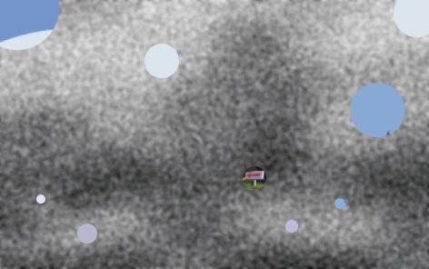
The last time I posted here, people got it pretty quickly. So I tried to make it fairly hard this time. I'll reveal more if people are having a really hard time.
#86760 15 2005-07-29T02:21:59Z Lucidium From what I've heard, he wasn't just some random guy. All the cops have said is that he wasn't connected with the bombs on the 7th.
They were trailing him because he came out of a house they had under surveilance, presumably in connection with the bombings.
#86775 120 2005-07-29T05:04:50Z Lucidium Hey guys. Resurrecting this thread, maybe, but I'm allowed to because it's mine
.
Anyway, I've been playing around with this map, mostly because I thought it looked cool. And I wanted to know: Fun, or not fun?
[edit] One other thing. I was thinking about adding a turret, but that depends on how people find it. Too easy? Too hard?[/edit]
Attachment (lost): post-10-1122613490.txt
#87003 126 2005-07-30T01:06:34Z Lucidium Yah, you're probably right. It's nice and simple as it is, and I probably won't change anything apart from the gold placement. I want to tweak it a bit to try and get people into interesting situations with the lasers.
Cheers for the comments.
#87155 1323 2005-07-30T16:41:16Z Lucidium Ah good. I was hoping the arrow would be familiar enough to inspire guesses, but not enough to be obvious.
So far no one's got it right. And I just realised I forgot to say it's a PC game. I'll leave it another day or so, then post another picture.
#87169 128 2005-07-30T18:28:16Z Lucidium Here's a little something I whipped up. It's very, very easy. But I just love the tileset, I think it's really cute.
I might make a few more easy, simple maps, and work up an episode or two. I have so many half finished ideas that aren't really good enough to stand alone.
Attachment (lost): post-10-1122748096.txt
#87195 66 2005-07-31T00:03:03Z Lucidium Cacohydrophobia, the fear of sewer water.
Apparently.
I am the king.
The next person to make a
paper water bomb / cube, and take a photo of it with the metanet forums on their screen in the background (to prove you did it) is king.
Sorry if it's a bit of a hassle, but hey, I happened to have just made one, and my imagination's broke.
[edit]Added a link to instructions.[/edit]
#87218 69 2005-07-31T01:58:23Z Lucidium Square paper commonly comes with 30% extra, completely free! Also known as A4, this convenient double pack provides everyone's favourite "square" paper, along with a useful extra strip!
#87331 1328 2005-07-31T21:33:17Z Lucidium Ooh, a red dot and another arrow!
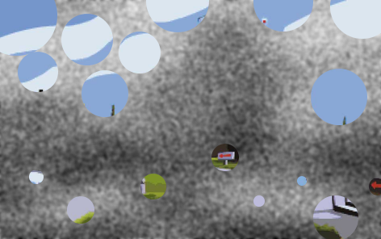
I should hope most of you at least know of this game.
#87491 1333 2005-08-01T16:21:26Z Lucidium Ah, got it in one. Congratulations!
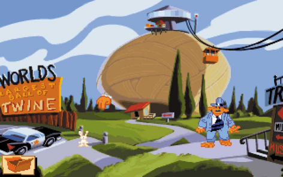
#87492 291 2005-08-01T16:23:23Z Lucidium I'm not sure about the other judges, but speaking for myself, actually writing useful reviews is very difficult. I was spending hours just to rate a few maps. Apart from that, I have to wonder if most of the reviews are getting read. Even if they are, advice on how to make that one particular map better is unlikely to get used. How many of the mapmakers are going to remake their maps based on what we've said?
Just saying, nice as having full reviews is, for me it was a major cause of procrastination (sorry again, for that). It may not be the best choice if you want fast judging, is what I'm saying.
#87633 298 2005-08-02T01:19:59Z Lucidium What about maps limited to a certain size? Like a long thin horizontal map, or a certain number of open tiles?
#87694 18 2005-08-02T13:38:48Z Lucidium This has got to be one of the best puzzle maps I've seen, and I'm surprised it hasn't got more recognition:
Sendy's
What Now?!?!#87931 70 2005-08-03T14:53:40Z Lucidium Too much bother?
Ok, whoever posts next is the king.
#88167 22 2005-08-04T04:40:54Z Lucidium Have this Profesh and Kapkana joined the forums? It'd be interesting to get them into a discussion, partly because I'd like to find out more about them. Most of the people I've met who make such an effort to write in a mature (read: thesaurus facilitated) way are young and arrogant, because they think they're smarter than their peers for some reason. Maybe they did well at school or something, but they eventually have to realise the difference between that, and real wisdom, and it can be a hell of a shock.
Mostly though, I just like poking trolls.
Can we get them in here?
#88356 322 2005-08-04T21:21:20Z Lucidium I was actually thinking about limiting the size of the map, rather than the number of tiles used.
Say, the playable area can be at most 10*10 (just example numbers), but you can put whatever you want in there.
There have been a lot of really innovative small maps on NUMA, which is what made me think of this.
#88434 14 2005-08-05T00:38:05Z Lucidium A good vanilla is one of my favourites, definitely. Though I am partial for a nice minty one, and of course the occasional ridiculous double-triple-choc-fudge-caramelorama.
On another note, anyone ever had yam flavour ice cream? It's actually pretty nice.
#88438 13 2005-08-05T00:44:48Z Lucidium I rate every map I see. Though I'm a little bit behind at the moment, I've rated almost half the maps on NUMA so far.
#88440 130 2005-08-05T00:46:09Z Lucidium Cheers for the comments guys.
I've posted Compartment up
here.
[edit (to avoid double posting)]
Here's something I haven't really done before. A difficult, claustrophobic mine jumper, that hopefully isn't too frustrating. I've stayed away from mine jumpers in the past because I found the constant resetting annoying. But I figured I might as well give it a go at least once.
The top-right route is shorter and slightly easier, but you get a lot less gold. As usual, any comments and advice will be much appreciated.
[/edit]
Attachment (lost): post-10-1123466858.txt
#3934 1 2005-08-05T00:54:31Z Lucidium This wasn't meant to be anything too advanced, just a way for me to brush up on some basic actionscript. It's got pretty painful controls at the moment, but I figured those of you making webcomics might find it helpful.
I might work on some IK so you can simply drag N's limbs around. As it is, I've probably spent more time making it look nice that anything else .
N Poser
Hope someone finds it useful.
PS. Don't worry, I haven't done anything naughty. I just redrew N as best I could until the small version looked about right. As such, it's probably not quite perfect, so don't expect great images.
[edit]Uh, guess I better put a link in somewhere.[/edit]
[edt2]Just mucking around with some poses:
[/edit2]
#88454 6 2005-08-05T01:39:26Z Lucidium Glad you like it guys.
Brickman: That's the thing. I'm not sure how to make him look better. A lot of his proportions aren't very accurate, and I may have got his exact size wrong. I'll play around with it a bit more to see if I can get it looking better, but any suggestions would be welcome. Like, I might try moving his head up a bit, to see if it makes it any clearer.
#88756 26 2005-08-06T15:12:43Z Lucidium I think I've figured out the main problems. I don't seem to have the head positioned correctly, as I'm not sure what point it rotates around. If that makes sense. Also, I may not have the small N's scale exactly right, as I had to do it by eye.
I've made some controllers so you can just drag N's limbs around, but until I get the proportions sorted I won't actually implement it.
#88998 5 2005-08-07T16:10:34Z Lucidium Cheers
.
I've fallen behind too, what with being out of action for the last couple months, I've only gotten up to the 9000's.
Hopefully I'll be able to catch up soon though, because I'm basically stuck around with nothing much to do (still can't walk properly, and I'm running out of books to read).
#89041 5 2005-08-07T18:35:56Z Lucidium Actually, going through the maps from the last couple months, I've been noticing a lot of overrating. Most of it coming from newbies who don't have a good perspective on what makes a good map, and seem to be amazed by half the maps they see. And some of it from people who seem to be friends in the same school, or similar.
Just saying, this might be what's happening.
[edit]overrating? over rating? Both of those look weird to me.[/edit]
#89372 133 2005-08-09T00:15:21Z Lucidium I really need to start making my maps easier, don't I? This is kinda why I've stayed away from mines before, I knew I'd end up making it overly hard.
Ah well. I might post it anyway, for the obsessives
.
[edit]
Hah! I got a completion demo of the longer route!
That actually took less time than I thought it would. Maybe it's just me, but I think this map can actually be quite fun once you get used to the course.
There's a definite technique for each jump, and it really helps if you have some idea what to do. There's also a couple sections where you really have to plan ahead a few jumps, then go for it all at once.
I might remove a few mines near the exit, so it's a little less cruel. Also, should I move the exit switch / N so that you just trigger it straight away?
I'm still not sure if I'll actually post this, but if I do, I'm thinking "Propreception" for the name. It seems appropriate.
[/edit]
Attachment (lost): post-10-1123565248.txt
#89700 3 2005-08-10T16:23:51Z Lucidium Oh yeah. Because fighting aliens with deadly weapons is sure to be great fun.
#89793 33 2005-08-10T23:24:45Z Lucidium Myst would be quite nice, if you could learn the Art.
#89856 3 2005-08-11T05:24:32Z Lucidium I'm in.
#89863 5 2005-08-11T06:23:52Z Lucidium The only thing you're going to be able to do with that is make a completely pitch black person shape.
As LV says, we need to be able to edit the model.
#90095 31 2005-08-12T03:40:17Z Lucidium Hey guys.
I've put in some easier controls, so you can just drag N's limbs around now. Dragging the circles moves each part, and clicking on the other buttons flips the angles around (you'll see what I mean).
N Poser
This is still a work in progress. I haven't added a button for N's head, and I won't until I can figure out where it's supposed to rotate around. Also, the actual-size N still doesn't look exactly like the original, and it'll probably take some trial and error to get these right.
I'll probably add in some controls to change the background and N's colours, and a reset button. But for now, I'm just gonna work on trying the actual-size N to look correct.
By the way, if anyone has an idea for a better interface to flip the limbs around, I'm open to suggestions. The buttons I'm using to do it now are a little unwieldy, but I couldn't think of a better way of doing it that wouldn't involve a lot of coding.
#90100 9 2005-08-12T04:38:44Z Lucidium About that winning / losing argument, here's a interesting question:
What if, after you die, you get resurrected by some all powerful aliens who have been watching over us. These aliens think that religions are nothing but the childish ideas of a young race, and prefer rather to trust only in science. As such, anyone who has avoided the snares of religion is rewarded with eternal life, and anyone who believed in a religion is punished until they have atoned for their gullibility.
This turns the argument around, and points out it's main flaw. It assumes the religion is correct in the first place.
#90108 134 2005-08-12T06:27:42Z Lucidium I found this kinda interesting to play, and I think it looks quite nice. Just lasers again, but there's four exits, placed symmetrically. I'm not sure which one's the easiest to go for, or if there even is much of a difference.
Is it any fun, or would it be with some improvements? Or should I just scrap it?
Cheers.
[edit]Ah, double post. Well, I needed another attachment anyway.[/edit]
Attachment (lost): post-10-1123828062.txt
#90250 136 2005-08-12T17:16:05Z Lucidium Yeah, you're right. I've been playing it a bit more, and it's not really all that fun.
Here's something different though. It's a little bit of a puzzle, but it's really very easy, and I think it's quite fun to play. It could be extended into something much more complicated and puzzly, but this is just a first test.
Has this been done before? It seems like such a simple idea, but I can't remember seing a map like this.
Attachment (lost): post-10-1123866965.txt
#90286 10 2005-08-12T19:47:46Z Lucidium Brickman, there's no reason a single vote couldn't bring it down half a ninja. It might have just on the border between 4 and 4.5, and was being rounded up. And a low vote just tipped the balance.
Say, if it was at 4.3 with 20 votes, and the 21st person voted a 3, the new average would be 4.24, about would be rounded down.
Anyway, a rating of 4 is hardly anything to be complaining about.
#90353 22 2005-08-12T23:12:03Z Lucidium And beaten.
This is gonna be difficult for people who don't start until tomorrow. It looks like we're really gonna play this map to death.
#90357 24 2005-08-12T23:22:20Z Lucidium Oh. Crud. I've got a way better demo than the one I just posted.
But... If we're only allowed to post one demo, why would anyone want to post first? We'd all be waiting until the last moment to see if we need to get a better demo.
#90366 28 2005-08-12T23:46:48Z Lucidium Well. I'm gonna assume he meant we can keep posting better demos.
Partly because it makes sense for a better competition, and partly because we've already posted several demos.
And Maniac. Beaten.
#90376 30 2005-08-13T00:47:32Z Lucidium I see your 6.
And raise you 21.
[edit]I think I might go get some sleep now. Hopefully you won't have beaten me by too much by the time I wake up.[/edit]
#90593 141 2005-08-13T16:16:59Z Lucidium Cheers for the comments guys. I've posted it here:
Valves#90603 44 2005-08-13T17:25:29Z Lucidium 824, LV.
This is *fun*.
#90703 142 2005-08-13T22:32:37Z Lucidium Got something new for you guys. Dunno if it's been done before, but I've always though it'd be cool. I've never made a map with code editing before, and I still feel a bit funny about it, but I'm coming around to like the idea.
This is just a test, and as such is pretty short. The launchpads probably don't need to be that close to eachother, so you could make a wider map without too much load time increase.
Tell me if you find a way to stop falling, or any other problems. Also, any suggestions for other mid-air type obstacles are welcome. Enemies are interesting but can be more annoying than fun.
Attachment (lost): post-10-1123972357.txt
#90730 5 2005-08-13T23:48:03Z Lucidium These are all fantastic.
Obviously, I like the jump puzzles the most, but every single one is an example of how to make good maps.
#90753 53 2005-08-14T02:13:44Z Lucidium If I could step back for a moment, and take a look at the bigger picture.
I've been thinking about this for a while, and I've come up with a sorta theory. I want to know if anyone agrees with this or not.
It seems to me that all we're really arguing about is whether or not the universe is based around us.
Every religion I can think of is based in some way on there being a special significance to being human. We get all the deities and heavens and hells, and we get the whole world designed just for us.
Science, on the other hand, doesn't do humans any special favours. It says that we're this way just through chance, and if anything was different, we'd be different, or maybe even wouldn't exist.
I'm not arguing for one or the other at the moment. Just, does this make sense?
#90781 60 2005-08-14T03:36:31Z Lucidium Hey, guys.
If you wanna post demos that don't take the top spot, please type so in the title in caps, so I can just skip over it.
Anyway. Got just over 600 frames.
#90888 3 2005-08-14T15:11:02Z Lucidium Yeah, sorry about that.
TTK's "Not your, MINE!" challenge has gotten me into a must-beat-speed-demos mode.
#90916 148 2005-08-14T16:40:13Z Lucidium There might be some way to make it more fun. I was mostly just trying out the idea, to see if I could get it to work.
If I could make it as fun as acrophobia, that'd be nice. Would it be that odd if you could stop falling somehow? Maybe I could put some platforms in for you to land on. But you'd still have to fall off to get to the next platform.
I just like the idea of being in some kind of infinitely tall column.
#90962 1409 2005-08-14T19:02:10Z Lucidium GamingWolf,
Is it Full Throttle?
The destruction derby section?
#90984 72 2005-08-14T19:45:33Z Lucidium Hey guys. Managed to get it under 600.
#91075 150 2005-08-14T23:17:57Z Lucidium I'm gonna carry on working on these maps, but unless I manage to come up with something amazing on them, I probably won't post them.
Now. Here's a little something else I've been working on today. I think I've got the flow working really well in this map. Don't just jump off the ledges, try running straight off them as well. Try to stay running at full pelt all the time, and see if you can find all the different routes. Most of all, just have some fun.
The thing is, I'm not sure what to do with the map now. The start and end sections I quite like, but I might still change them, maybe even extend the main part of the map down more. I'll probably put mines in, but only to make it more tense, not to get in the way. Apart from that, I can't think how to make it more interesting. Also, is there any way I can discourage the player from slowing down?
Attachment (lost): post-10-1124061477.txt
#91110 78 2005-08-15T00:36:17Z Lucidium We do actually have to get back to the exit, right?
Heh. You're gonna be checking a lot of really
long demos TTK.
#91243 152 2005-08-15T10:26:42Z Lucidium Yeah, it does still need some tweaking. It's gonna be a while before I've got it perfect.
I tried out the turrets, that seems to work pretty well. Cheers.
In the meantime, here's a quick demo with some of the stuff you can do. This is pretty much just holding left or right down and jumping when needed.
Attachment (lost): post-10-1124101602.txt
#91281 84 2005-08-15T13:43:01Z Lucidium Managed to get all nineteen!
That was a lucky run, it was the first time I'd tried a demo for all of them. Do you ever get that? You do really well on your first run, but then can't seem to pull it off again. I keep checking the demo over and over, afraid that I might not have copied it correctly or something.
By the way, TTK. Seriously, do we have to get back to the exit? Because there's a couple demos posted where people don't.
#91658 11 2005-08-16T16:34:41Z Lucidium How do I know that? I've just seen it scaled 
OMG HOW?!!111 U MUST B SUM KIND OF 1337 H4XXXOR!!111oneeleven
KTHXBYE
#91682 4 2005-08-16T19:28:03Z Lucidium Ghosts have been suggested before, and they can't be done because of the processing power needed to simulate two Ns moving about.
What kvazar is suggesting is different, and sounds like it might be possible.
He's suggesting a display which shows you the difference between your current run and your previous run in seconds (I assume he means the comparing the timer bar at the top).
For example. Ten seconds into the map, say your bar is a 2 seconds shorter than it was ten seconds into your previous run. Then the display would show "-2".
It'd give you a good idea of how well you're doing, without being as difficult to implement as the ghosting idea.
#91685 110 2005-08-16T20:00:23Z Lucidium I'd just like to make what I consider a very important point about evidence.
A lot of evidence cited as backing up faith-based beliefs isn't really evidence. It is found after the belief has been established, and is called evidence because it agrees with the previously decided upon details.
Science, when done properly*, takes all of the available evidence, and then suggests an hypothesis. Using this hypothesis, predictions are made based on it, and if they agree with new evidence, the hypothesis is accepted as a theory.
You can find evidence for pretty much anything, like the decline in pirates causing global warming, or that old joke about a bear/tiger/scary creature repellent. Just because there's some observations to support it, doesn't make it true.
Related to this point is another difference between faith and science. Science is not around for the sole purpose of finding the truth about the world. It's around because it's useful. You can predict things with it, and you can invent and create and progress with it.
This is one of the main reasons I've decided to be an atheist.
* I say "when done properly", because there's plenty of "scientists" out there who will prejudice and skew their results for whatever reason.
On preview - Got a bit carried away with the bolding there. But hey, I think it's important.
#91739 112 2005-08-16T23:00:43Z Lucidium this goes both ways you know. There are plenty of scientists out there not taking the facts but as you said, tryin to find facts to support their side. That's not science as you said. There really is no way to do complete objective research.
I'm not sure why you said "this goes both ways". The whole thing about some scientists not doing objective research is exactly the point I was making in that footnote. I wasn't making a sly comment about people supporting religion with science, if that's what you thought. I only put "scientists" in quote marks to show my disdain for the kind of people that cheat like this.
I said that because I wanted to concede in advance that the world of science isn't perfect, because the fact that scientists do this too is a valid argument.
Hopefully though, most cases of this get caught by other scientists, and one of the most important requirements for credibility in the scientific world is to be published in a
peer reviewed journal. If you're screwing about with your data, you won't get published.
Anyway, onto your point about prophecies. I've got to admit that it's surprising evidence, but the scientist (read: pedantic nitpicker) in me has a couple questions. Like:
How can we be sure the prophecies were made before the event, instead of just written about afterwards?
And, how can we know that there weren't hundreds of incorrect prophecies made, that just didn't get passed down through history because they weren't considered amazing or important (precisely because of the fact that they weren't correct)?
Another important qualifier for evidence is that it is
repeatable, because if it isn't, there's a statistically tiny likelihood of it being real. For example, there's plenty of papers out there with apparent miracle inventions, but because no one else has managed to recreate the experiments, they don't get published.
It's like sampling a population of people from some town. You could look at one person, and conclude that everyone in the town has black hair, brown eyes, and really likes waffles. This would be correct if the town only contained one person. However, as there are actually hundreds of thousands in most towns, you would have to repeat the experiment on at least a few hundreds of people before you really knew what the town was like.
In terms of the prophecies, I'd want to know if any other prophecies were made that turned out wrong. Because of the distance in time, the only "samples" we're looking at are the prophecies that were right. We can't know if these were the only prophecies made.
As an aside, I'm arguing about these underlying, less personal issues for two reasons. Partly because I want to make it clear why I place such trust in the methods and requirements of science. And partly because arguing about personal beliefs can rarely be more than stating your own opinion in angrier and angrier terms.
[edit] Went back to edit for clarity. Ended up writing even more. Apologies for run on sentences and the like.[/edit]
#91746 114 2005-08-16T23:12:08Z Lucidium Which part? The bit about not trusting experiments until someone else has done them, or the bit about the guy who likes waffles?
[edit] Eh, I'll just expand on both.
About the repeatability of experiments.
Anyone can write a paper (as in, scientific essay detailing their experiment and conclusions) on an experiment they claim to have done. Like, you could say you've invented an infinite power source by taping a cat to a piece of buttered toast. But if no one else can recreate your cat-toast-engine, why should anyone believe you?
About the sampling thing.
Say you had a bag of 50 coloured balls. You don't know what colours there are, or even if there's more than one colour, but you are allowed to take a ball out to look at it.
If you take one ball out, and it's blue, would you then conclude that all 50 balls are blue? It's still very possible that there could be different colours.
If you took ten balls out, and they were all blue, it would be much less possible for there to be different colours.
Obviously, if you poured out all 50, and they were all blue, it would be impossible for there to be any other colours.
The more times you repeat the experiment of looking at a ball, the more you can narrow down the possibilities.
[/edit]
#91758 117 2005-08-16T23:34:20Z Lucidium Ah. I guess I shouldn't have bothered with that explaining post.

Keron: I direct you to
His Noodly Appendage
It's a comment on a different issue to the one were talking about here, but there's a line that applies to your argument:
"
But what our scientist does not realize is that every time he makes a measurement, the Flying Spaghetti Monster is there changing the results with His Noodly Appendage. "
It's a catch-all reply. If you use circular logic like this, there's no way to ever argue with you, because you can always say "His Noodly Appendage" changed things.
(Not making fun. I just love the phrase "noodly appendage"
.)
#91760 13 2005-08-16T23:39:19Z Lucidium Maybe you don't have to implement it.
Is there any way for us to filter a page to not show maps we've already rated? I mean, I know it's not a perfect solution, but I only really want to get suggestions of maps I haven't seen yet.
On a more selfish note, this would really help me with the whole "rating everything" thing I've got going. If I could see, without opening the map's individual page, whether or not I'd rated it, it'd speed me up a lot. Several times I've spent twenty minutes playing a map, then gone to rate it, but found I'd already done so.

#91780 119 2005-08-17T00:45:34Z Lucidium Well, my problems with the prophecies were mostly based on any incorrect ones being lost to time. Obviously, being out of the way of any human intervention, the dead sea scrolls sorta screw up that part of my argument.
I'll have to concede on that point. I can't see any way the scrolls could have been altered to agree with Jesus' life. Really, the only reason I wasn't sure was that I didn't know of that evidence.
I just wanted to reply on that point now, but I haven't read through those articles yet.
Now, I can't really argue about any of the prophecies in the dead sea scrolls, but there's another thing I want to find out about. There's a possibility that Jesus just happened to fit the prophecies, and as such was made into the figure he was and is. If you look at any large enough population, you'll find an individual who fits certain characteristics.
I'll read the articles tomorrow (gotta get some sleep now), but I'll be looking for certain things. Specifically, any prophecies or details which would negate my argument above.
Apart from that, I'm at a loss to find any other way to argue the validity of the prophecies. I might have some more questions for you (sorry, sorta using you as an information desk here), but I'll have to think about it for a bit.
Cheers for the links.
[edit] for spelling[/edit]
#91907 127 2005-08-17T10:19:36Z Lucidium [edit] This is a reply to Maximo's post a few posts back. Didn't see all those new ones.[/edit]
By "narrowing the pool", you're fulfilling prophecies, and decreasing the remaining number that need to be fulfilled.
It's like saying "I want to find a man with blue eyes and green hair." If you "narrow the pool" to people who have blue eyes, you're not making it less likely to find someone that fits the description.
Anyway.
It's probably obvious that I'm more comfortable arguing on abstract things like statistics and logic, that apply to any discussion. I think it's important that people understand fallacies of logic and reasoning, because otherwise you can't have a real discussion.
This is getting way more specific that I intended it to, and I'm out of my depth here in terms of actual knowledge.
I'm always going to have one more "but this could have happened...", and you'll always be able to present facts that I just have to accept because I can't check them out myself (without learning new languages or studying for a very long time).
I think I'll just say, you've got me on that one. And I'll stick to the stuff I know.
#91908 8 2005-08-17T10:24:37Z Lucidium I couldn't guess at how much time I actually spend working on a map, because I usually do it over several days. I tweaked and playtested Jacks for at least a couple weeks on and off.
#91982 132 2005-08-17T19:18:41Z Lucidium But I must ask, if you conceed the point your conceeding the messaniac properties of Jesus. Doesn't that involve a little more than a shrug of the shoulders?
It's very hard to conclusively prove anything like this, either way. I concede that I can't disprove it, but I still can't accept it fully. I still don't know, I just know more about it that I did before.
#91993 72 2005-08-17T20:14:30Z Lucidium Well. I had a quick go at sorting the head out. It seems to look a little bit better, and you can actually move it now.
Same link as before.
N Poser#92002 6 2005-08-17T20:51:51Z Lucidium iangb's made most of the points I would and, I'm pretty sure, have made before in a previous thread.
Here's something else to think about though.
The universe isn't actually all that perfect for us. We can't survive on something like 80% of this planet. We can only live on this tiny, thin, surface layer, while there's a huge universe out there.
What do you really want to say Keron?
#92122 11 2005-08-18T07:37:13Z Lucidium just an aside, Creationism and big bang theory are not mutually exclusive.
Yeah. Pay attention to the Maximo, people.
This big argument between science and religion is a false distinction. There's no reason it has to be either one or the other. There's plenty of middle ground.
#92162 1455 2005-08-18T13:52:54Z Lucidium Myst: Uru.
[edit]Y'know. I never actually got around to playing that one. Maybe I should check it out. Cheers for the reminder.[/edit]
#92495 1458 2005-08-19T18:01:05Z Lucidium #92524 1463 2005-08-19T20:25:49Z Lucidium Got it in one. It's Zork.
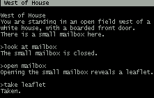
The white house from Zork is pretty famous, brickman. Try googling "white house text adventure", and the first result will tell you it's from Zork.
I'm not so stupid as to post some really obscure text adventure.
#92573 1466 2005-08-19T23:14:15Z Lucidium You're assuming that no one else will know it, because you didn't? Stepself got it, didn't he?
Jeeze. I didn't think it would be such a major problem.
#92581 154 2005-08-20T00:13:00Z Lucidium I've fixed up the flow on the map, and I think it works better now. I can't quite get it completely perfect, but I think it'd just be boring if it was. I'm still playing around with gold and switch placement, but I'll post an update up soon.
In the mean time, I've been working on a short little DDA. I would normally shy away from gold delay, but I just love this effect, and it needs it to work.
I'm not sure if this has been done before, but I know I've never seen a DDA quite like it. There's not many close calls, as I only really intended this as a proof of concept, but it's still pretty fun. I like how the scenery came out too.
For lack of imagination, I might just call it "Powered by Normal Doors".
Attachment (lost): post-10-1124496780.txt
#92948 4 2005-08-21T15:27:57Z Lucidium That's a beautiful map.
I'll hold off posting a demo until you've found a fix though.
#93026 2 2005-08-21T23:06:56Z Lucidium So... you've made two maps, both of which you're sure no one will be able to finish?
I think you may be missing something.
#93178 24 2005-08-22T13:01:42Z Lucidium I'd be typing a lot faster if I was allowed to use my backspace key.
This thing forces you to type weirdly. If you make a mistake, you just have to carry on typing from where you messed up, whereas I'm trying to backspace to fix it.
If you really want a test of your wpm, you need something more intelligent, that just lets you type normally.
That said, I got 150 wpm.
#93258 157 2005-08-22T17:30:49Z Lucidium Posted on NUMA as
Gauge Invariance.
Also, got a map that's a bit different from what I usually do, and pretty short. Personally, I find it really fun, but it might be too rapid or frustrating if you haven't had as much practice on it as I have.
Anyway, check it out. Tell me if you manage to complete it, and any ways it could be improved.
[edit]Actually attaching it might help.[/edit]
Attachment (lost): post-10-1124731961.txt
#93378 164 2005-08-23T00:16:17Z Lucidium Wow, cheers for the pin nevermore. Hopefully the thread will provide inspiration for somebody.
LV: It does play very similar, doesn't it? I'll take that as a good thing, as his short maps were always great fun.
About what nevermore said. I was intending this to be a bit of a puzzle. It's way too hard to just go for it, but if you work on a route you can get it without too much trouble.
I spent a while placing things so that there wasn't just one way to do it, and it seems to have worked. Nevermore's demo is quite different from mine (attached).
Any suggestions for the background, by the way? I was thinking of doing some clouds again, because I really like the way they look. Or I might just do something abstract like in Valves.
Thanks for the feedback.
Attachment (lost): post-10-1124756177.txt
#93400 166 2005-08-23T02:59:01Z Lucidium Yah, I didn't mean exactly the same thing. Just abstract shapes, rather than an actual thing like clouds.
I'll try and make something that emphasizes the claustrophobic feel.
[edit]
Posted to NUMA.
Rocks and Hard Places
It's not quite the same name as yours maniac
.
I think the scenery works well to create an oppressive atmosphere. Hopefully people won't find it too hard, and maybe even find some different routes.
[/edit]
#93408 52 2005-08-23T03:15:51Z Lucidium O RLY?
NO U!
#93886 62 2005-08-24T22:27:25Z Lucidium Ah... I've already rated most of the maps in this thread, apart from some of the ones from about a month ago. I'm catching up there too.
Um, I just rated all of those, blue tetris, and I've got a alright completion demo on Future Zipper. As well as a pretty weak not-completion-at-all demo on Gotholi, which is surprisingly hard, by the way.
Anyway. I'd appreciate any kind of feedback at all on
Rocks and Hard Places. It got pushed off the front page pretty quick and didn't even get any votes.
Cheers.
#93922 13 2005-08-25T02:12:32Z Lucidium We've got a lot of definitions and little titbits of information floating about.
Can I suggest we pool some of them into larger pages, instead of all these tiny little pages?
Also, there's two NUMA pages. One here
http://n.wikicities.com/wiki/NUMA
and one here
http://n.wikicities.com/wiki/Numa
Is there any way to see all of the pages, so we can chop or merge redundant ones like this?
I've posted a suggestion for organisation on the main page's discussion section
http://n.wikicities.com/wiki/Talk:Main_Page
I think if we get something like this sorted out first, before we make individual pages, we'd all be able to work together a lot better.
#94270 169 2005-08-26T15:43:30Z Lucidium Valves 2: The Valvening
It's back, it's harder, and it's got a weird name.
Also, I'm still playing about with that flow map. Launchpads, yay or nay? It still feels a little bit empty to me.
(Maniac: I hope this isn't gonna stay a problem. I assumed you were joking when you asked me not to name it that. Partly because it's not exactly the same name anyway, and partly because it's just such a common phrase.)
Attachment (lost): post-10-1125071010.txt
#94310 4 2005-08-26T17:18:31Z Lucidium
Torus
#94453 26 2005-08-27T01:44:10Z Lucidium Uhm.. Keron. What iangb said about choosing clothes was an analogy. Do you not get that? It was just an example to demonstrate his point.
You're trying to counter general, logic based arguments with details from specific situations. That's just avoiding the problem.
It's like if someone said "Every ball is round. Every round thing is blue. Therefore every ball is blue." And you replied with "But there are millions and millions of balls. You couldn't possibly understand the numbers. There's no way you could ever be sure all of those balls were blue."
And about what atilla said. You don't see that kind of stuff because, as he said in your quote, it applies over the Planck time.
#94516 175 2005-08-27T03:41:28Z Lucidium Cheers guys.
tktktk: I've been moving the mines and gold about for a while, so I guess they did get kinda messy. Cheers for the tidy up, but I'm probably gonna end up moving them around even more
.
nevermore: I'll try moving the mine, but I don't think it's because you're jumping too quickly. Try letting go over the jump key sooner after you've jumped off the wall, instead of holding it down all the way. It's sorta there to make people do exactly that.
I don't want to make it completely easy to get around smoothly, otherwise it'd be kinda boring.
If I've got the gold you're talking about right: You're supposed to run straight off the right wall's ledge thing, onto the top section of the cup shape, then jump off the end of that.
Here's a demo showing some of the routes, and also using both of the launchpads. The path to get to the left one is a bit nutty, but I didn't put it there to
make people use it. I put it there
just in case anyone tried to run that way.
Attachment (lost): post-10-1125114088.txt
#94643 30 2005-08-27T14:15:55Z Lucidium Keron, I'm talking about iangb's third point here. The one about choosing what colour pants to wear and that.
He was using an analogy to make a point about probability. He wasn't trying to argue about that specific situation, he was using it as an example
Do you understand the difference between arguing on specific points, and making an argument based on abstract logic? You can't prove anything with specific examples, only a general argument that applies to the whole situation on a more fundamental level can prove something.
If I could restate his point: If you take yourself as an example, then yes, it's hugely unlikely that all the circumstances leading up to your birth and life have happened to create exactly you. However, if any of those circumstances had changed, a different but just as unlikely person would have been born. It's a fallacy to assume that you are some special person that was the aim of all your ancestor's pairings.
Once again. This is not an argument about the specific details of how people choose a partner, or anything like what colour eyes you have. It's an analogy to make a point about probability that applies to any such situation. It is a general argument, you're just blinded by the trees.
#95162 41 2005-08-29T21:01:05Z Lucidium I gotta say TDL, it sounds like you're wrestling with your conscience vs. your curiosity if you're hanging around in these chat rooms. If you think it's amoral, then I could understand you avoiding the chat rooms and making fun of the people. But, you're obviously curious enough to try it once, even though you didn't do anything. Maybe they were just more curious than you, and it doesn't take much to go from doing it once to getting used to doing it all the time.
I applaud your morals. But I dunno, it just seems almost arrogant to screw with these people like that. Y'know, hate the sin, not the sinner, and all that.
Ah hell. The robbery thing is pretty funny though. Ever get anything bash.org worthy?
#95373 91 2005-08-30T04:10:49Z Lucidium Actually, yes he does. That's why I put it in.
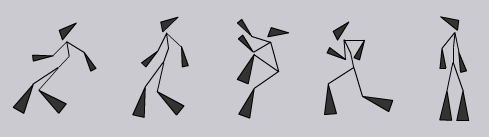
Thanks, but I can answer questions myself.
#95590 95 2005-08-30T20:48:38Z Lucidium I don't mind you answering questions if you're gonna get them right. But don't go telling people my reasons for putting it in as if you know that too. That's just presumptuous.
[edit] Trogdor: I'll probably put in a colour changer for N and for the background. I'm not sure when I'll get around to it though, as I'm going to be away a lot over the next few weeks.[/edit]
#95603 12 2005-08-30T21:07:51Z Lucidium I used to have a problem with taking compliments badly.
Now I just say "Thanks", and mean it.
Anyway, about the arrogance thing. I think it's just an extreme version of pride. It becomes a problem when the pride is unfounded, or exaggerated in your mind. Like the difference between "I'm alright at chess," and "I CAN BEAT ANY OF YOU BECAUSE YOU'RE ALL DUMBER THAN ME."
Actually, I think arrogance is a major problem with our society. There's a lot of people out there who could do with being taken down a notch or twenty.
#95605 13 2005-08-30T21:15:40Z Lucidium I think I'd rather be cremated.
Then thrown in the face of someone I really don't like.
REVENGE FROM BEYOND THE GRAVE!!!
*ahem*
Anyway, if I was buried, I don't know what I'd have for my epitaph. I could come up with a whole bunch of flippant ones, but I wouldn't really want to have them on my grave. I'll have a think about it some more.
#95694 15 2005-08-30T23:55:12Z Lucidium Yeah, now that's just arrogant blue. Maybe everyone else is just better at being polite than you
.
Anyway, how is modesty like arrogance? Arrogance is having or displaying an overinflated sense of pride. Modesty is the tendency to be restrained in the description of your abilities.
I can see how you might think people only act modest so they get more compliments. But I don't see how you can be arrogant and modest at the same time. They're opposite ends of a spectrum.
#95909 23 2005-08-31T15:01:34Z Lucidium Yeah, that'd not modesty. That's pretending to be modest.
For me, modesty means not lying about your achievements, either way. So, not saying "it was easy", and not saying "it was the most AMAZING thing anyone has ever done."
#96313 7 2005-09-01T23:50:15Z Lucidium This is a pretty bad example, because it gets easily confused.
The idea behind this is that nothing is completely stable. There's a tiny, but very real, possibility that
anything can happen.
Say, for example, the position of an electron is often spoken about in terms of a probability cloud - sorta like a blur of all the possible positions it could have. If you measure an electron's position, the fastest it can get away from where you last measured it is at the speed of light. So it's probability cloud is a sphere that expands at the speed of light.
There's some cool experiments done to prove that things that should be impossible can happen. There's one where electrons are placed inside a "well" (like, a dip in charge rather than a physical dip) with "walls" far too high for them to climb. According to classical physics, they shouldn't have enough energy to get out. But, according the quantum physics, there's a tiny chance that they could appear outside of the well (as their probability cloud expands outside of it). This is what quantum tunnelling is talking about. Sure enough, if you measure the amount of electrons still inside the well, they disappear at the rate predicted by their probability clouds.
So, there's a tiny, tiny chance that all the molecules in the podium could suddenly disappear, or move three feet to the left. But it's so unlikely, you'd have to wait a practically infinite amount of time for it to happen.
[edit]Mark: about the glass being a liquid thing.
The reason we thought glass was a liquid was because glass panes in, say, ancient churches were thicker at the bottom, as if the glass had flowed down. It turns out, glass in those days was made by spinning a blob of molten glass into a disc, then cutting it up. This meant it was thicker at the edges, and because it was easier, windows were installed with the heavier end at the bottom.
However, glass has a pretty weird molecular structure, so it's hard to say for definite what it is. It's not quite a liquid, but it's not quite a solid either. We do know it doesn't flow as fast as we thought it did though, if at all.
This is pretty good if you want to know more.
[/edit]
#96550 20 2005-09-02T19:55:01Z Lucidium Yeah, that piano thing is so fake it's not even funny. Half the time he's not throwing them anywhere near where they should be going, and sometimes he even throws them in completely the wrong direction (lower than the previous note when it should be higher).
[edit] I'm sure someone else who plays the piano can confirm this. [/edit]
About the levitation thing nevermore: stand with your feet together, and position yourself so that the people watching can see one foot, but the *toes* of the other are obscured. Lift yourself up using your obscured foot, keeping your heels together. Add dramatics to taste.
#96704 16 2005-09-03T01:12:36Z Lucidium ...
Flying Spaghetti Monster Smilies!

I made them a while ago as a small tribute to His Noodlyness.
#96709 31 2005-09-03T01:17:14Z Lucidium Actually it isn't fake at all, people actually can do that.
If I could just go back to this for a moment.
I'm sure some people
can do that, what I'm saying is that in that video, it's fake. I'm not saying that because I'm thinking "omg no way can anyone do that it must be fake". I'm saying that because I can see and hear that he's not hitting the right notes.
Anyone else who plays the piano care to back me up?
#96785 177 2005-09-03T03:31:03Z Lucidium Okay, this is kinda weird.
I decided I was going to try and do something quite different from my usual style, with cramped areas and varied challenges.
I don't know what to think of this thing, it's not totally finished, and I'm not sure if I find it fun or just curious. Of course, it might be completely terrible, I can't really tell.
Also, I'll probably clean flow up and post it tomorrow. I'll be away for a week on Sunday, so it might be nice to post something before I go.
[edit]I could post a demo to show how I intended some of it to go, if that'd help. I'm starting to think it's just kinda ugly though.
Eh, I think I might just stick to my usual style.[/edit]
Attachment (lost): post-10-1125718263.txt
#96966 38 2005-09-03T19:09:14Z Lucidium I don't think there's any need to do anything so complicated as digitally inserting the balls, or faking the film. All you'd need to do is program the thing to "play the next note when you hit it".
My guess is that he's doing something like that, as he's throwing them with the right timing, just not in the right places. He's pretty good at throwing and catching them, but he's nowhere near accurate enough to be hitting the right notes.
[edit]
Uh, sorry to keep going on about that.
Anyway, I love the sleight of hand kind of magic, like some of what Blaine used to do when he was just starting out. The kind of magic where you can just sit there with a pack of cards, and do seemingly impossible things using clever techniques and diversions. Stuff like making it look like you've taken a card from the top of a deck, but you've actually taken the next one down.
Anyone can buy a crane, or some ready made trick, or edit out hundreds of failures to get the one success. But the sleight of hand stuff takes real effort.
[/edit]
#97112 180 2005-09-04T02:18:26Z Lucidium Well, I've posted flow as
Fluid Dynamics. I changed the name because "flow" has been used a couple times before, and it was only a working title anyway.
I could have carried on playing with this for ages, and not really improved much, so I decided to just post it. I'm going away for a week tomorrow anyway, so I wanted to post something before I left.
About that "diversion" map. I think the style is kinda cool, so I might play around with that a bit more. Just, maybe not that particular map. How about something less linear, but with the same sort of small areas?
[edit]I've rated 6666 maps. Heh.
See you guys later.[/edit]
#99353 8 2005-09-11T00:03:16Z Lucidium Done:
Scream while you vomit,
Smack a nail with a hammer,
Play tetris while sleeping. (I fell asleep with it still playing, does that count?)
How about...
Electrocute yourself,
Dig a hole on a beach deep enough to hide in,
Go to a foam party,
Build a blu-tac sculpture of yourself.
#99424 19 2005-09-11T02:24:48Z Lucidium Done:
Scream while you vomit
I don't believe you.
Why not? It's not like it's particularly difficult or anything.
Connect 1000 paperclips together into a chain.
Keep snow in the freezer until it's Summer.
Dance in the streets.#99568 9 2005-09-11T14:28:06Z Lucidium For lasting data storage, I recommend gigantic stone structures!
#99571 6 2005-09-11T14:35:45Z Lucidium "Vulgar" words increase the range of emotion we can express using language, help us form "tribes" by alientating outsiders, and are very useful for drawing attention to something because of their difference from normal words.
They usually come from a non-vulgar term connected with something that at some point becomes taboo, making the word taboo by association.
#99886 3 2005-09-12T17:45:20Z Lucidium I have been touched by His Noodly Appendage.
I made the custom smilies on their forums!
#100042 19 2005-09-13T00:14:13Z Lucidium X-rays
Well, I probably could have made a better map using this idea, as this one isn't much fun to play. But I don't think this particular thing has been seen before (send me a link if it has been), and I think it's pretty cool.
If I can come up with something else for a second submission, I'll make it a proper, full map. This still feels a bit like a test map more than anything.
[edit]Maybe I
should classify it as "test"?[/edit]
#101215 2 2005-09-17T15:45:38Z Lucidium I once tried to do this just from one side of the map to the other, with an obstacle course for the rocket, and teleporters to send N up and down. It made moving N quite easy, because all you had to do was move a little bit into the teleporter. But it was so hard and short, that I gave up on it.
I didn't actually think of having a space in all four corners.
I've managed to get the rocket half way round on your map. It took a while to figure out how to use the tubes, but once you do it's pretty fun.
I'm gonna go see if I can work up some transporters.
#101224 5 2005-09-17T16:59:16Z Lucidium This seems to work quite well:
Attachment (lost): post-10-1126976356.txt
#101932 253 2005-09-18T21:47:53Z Lucidium If species can break away like that why haven't we seen extremely fast-living (living, as in their lifespans are really short) mutating and breaking off into other species in weeks?
We have. Plenty of times.
We've been doing it to plants for nearly a century, through hybridization and polyplodization, with plants like ferns, hemp nettles, and radish-cabbage hybrids. It's been observed in the
Tragopogon genus, producing the
mirus and
miscellus species.
Oenothera lamarckiana has been observed to produce a variant with a different number of chromosomes, that could not breed with the parent species. Speciation has been observed in
Nereis acuminata, a worm commonly used in toxicology experiments. It even appears to have been seen in mice introduced to islands by humans .
(Owenby, M. 1950. Natural hybridization and amphiploidy in the genus Tragopogon. Am. J. Bot. 37:487-499.)
(de Vries, H. 1905. Species and varieties, their origin by mutation.)
(Weinberg, J. R., V. R. Starczak and P. Jora. 1992. Evidence for rapid speciation following a founder event in the laboratory. Evolution. 46:1214-1220.)
(Britton-Davidian, J., J. Catalan, et al. (2000) "Rapid chromosomal evolution in island mice." ).
[edit]
I also wanted to say something about the morals debate. "Ethics" and "morals" are just concepts we've come up with to define all the unwritten rules in our society. They aren't some magical knowledge that's imbued into us, they are rules and guidelines the we follow in order to maintain a stable society. We receive our morals through our parents, our peers, TV, and any other contact with other people from our society. Different societies can have vastly different morals, it just depends on what you were told is "bad" as you grew up. Take incest, for example. It isn't taboo because it's somehow evil, it's taboo because inbreeding narrows gene pools and is more likely to produce damaged offspring.
[/edit]
#102330 9 2005-09-20T11:53:34Z Lucidium I think I'm missing something. I can't see what possible purpose this has.
Why would anyone want to set the required number higher than the minimum? It won't change the rating of your map, it'll just change when you get to see it.
#102802 284 2005-09-22T16:12:14Z Lucidium You keep shouting that "no one has ever seen new genetic information arise". Do you even know what that means? Because it sounds like you're just parroting creationist slogans without understanding them.
[edit]Oh, and no one has ever seen the light sensitive molecules in our eyes react to light either, so we must all be blind.[/edit]
Genetic information is just a sequence of atoms in a DNA molecule. If the DNA molecule gets longer over a few generations, there's new information there. All that needs to happen is for more material to be added, it's not exactly impossible, or even unlikely.
Did anyone notice my
post a couple pages back, with several examples of observed speciation, along with references?
I also said something about ethics in that post. Your obsession with an "unchanging" source for morals is just soppy. We have certain rules and taboos in society because it keeps our society stable. We have feelings of guilt because we were brought up being told certain things were wrong, and being punished when we were caught. You can look at any other society, and find people doing things that we'd think horrific with no feelings of guilt at all.
Yes, our society will change. And yes, our "ethics" will change along with it, just as they have done in the past. Pretending that there is some unchanging source for morals is, frankly, pretty naive. Nothing is black and white like that, and there will always be situations where your inflexible morals will break, or even force you to do something more evil than the thing your ethics prohibit.
Finally, this whole evidence thing. This is one of the most major differences between science and religion. You've got a preconceived conclusion (your particular religion), and you're picking and choosing evidence that backs it up. Science collects all the available evidence, and produces a conclusion that fits as best it can. Anyone can come up with an idea, and find evidence to back it up. But that doesn't make it any more valid than any other random theory. It's backwards, and that's not how science works.
#102814 287 2005-09-22T17:08:04Z Lucidium Fantastic post, blue. I agree with just about everything you said there. But I just can't let that bit about evolution slide. I know you were using it as an example, but this is a common misconception that I want to point out.
Nothing is ever really proven in science. We just have the theories that fit the evidence best, and provide the most useful predictions. The current theory of evolution happens to be the one that fits the evidence the best. This whole debate that's going on at the moment about creationism is making it seem a lot more contested than it really is. The media, and creationist campaigns, want to make it out to be this big debate. But in the scientific community, evolution is an accepted theory (in the scientific sense of the word), that finds use in many different areas, and provides useful predictions.
#103063 295 2005-09-23T21:41:05Z Lucidium How did they mutate in the past, without manmade radiation?
Slower.
There's plenty of radiation about naturally, and that's not the only thing that can cause mutations.
#103645 72 2005-09-25T22:42:58Z Lucidium I really don't like all these speed limits, limiters, and other symptom-cures. It'd be a lot more effective if we could find some way to keep idiots from getting behind a wheel in the first place. Then we could get back to using our vehicles for what they were designed for - getting to places quickly.
Another thing, and obviously this isn't an option in most cities, but it'd be great if pedestrians and motorists were completely separated. You don't really need to have people walking around right next to the road. I'm pretty sure I've seen places were all the walkways were on the first floor, separate from the roads. I think it might have been in Hong Kong.
Anyway, yeah. I just feel things like speed limits are a bit of a cop out, and won't be effective in the long run. On a more coldly logical note, it's like creating ovens, then saying you're not allowed to turn it over 200C because it might burn someone.
#103834 12 2005-09-26T14:50:33Z Lucidium I'd love this, especially for playing mine jumpers. But I guess for now you'll just have to develop your reflexes like nevermore
.
This is exactly why I tend to use jump pads or careful tile placement instead of mines to block a path.
#103837 182 2005-09-26T15:02:38Z Lucidium Got a nice, simple, almost metanet style level here. I wanted to try making a couple maps that aren't based around some weird technique or object usage.
There's plenty of gold about, if you make the effort to get it, otherwise it's quite easy.
Worth posting? Or should I just add it to my pile of "might put in an episode one day" maps?
[edit]Oh, and I think it's quite good for teaching rocket dodging.
[/edit]
Cheers.
Attachment (lost): post-10-1127746958.txt
#103979 8 2005-09-27T02:24:51Z Lucidium "Fucky fucky feel good! Me want fuck some cavebitches!"
Classic.
Just classic.
Anyway, to weigh in on the OP and to make this post not spam:
This is one test of how cultured you want to be. It's just your instincts fighting your higher reasoning. I think you did right. You'll never really retrain your subconscious to be not-a-caveman (as blue said). But you can overpower the slavering idiot within.
#104163 8 2005-09-28T01:33:26Z Lucidium I originally posted this on the forums, then reposted it when NUMA was created.
http://numa.notdot.net/map/61
It's pretty bad. Hidden traps, hidden thwumps, one of those annoying bounce block clusters, long loading time... Still, had a couple interesting ideas, and at least it doesn't lag too bad
.
[edit]This was back when mines stayed around after you hit them, so those launchpad/mine boxes at the bottom were actually eternal ninja explosion machines.[/edit]
#104660 306 2005-09-30T15:03:20Z Lucidium Thread's gone kinda quiet since macaddict left.
Ah, it was a bit of a vague title for discussion anyway. Anyone feel like separating some of the topics into their own threads? Or should we just let it lie?
#104796 27 2005-10-01T20:36:28Z Lucidium Ah, I'd forgotten about this thread.
While it's been resurrected, I may as well post an update.
I had my last physio session a couple weeks ago, and I'm technically all healed up now. It still isn't as flexible as it once was, and it won't be for a while. I do however have a cool scar, and a good excuse for making metal detectors beep. Also, you can feel the screws underneath the skin, which is fun, if a little freaky.
#104856 52 2005-10-02T02:17:22Z Lucidium Second submission:
Crash Into Me
Ooh, nice round number.
Anyway. Fairly basic unusual object use, just some switches embedded in the walls. I placed them quite carefully so that you really do have to smack them to get the switch. I think the layout makes it pretty interesting trying to hit the right spot.
Last minute name change because this song came on my shuffle, it seemed appropriate, and I like it anyway.
#104857 184 2005-10-02T02:20:35Z Lucidium New map up.
Crash Into Me
It's got a bit of a knack to it. But once you get used to it, you can get some really fast runs in. I find it pretty satisfying when you smack into a wall just right. You do have to hang on a bit though, because if you just bounce off straight away, you probably won't get the switch.
#104931 10 2005-10-02T10:47:33Z Lucidium I always assumed "jelly" was just another case of Americans naming things differently for no apparent reason.
But according to the internet, it depends on what form the fruit is in. Jelly uses fruit juice, jam uses crushed fruits, and preserves use whole chunks.
Where I come from though, jelly is what TDL described, and we'd never use it to describe a fruit spread like that. Which also means we don't have to call anything "Jell-O", just because the real name is already used somewhere else.
#104973 14 2005-10-02T16:11:08Z Lucidium Wow. Didn't expect this to turn into a deep discussion.
Blazeraid thought that if you had a tan, you'd give birth to a baby with a tan. We thought this was funny. That's all.
Still. Nice to see Intelligent Discussion being used properly.
Carry on.
#105474 12 2005-10-04T14:15:38Z Lucidium I think I saw it in Wired, or Edge, or some other magazine of that type. I think it was an article about free games, but it was a long time ago so I may be wrong.
#105476 32 2005-10-04T14:21:33Z Lucidium Yeah. There's not necessarily a good reason for every feature of our bodies. If something doesn't have some negative impact on your ability to reproduce, it won't be selected out.
Brickman: Though we're keeping a lot of people alive, what matters is whether or not they reproduce. As far as evolution is concerned, if they don't pass on their genes, they might as well be dead. You're right though. Having protected ourselves from a lot of the natural culling that would occur, our gene pool as a species is going to pot.
#107860 35 2005-10-13T08:03:36Z Lucidium I don't believe that some people can not believe some of the things they posted in this thread.
I'm almost tempted to create an Intelligent Discussion thread to go through all the things in here.
Actually, that'd be pretty cool. Like a Mythbusters type thing.
#107861 5 2005-10-13T08:24:26Z Lucidium Uh. There's dozens of games about WWII, and no one seems to be particularly offended by them. Last time I checked, a lot more people died in the war, and in a lot more horrible ways.
Anyway. I think I may have heard of something just like this already in development. Though it might just have been someone else posting the same kinda idea in some other forum.
Either way, I think it could be a pretty interesting game. Though you would have trouble with this kind of knee jerk offense reaction that people seem to have these days.
#107862 8 2005-10-13T08:32:26Z Lucidium Come now. People have been "pirating" stuff for far longer than things like P2P programs have been around. It's just that recently, because of the high media coverage of things like Napster, it's become something the companies are painfully aware of.
Their executives know that they're losing money, and piracy has become a convenient demon to exorcise. But it's certainly not the only reason, or even the main reason, that their profits are dropping.
Of course, I'm not saying that it doesn't lose them any money at all, or that it's somehow right. Just that it's been around for a long time, and these companies didn't seem to care too much until recently.
#107904 18 2005-10-13T14:28:54Z Lucidium Uh, meat, meat, meat, and a kid's filling?
Sorry, but this sandwich poll fails for basically only having meat.
Ahem.
Anyway. Personally I'm quite a fan of emmental with a bit of bacon. Or a nice brie on some crispbread. Ooh, or some smoked salmon with salad and salad cream. Pate on toast is fantastic too. Or the classic cheese, ham and pickle. A good soft cheese with ham on a bagel is really nice. Or a really chunky, simple ham sandwich, with thick white bread and a proper slice of ham, spread with real butter. Pastrami and some salad on slightly toasted, thin, brown bread is nice and light. Oh, and salami! Some herby soft cheese and a slice of salami on a big 'ol chunk of crusty bread. I do love Jarlsberg cheese too, just with a bit of butter on some good brown bread...
Man, I love sandwiches.
[edit]Cor. Add TDL's suggestion to that list. That sounds a little bit tasty.[/edit]
#107909 38 2005-10-13T14:46:07Z Lucidium Like what in particular lucidium?
Well, aside from the obvious joke ones. I kinda wanted to comment on a few of the ones posted.
Like:
The giant squid thing. I'm not sure if templex was just making a joke, or what.
Fries causing cancer? Sounds like something from some sensational article. It's not entirely incorrect, even though a it's pretty stupid example. Practically everything has some carcinogenic effect, it doesn't have to be radioative.
Quantum mechanics. I'm not sure if this was a joke post or not either. But there's a big 'ol discussion brewing there if it wasn't.
The thing about fires moving uphill. Ok, this was already discussed, but I was gonna post about it before I realised that.
Sunquakes. I'd like to know why this seems unbelievable.
Oceans glowing. Again, why not? Plenty of sea creatures phosphoresce.
Just seems like a lot of common misconceptions to me.
#113141 14 2005-11-08T00:49:31Z Lucidium Y'know, it'd be nice if:
a) People arguing the science side would stop quoting bits out of the bible as evidence, without bothering the understand the context and the meaning.
and b) People arguing the religion side would stop quoting "facts" they've heard without bothering to learn anything about the background, or even what some of these words actually mean.
Just parroting stuff you've read somewhere else isn't worth zip unless you understand the basis. And a lot of the time, if you did know some background, you'd see how useless and twisted most of this "evidence" is.
There are plenty of people out there who just argue with rhetoric and thinly veiled lies because they don't expect anyone to bother checking their facts. If you quote these people without doing a bit of research on your own, you're lowering yourself to that level.
Also, hey. When did macaddict come back? Welcome back!
#113234 29 2005-11-08T14:29:22Z Lucidium The time I have to live.
#113818 13 2005-11-11T13:55:59Z Lucidium I saw a couple xbox 360s in action when I was in Japan last week.
It's kinda worthless unless you run it on an HDTV. And even then, those screenshots are still quite deceptive. I was a bit dissapointed, to be honest.
They white plastic they've used is really horrible too. They haven't bothered to coat it with anything, so it's this matte finish that ends up looking really dirty. Even the display models they had about were really scuffed up.
On the other hand, the controllers are really nice, and I'm quite excited about the online capabilities.
#114883 19 2005-11-14T11:47:14Z Lucidium Here's some of what I think about this, and some of my reasoning.
The current estimate for the age of the galaxy stands at over ten billion years. It's taken us about three billion years to evolve to where we are now. With something like 100 billion stars in the galaxy, that's plenty of time for hundreds of biospheres to have emerged.
We're at the stage where we can control a lot of what goes on in our bodies, and we understand a lot about how the planet works. We can think up ways to control the environment, even if we can't actually do it yet. We're still quite fragile and unstable as a civilisation, because we could still tip something off balance and screw up the Earth, or start another war. But I think that, if we manage to survive for a few hundred years, we'll soon have the power to control the environment enough that it's not such a liability.
If and when we start populating other planets, that'll make us even safer from disaster. As if one outpost goes boom, it's not the whole human race up in smoke.
We know a lot about stars, and they're a hugely abundant energy source. We're already thinking up ways to use them and control them. I believe that once a civilisation has passed the point where it's stabilised, and it's colonising away from its home planet, it would be difficult to stop it expanding. Soon enough, the energy demands for a huge civilisation would be enough that harnessing stars becomes a sensible proposition. And when you start doing that, you start leaving marks that are big enough to see from hundreds of lightyears away.
Basically what I'm saying is that I believe we'd be able to see the evidence of any sufficiently advanced civilisation, alive or long dead. Dyson spheres around stars, altered spectrums, that kind of thing.
However, we can't see anything obviously artificial like that out in the sky.
So that means:
a) There are no species that advanced out there, and there never have been. (Maybe we're the only ones. Maybe something kills off all advanced civilisations before they can get that far.)
b) There are, but they're not doing anything we can understand. (Maybe we're misinterpreting some of what we see as just nature being weird. There's plenty of stellar phenomena we can't fully explain.)
or
c) There are, but it's being hidden from us somehow. (Like, not disturbing primitive civilisations until they work things out for themselves.)
Wow. That was much longer than I was expecting to be. Eh, I like the topic.
#115130 48 2005-11-15T03:14:13Z Lucidium I am, I hate to say it, sortof a whiz kid. I know what I say when I post.
Please. It's exactly stuff like that 6000 year old star quote that I was talking about. I'm curious as to where you got that from. When I talk about "looking up some background", I mean something like having a quick browse of star dating techniques. Maybe checking to find data on any of the hundreds of stars far older than that. Say, for example, our own sun?
And Pascal's wager again? We've gone over this several times. It's flawed logic, and is so easily refuted it's laughable. It only works because you're already assuming that God exists. Equally, you could assume that there are advanced aliens ruling over us, who punish anyone who believes in religion. Then the wager gets turned around, and gives the opposite conclusion.
#125579 1865 2005-12-21T14:54:47Z Lucidium Moonbase Commander!
Do you read Penny Arcade, by any chance?
This site was linked a couple weeks ago.
#125878 1871 2005-12-22T10:30:16Z Lucidium I'll take the liberty of posting the next:
Wow, gimme a chance next time. You barely waited half an hour!
#129817 13 2006-01-05T03:03:24Z Lucidium Stephen Baxter, right? He comes up with some cool ideas, but his writing style and understanding of physics leave a lot to be desired.
This bugged me too when I read it, and though I know other people have said most of what I'm going to say here, I felt compelled to weigh in anyway.
Obviously incorrect though it is, the Carter Prophecy is a subtle thing, making it hard to disprove clearly. There are however several ways to explain the error.
-
Just think that if humans survived much longer, you'd be more likely to be in the future. MUCH more likely.
This is just incorrect.
You weren't in some kind of limbo, with all the possible human lives layed out before you, randomly choosing which one you'd live. You aren't more likely to be born in any period of time any more than a dot on a die is more likely to be on a certain side.
Think about it, the "one" dot could say "It's far more likely that I should be on the six side", but it's wrong. There
has to be a dot in the "one" spot.
Thinking "It's unlikely that I'm alive now" doesn't make any sense. Just by the fact that there
are people alive now means someone has to be born into this time.
- The balls analogy is misleading. The balls are supposed to represent the entire human race. Having just one person look for their name is the error.
Every person has a ball somewhere in there, so someone's going to get their ball first. But equally, someone's ball is going to come last.
If you had every person's name ever written on the balls, and the entire human race standing there waiting for their ball to come up,
then the analogy would be equivalent.
- The population of the human race goes roughly in an exponential curve. The thing is, by definition, exponential curves look exactly the same no matter what part of them you look at.
This argument can be applied just as easily to cavemen, or a forming ant colony. If it's true now, it must have been true then.
Glad someone brought it up though. It's quite interesting.
#129820 16 2006-01-05T03:12:32Z Lucidium Just a few quickies:
How about "Community member of the year"?
Sorta like the surprise you had last year.
Or maybe "Most improved/best new mapmaker"?
Divide "Best tileset" into playable and non-playable?
#129969 1890 2006-01-05T19:47:32Z Lucidium What platform kirby?
You might want to reveal some more if no one's venturing guesses.
#130358 14 2006-01-07T03:22:27Z Lucidium Great find! This'll be a boon to puzzle maps.
It works the other way too, for single-use portals.
#130433 186 2006-01-07T08:37:38Z Lucidium Wow, long time no see. How's tricks, and all that?
(Nevermore: Sweet demo there. Thanks for doing that, it seems like not many people want to demo that map.)
I haven't been mapping for a while, but somehow I just couldn't resist the lure back. While I'm getting back into stride, I've posted a couple old maps that I had sitting around. You may or may not have seen these before, in this thread or on #n.
Stratification
Torrential
I've also attached a text file with a little selection of maps.
There are a few other old maps that I'd like your oppinions on, submit-or-not-wise. And there are a couple quick test maps.
You can probably tell I'm out of practice a bit. Hopefully I'll be able to get back into it though.
Cheers.
Attachment (lost): post-10-1136623058.txt
#130564 20 2006-01-07T21:35:13Z Lucidium The major flaw in this argument is that the probability of us being alive today is 1. We are definitely alive.
I think that this is more or less what Lucidium was saying.
Pretty much, yeah.
Nicely condensed there.
#130983 30 2006-01-09T03:51:47Z Lucidium Heh. Highly cool. I'd forgotten about the overlay feature.
Check it out, I made a preset pack for AVS years ago.
#131004 187 2006-01-09T04:52:13Z Lucidium Posted one of those maps:
Impatience
Also, check out this jumper. Any good?
Attachment (lost): post-10-1136782333.txt
#131067 66 2006-01-09T11:23:38Z Lucidium Actually that's not such a bad idea.
It'd be a cool little feature if the game could intelligently comment on your deaths. Say, if you kept dying on the same mine, it could tell you to "Try not running into the mine this time. That might work."
#131274 7 2006-01-10T00:58:05Z Lucidium I'll sign that.
#131334 189 2006-01-10T03:42:44Z Lucidium Couple more maps posted. Also, I've now reached 50 posted maps!
Halftone
Terminal Velocity#131684 5 2006-01-11T18:31:30Z Lucidium I think of it as good practice. Not just for the specific discussion topic, but for general analytical thinking.
#131687 5 2006-01-11T18:42:18Z Lucidium Well, it's not all that unfair. You do sorta have churches, and all that stuff.
If you get to put disclaimers in textbooks, I think sermons should all have a disclaimer at the end too.
On a more serious note:
Science explains the Earth being "perfect" for us because it doesn't assume we had to appear on this particular planet. If Earth was crap, we just wouldn't have survived here.
Think about it, if the Earth was too near the Sun, would we all be standing around going "Wow, it sucks how hot it is here"?
#131826 9 2006-01-12T05:45:01Z Lucidium Clearly the solutions is to have two computers.
Or, like, fifty.
That'd rule.
#132058 13 2006-01-13T04:39:27Z Lucidium If you could gather all those elements on Mars (substantial enough to blanket that large thing, which is bigger than Earth)
I know it's not really relevant to the discussion, but I just can't let that slide. Let alone "bigger", Mars isn't even half the size of Earth.
As for this fine-tuning argument you keep bringing up:
This may also explain how the Earth, out of all its neighbors in the Solar System, is the only one whose exact location from the Sun allows its C, P, O, S, etc. (that is, those various 6 or 7 prerequisite elements required for life as we know it) to form a habitable atmosphere.
You're saying that it's amazing how suited Earth is to humans. But that's only amazing if we
had to live on Earth, no matter what condition it was in, and if we
had to be humans.
In other words, it'd only be amazing if Humans were precisely designed before the universe was made, and a spot was picked out for them. Then, the universe was run for a set number of years, and the Earth just happened to be perfectly placed in the spot that was picked out.
It's like looking at a puddle, and being amazed at how well it fits into the hole.
This isn't evidence for a God. It's just a conclusion based off the assumption that there is a God.#132062 162 2006-01-13T05:07:05Z Lucidium Forcefield detainment:
Quote
These prisoners are perfectly brave, meaning that they would attempt an escape on any positive probability of success.
If the opposite is true too, then:
The guard could say he'll shoot the first person who comes out. Then no one would try to escape.
#132201 20 2006-01-14T01:40:24Z Lucidium 7654321: My little iBook runs at 1024*768, and I actually find it just as easy, if not easier, to work with many windows at once.
For me, the main selling point would be this:
Windows, in general, is a horribly coded heap of memory leaks and bad pointers. OSX is designed incredibly well from a coding point of view. I'm not talking about it looking pretty or whatever.
I know, I know. This a stupid argument to get into. As Atilla said, each OS is better for different things. The thing is, most of Window's pros are simply because it's got such a large market share.
I think the reason mac users are so obsessed with spreading the word is that most die-hard windows users, once they get a chance to work with a mac, really like it. It's fair enough, annoying as you might find it.
As for blue tetris' colleague. Yeah, that's just stupid. If you're all working in windows, he's just being awkward by insisting on using a mac.
#132212 25 2006-01-14T03:48:54Z Lucidium My only entry into this issue is griping about the lack of porting of Windows games to Macs, which I think is intolerance on the game developer's part. Still, they have their reasons: as stated above, most of the world uses Windows, so code games for Windows.
Hardly "intolerance". Game developers have to do a huge amount of work, usually on a pretty tight budget. Porting a game to a completely different operating system isn't a small task.
They don't really have much choice if they want to make a profit, especially if they're one of the thousands of companies EA has absorbed into it's horrific zombie-esque hide.
[edit]btw, anyone who has a mac, I
highly recommend
Quicksilver. Just in case you haven't already heard of it.[/edit]
#132214 167 2006-01-14T04:10:43Z Lucidium For the pop quiz:
The quiz can't be on a Friday, because on Thursday, come no quiz, the students would know it must be on Friday.
But on Wednesday, say, the students still don't know if the test is going to be on Thursday or Friday. They can only rule out Friday as a possibility if they get through to Thursday without the quiz. Prior to Thursday, they can't rule it out.
The cup of water:
Tip the cup until the water reaches the rim of the cup. If the other edge of the water is exactly on the bottom edge of the cup, it's exactly half full/empty. Above the corner, it's more than half. Below, it's less.
I used to wonder about this as a kid, before I was old enough to understand how 3d volumes work.
Also, the cup is clearly twice the required size.
#132229 169 2006-01-14T05:10:01Z Lucidium Four men are trying to cross a small bridge. They can each individually cross it in 1, 2, 5, and 10 minutes respectively. To cross, they must carry a lantern to light the way, and at most two can cross at the same time (when two people cross it takes the longer time for both of them). Can they all get across in 17 minutes? (Remember they have to bring the lantern back for the other people to use!)
Edited to remove my sig. Too much of that thing on one page is probably a bit much.
#132275 27 2006-01-14T09:57:59Z Lucidium I got mine for just over 600, which is about $1000. It's the most basic iBook, and I'm pretty sure that's about the price you pay for a similar PC.
Price isn't much of an issue in macs vs. pcs.
Building your own pc vs. buying a ready made computer does make sense though.
#132362 172 2006-01-14T17:00:11Z Lucidium Aw gawd. I hate those Rose Petals type riddles.
There's a similar one where you make "triangles" by naming three objects, and the riddle-ee(?) has to guess who the triangle "belongs" to. For example: "The window, my computer, the bed. Who does the triangle belong to?"
Kept me going for hours once.
Explanation:
It helps if you have a reasonably large group of people around, because the triangle "belongs" to whoever speaks first after it's named. It's got nothing to do with what objects make up the triangle.
#132571 8 2006-01-15T08:26:13Z Lucidium I sorta doubt memory would be a problem. Even my largest maps are only about 5KB. Even if you stored 1000 levels of undo in the most inefficient way, it'd still be only 5 meg of memory. (And you could easily reduce that by storing the changes instead of a full copy of every undo level.)
But anyway, Ned stores whatever you had in the drag-box in memory. So if you accidentally clear the area, just press C to paste it back in.
#132734 1900 2006-01-15T22:31:43Z Lucidium Sonic Adventure?
#132766 13 2006-01-16T01:15:09Z Lucidium Yeah, this just shouldn't be that hard. All you'd have to do is store a copy of the level data for each action you make in an array, then load the previous one for each "undo". Flash can do that easily.
The only thing I can see being an issue is noticing when the user has "done" something, depending on how M&R coded Ned.
#132798 174 2006-01-16T02:56:01Z Lucidium That first one could be loads of things. Skin, patience, conscience, nails, memory, mind, time.
I'm pretty sure I've heard that second one before, and the answer is "A coffin", but that doesn't really make sense unless you've written it out wrong.
#132877 12 2006-01-16T10:08:12Z Lucidium I use E quite a lot actually. For example, letting a line of drones run a bit, then editing the level, so that next time they start further forward.
Like anything I work on, I tend to just save a lot. Keep a text file open and copy and paste when you've done a big edit.
#132880 4 2006-01-16T10:50:44Z Lucidium Strindberg and Helium
Took about ten seconds to find, googling for "flash cartoon floating pink".
Admittedly, I had seen it before. It's pretty funny if you're in the mood for that kinda thing.
#133013 18 2006-01-16T22:39:59Z Lucidium The first MIB then.
And, "You're gonna need a bigger boat" is from Jaws, I believe.
#133014 42 2006-01-16T22:51:17Z Lucidium a Mac is a Fisher Price "My First Computer."
What makes you say that? I like being able to get into the nitty gritty of the OS, and at first it looked like OSX was just trying too hard to be user friendly. Turns out it's actually really suited for "power users" too. You can do some very powerful stuff if you take the time to learn how to use the console.
I used to think macs were crap and only good for people who need pretty colours and moving shapes to hold their attention. But once I actually tried one out I soon realised how silly that was.
Anyway, aside from all the OS debating, my little laptop is incredibly light yet sturdy, and the battery lasts for about six hours. I think we can all agree that that's pretty damn good.
#133025 44 2006-01-16T23:11:47Z Lucidium I've got the small iBook G4, 4.9 pounds apparently.
btw, does your HP actually last that long? Just, I looked at that laptop too and from what I read it usually only lasts about four hours.
#133029 46 2006-01-16T23:19:45Z Lucidium I get about five hours doing graphics work, and I can easily watch a full length DVD.
(In case I seem like I'm siding with the Macs too much: We have more PCs that Macs in our house, and I do all of my serious work on a PC. I'm mostly arguing for Macs because I used to feel the same way as all the people arguing against them.)
#133151 3 2006-01-17T13:26:33Z Lucidium These ideas do get suggested a lot, so sorry if we seem a bit rude.
There's a few reasons why they won't get put in, but mainly it's because:
They're too difficult to code, or too complicated for most computers. (Things like increasing the level size, as N plays slow for a lot of people already.)
It would completely change the game, and the creators want to keep it simple.
I think if you spend some more time playing, you'll see how adding things (especially weapons) would make it a bit too complicated. There are already some other similar games, except with weapons, so you might like to check those out. "Stick Soldiers" and "Soldat" are two I've heard a lot about around here.
#133155 2 2006-01-17T13:31:52Z Lucidium If you just
google for "quotes", there are thousands available online.
There are
some here, for a start. Or
these.
There's a lot
here too.
#133158 19 2006-01-17T13:36:22Z Lucidium When I debate in person, I usually make an effort to slow myself down and take time over my answers. If the person I'm debating with is the sort to just go "Hah, you don't have an answer" instead of waiting for me to think, then there's not really much point in trying to argue with them.
If you can slow the pace of a discussion simply by allowing yourself and your opponent time to think, it makes for far clearer arguments, and a fewer misunderstandings.
#133163 67 2006-01-17T13:40:04Z Lucidium the speed of light is not constant, all the colors of visible light have a very slight variation in speed, and the speed of light changes in different mediums.
The different colours of light have different
wavelengths, not speeds. Light
does travel at different speeds depending on the medium, but the speed of light in a vacuum is the upper limit for anything.
#133174 70 2006-01-17T14:38:51Z Lucidium inagb's right, I wasn't quite clear:
In a vacuum, all wavelengths of light travel at the same speed, but in a medium some wavelengths do travel slower than others. Between the atoms in a medium, it still travels at the speed of light in a vacuum, it's just the millions of particle interactions that slow it down.
The important thing to consider in terms of relativity is the speed of light in a vacuum, because that's the actual physical law, instead of just a physical process.
#133244 7 2006-01-17T21:30:37Z Lucidium I've learnt techniques, with which I react to things when I'm playing. For example, with rockets. I know that if I run away, then suddenly switch directions and jump as close to the rocket as I dare, I can get it off my tail for a few precious seconds.
I know if I lure a rocket towards a wall, then drop just before it hits me, I can get rid of it.
I have some idea when gauss turrets fire, so I can feel when I need to jump out of the way.
Sure, when you first start playing the game, it's mostly predictive (to use Teh Dude's words). But once you get used to the way each enemy works, you can start being more reactive.
#133246 134 2006-01-17T21:32:26Z Lucidium Heh. Very quick attempt here:

#133247 73 2006-01-17T21:34:45Z Lucidium Interestingly, photons have zero rest mass. So if they weren't moving, they'd have no mass. But, moving at the speed of light as they do, they can be affected by gravity just like anything with mass.
I think that's kinda cool.
#133386 59 2006-01-18T09:28:57Z Lucidium The instant searching isn't just like google desktop. It actually brings up results as you type each letter. It is, for all intents and purposes, instant. It's little things like that which mean I really enjoy using our macs. There aren't a lot of major advantages either way, but OSX is extremely well designed from a usability point of view. Apple is very good at interface design, and it makes an amazing difference. I'm not talking about the way it looks, which doesn't matter zip, I'm talking about the way it works
Just little things, like the way programs broadcast data that any other program can hook into. Which means it's incredibly easy to code things like a message that tells you what iTunes just started playing, or add keyboard shortcuts to switch tracks. Adding keyboard shortcuts to any program is actually built into the system, you can create a shortcut for anything the program does, using one panel in the system preferences. Oh, and one thing that's always annoyed the hell out of me is the way Windows handles moving and copying files. The way, as soon as it encounters a probem, it gives up mid flow.
And about this compatability thing, Macs are actually a lot more compatible in terms of the World Outside of America™. I've yet to find something that OSX doesn't recognise, but I can't even unzip a file with nonstandard characters without Windows having a fit.
We're all so used to Window's quirks and bugs. It's a horrible collection of bad coding grafted on to bad coding, memory leaks and buffer overfows, like some kind of OS Frankenstein's monster. We don't realise how awful it actually is.
It took me about a month to get up to speed on macs, and I can work just as fast on them as on our PCs.
...dammit.
I told myself I wasn't going to become one of those damn Mac fanboys. The thing is, I used to be very much on the Windows side. Now that I'm fluent with OSX, it's painfully clear how much better it is from a technical standpoint. Again, I'm not talking about purty picters, I'm talking about backend structure in the OS, and forward thinking code.
(btw, typing this on a PC)
#133399 5 2006-01-18T12:31:24Z Lucidium Nearly there. Just do the chickens, and we'll be able to have Green Eggs and Ham, Sam I Am.
#133664 72 2006-01-19T11:37:21Z Lucidium Why do you think Apple are moving over to Intel?
Check the site.#133685 74 2006-01-19T12:47:57Z Lucidium Wait. I interpreted " Why do you think Apple are moving over to Intel?" as "Where have you got this information about Apple moving over?" But I just realised it might have been meant as "What reasons do you think Apple have for moving over?"
#133765 3 2006-01-19T19:51:41Z Lucidium I quite like this, you could probably do some really interesting stuff.
#133869 8 2006-01-20T01:03:41Z Lucidium I've definitely noticed this. Used to be four was a really good rating. Now people seem to hand them out like candy.
I'm sure it's partly just the influx of new mapmakers, and the fact that your average person can't view a 1-5 scale objectively. But maybe there's something to the "big group of buddies" idea.
"3" should be thought of as a "good" rating, or at least better that average. BT's rubric is worth a read.
#134020 21 2006-01-20T12:41:41Z Lucidium Back to The Future (first one).
All those moments will be lost in time, like tears in the rain.
#134021 190 2006-01-20T12:46:25Z Lucidium I think this would work: Tie knots around each of the padlocks, alternating which way you tie them. Then, by opening any padlock, you'll have a twist in the rope that you can use to undo the knot next to it, and so on.
I might go try that out.
#134229 8 2006-01-21T03:46:26Z Lucidium Chuck Norris makes onions cry.
Chuck Norris doesn't have to wash, dirt is too scared to go near him.
There are no accidents, only Chuck Norris.
Wind is just air trying to get away from Chuck Norris.
or
Tides are just water trying to get away from Chuck Norris.
#134236 101 2006-01-21T04:18:03Z Lucidium Steve's brilliant mind.
OS X is the more powerful, smooth, sleek, awesome, complex, and overall better OS.
Oh stop being such a fanboy. Fawning over Steve Jobs is exactly the kind of crap that gives Mac users a bad name.
And Tsukatu, for God's sake stop poking him, fun though it is.
As someone who regularly uses both OS's, I can say this: OSX is far more enjoyable to work on, and the code is better designed. Windows is far more useful for working with other people, and running games. If I had a Mac as powerful as my PC, I'd probably migrate most of my work over to the Mac.
However...
MetaNinja made the most sense by saying it's like comparing apples and oranges. Neither is better in every way, but rather it depends on what you need.
I think the reason Mac users get so up in arms is that people say a lot of uninformed, stupid crap about Macs and Mac users. It's just childish. Of course, the same thing happens both ways, but less seems to come from the Mac camp. Most Mac users have switched from Windows, so it's more valid for them to compare the two. I've never heard of anyone who abandoned OSX for Windows.
It annoys me in the same way I get annoyed when people spout off about science which they don't understand.
It's like someone going "Pah, only idiots like apples because they can't handle peeling things." Or "You must be stupid if you like oranges because they're so sour."
If you just want to jeer at eachother, move this to Bash and Trash.
#134594 250 2006-01-22T08:35:56Z Lucidium Heh, beat me to it.
N Poser now has colour controls for N and for the background. I'll sort out a large image of N soon, it shouldn't take too long. I've just got to decide how I want it to look.
Same link as always:
N Poser#135382 4 2006-01-24T07:44:43Z Lucidium There was a problem with this in an old version. Check that you've got the latest version here:
http://www.harveycartel.org/metanet/downloads.html
Hope that helps.
#135751 28 2006-01-25T16:51:42Z Lucidium Funny thing about evolution thinkers is that every time we find something out of the past for example plastic surgery or cement in the roman empire they push back their ancestors (monkeys) back a few generations.
What are you talking about? Evolution has nothing to do with technology.
Even so, it's obvious what point you're trying to make. But isn't this a virtue? Science assumes it's uncertain, and can admit when it's wrong.
#135998 26 2006-01-26T02:43:35Z Lucidium It's just a silly poetic phrase. It was never intended as a coherent argument or hypothesis. You can say that pretty much anything like that is technically wrong.
I'm sure you know that, and you're just looking at it critically because it's interesting. But your friend probably doesn't give a damn.
This is an argument I used to have a lot. I'd make a point about something that was ultimately useless, just intellectually interesting. And whoever I was talking to would take it like I was actually being serious, rather than just saying "technically, so and so. Isn't that funny?" They'd vehemently disagree. I'd get angrier and angrier trying to get them to see the logic. When really, it was just a misunderstanding.
Yes, you're right that the phrase is incorrect. But in terms of most people's everyday experience, it makes sense. Your friend is probably never going to see your side of it, and it'll probably just cause you grief if you keep arguing with them about it.
#136014 28 2006-01-26T03:31:58Z Lucidium ^16.
Hmm. Maybe 15.
Then again, I've always overestimated ages around here.
... 14?
[edit]
13?
Nah. I'm sticking with 16.
[/edit]
#136756 10 2006-01-28T20:18:44Z Lucidium I always just figured that, y'know. He's a ninja, and ninja's don't shy away from death. He's certainly not gonna shy away from taking a drone to the face.
#136758 97 2006-01-28T20:22:19Z Lucidium ^16.
Sixteen feels about right for "grown beyond childishness", yet without the embittered cynicism of age.
#137023 1910 2006-01-29T11:54:29Z Lucidium I guess so. Or Azmilion's.
Rather than let this thread die, I suggest:
NPGT
#137194 257 2006-01-29T20:55:37Z Lucidium Huh... The ninja can't turn to dark/light grey using the buttons.
Huh, dunno how I forgot that.
Oh well, it's fixed now. Thanks for catching that.
#137335 261 2006-01-30T01:46:04Z Lucidium It is? It still doesn't work for me.
*the ninja looking sad because he can't turn grey*
Make sure you've actually refreshed to the latest version. Your browser might have an old version cached.
#137637 1926 2006-01-31T00:31:12Z Lucidium Ninja Gaiden
#137757 1929 2006-01-31T13:59:13Z Lucidium I wasn't sure what to do with this one. It could be incredibly easy, so I've hardly revealed anything yet.
I'll watch the thread though, so just say if you think I should reveal some more.
#137805 1934 2006-01-31T17:52:27Z Lucidium It might be a DS game. The screenshot's quite long. I'll go with that Sonic DS game. Err, 'Sonic Rush' if I remember that correctly.
Got it in one.
That's why I thought it would be quite easy, as the shape of the screenshot's a pretty major clue.
Ah well.
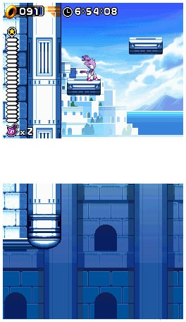
I totally fell in love with this game. Played it through in a couple days because I just couldn't stop. I think it's one of, if not
the best sonic game ever.
#138000 12 2006-01-31T23:50:56Z Lucidium I think Aju's right. I'm guessing electrocution has the same root as execution.
I remember seeing a console controller in which someone had replaced the rumble motors with gag electric shockers, and added contacts down the sides. Interesting idea for things like fighting games, except the rumbles don't directly correlate to your character taking damage.
#139415 95 2006-02-04T16:41:32Z Lucidium Just fooling around here. Made an abstract-ish wallpaper:

Click for 1600*1200.
#142280 17 2006-02-11T17:25:47Z Lucidium Needs moar /hr/ guro bear seal of approval.
..,-~*`lllllll`*~,
..,-~*`lllllllllllllllllllllllllll`*-,
,-~*llllllllllllllllllllllllllllllllllllllllllll*-,
,-*llllllllllllllllllllllllllllllllllllllllllllllllllllll.\
.;*`lllllllllllllllllllllllllll,-~*~-,llllllllllllllllllll\
..\lllllllllllllllllllllllllll/\;;;;llllllllllll,-`~-,
...\lllllllllllllllllllll,-*..`~-~-,(.(`*,`,
.\llllllllllll,-~*)_-\..*`*;..)
..\,-*`,*`),-~*`~..../
...|/...//~,...-~*,-~*`;./.\
../...///..,-,..*~,.`*~*.*...\
.|...///.*`...\...).)`~,
.|.//./.),.)`*~-,.../.|..)`~-,
/./.../,*`-,..`-,*`.,---...\./../..|...```*~-
...(.)`*~-,.`*`.,-~*.,-*|/.//\
.*-,.`*-,...`~,..``.,,,-*.|.,*...,*|...\
.*,`-,)-,..,-*`...,-*.(`-,\
Whut?
Ooh. Orz is back up.
#142952 1973 2006-02-13T08:12:50Z Lucidium Ohh. Some kind of Simpsons game, with Bart. In which you have to spray things purple to ward off aliens or something.
I know we used to have this on one of our old computers. I just can't remember the blasted name of the thing.
It'll come to me, I'm sure.
Ah!
Bart vs. the space aliens?
Hmm. Couldn't resist googling it. "Bart vs. The Space Mutants" apparently.
#143267 1975 2006-02-13T23:50:07Z Lucidium God, yeah, same here. I still played it over and over again, even if it was painful. Obviously my pattern recognition wasn't so hot back then.
Anyway.
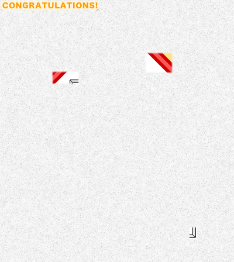
Flash game here.
I've tried to make this quite hard, without being too unfair.
#143416 13 2006-02-14T10:58:24Z Lucidium I'm pretty sure I've heard of online services for this exact thing.
You set up what forums and such that you visit, and then log in once a week or whatever. If you stop logging in, it sends messages out to all the places explaining that you're dead.
I'm guessing though, I've never actually checked this out so I don't know how exactly it would work.
#144090 1977 2006-02-15T18:28:03Z Lucidium I'm pretty sure this should be really famous. I know some people here read
jayisgames, and he's always going on about the guy who made this.
I'll give it another day or so, then reveal some more.
#144645 279 2006-02-16T21:18:39Z Lucidium There's a "download" link on the page, which you can just right-click/save-as.
#144646 1980 2006-02-16T21:20:26Z Lucidium Some more, as per request.
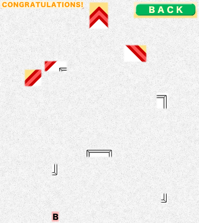
#145297 283 2006-02-18T13:46:05Z Lucidium I wouldn't mind really, it's just that I think it'd be a really bad idea.
My actionscript is pretty outdated, as I learnt a long time ago and haven't bothered to update myself. It'd probably do more damage than help if you tried to learn from it.
You'd be better off checking out some of the tutorials that come with flash, and some sites like
Actionscript.org and
.com.
If you still really want to see it, I'll post it, but I really don't think it's going to be much help.
#145866 28 2006-02-19T18:41:22Z Lucidium Well, you appear to have several other surprising powers, Mayor-from-beyond-the-grave. Like talking to us.
Which is pretty scary actually. Seriously.
Can you see us when we're in the bathroom?
...
Anyway, we don't really have anything much to go on yet, do we? The only useful thing I can think to add is that these people haven't spoken yet:
Krusch
Macaddict
Bsben
Pariah (astheoceansblue)
Blazeraid
Aju
Wracked with hidden guilt for killing our beloved Ninja Mayor Sweep (may his shuriken forever spin), perhaps?
#146086 16 2006-02-20T06:43:32Z Lucidium About the whole "why doesn't he have episode highschores" thing.
To get highscores, you pretty much always have to get all the gold. I doubt most people would bother to do that when just completing an episode. So, even fantastic players won't have episode highscores unless they bother to go back and redo them.
#146327 30 2006-02-20T22:13:35Z Lucidium For lunch today, I had a sandwich consisting of Leerdammer cheese, ham, pt, and mayonnaise on brown bread.
It was delicious. I like sandwiches.
*ahem*
So, anyway. The same people still haven't spoken. I'm starting to think Trogdor's suggestion might make sense, seeing as we don't have much else to go on.
#146576 1984 2006-02-21T10:02:06Z Lucidium 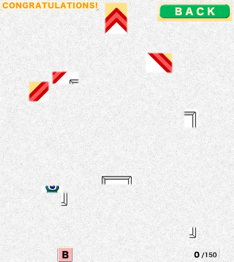
How's about that?
#146579 1986 2006-02-21T10:47:51Z Lucidium 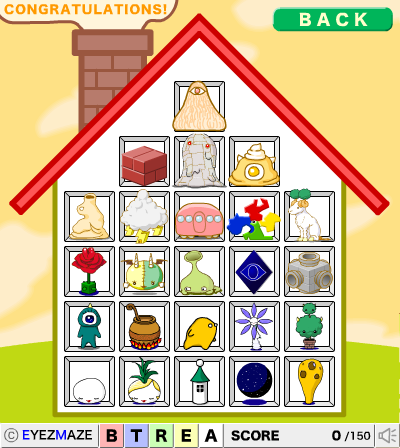
That's the one!
Sorry, I didn't realise that people might not have seen this screen in the game. Ah well.
#146590 46 2006-02-21T11:44:25Z Lucidium Hey, I'm getting lynched for taking cheese!
I'm gonna hold off voting to lynch until some more information comes up, anyway.
#146820 57 2006-02-21T23:40:55Z Lucidium I think, if anything, the fact that I pointed out who hadn't posted yet suggests I'm not mafia.
Think about it. I don't have any control over who posts when. If I was mafia, would I want to lynch someone based on random chance?
It'd make more sense for me to pounce on the first semi-reasonable excuse for lynching someone I knew wasn't mafia.
Anyway, I wasn't actually suggesting we lynch anyone on that list. I know, of course, that some people can't join these town meetings all the time, so it'd be unreasonable to suspect them because of that. I was just pointing out that it was pretty much all we had to go on at that point, not saying which side it was evidence for. It could just as easily be a suggestion that anyone not on the list is mafia.
So far, the reasons given for lynching me have been:
I seemed to be accusing other people. Which is actually a fairly reasonable reason. So fair enough.
I stole cheese. Or, more precisely, I simply had the same cheese. I stole nothing.
For the heck of it. ...
#147496 61 2006-02-23T15:26:48Z Lucidium I think Aju's made it pretty clear that he's connected to Blazeraid in some way. I mean, please:
He voted for Ludicidum, because he CLEARLY stole his cheese! ...
He states that he is cute, AND fuzzy! ...
So, Blazeraid did NOT start a rally against somebody, and has a valid reason. Case closed.
As Daddaluma said,
He attempted to justify his vote to lynch someone with a lighthearted excuse.
Both Blazeraid and Aju have given ridiculous reasons to lynch me, which stinks of a mafia-decision that they're now trying to justify.
It also seems obvious that they must be linked somehow, which could mean:
- One of them is mafia, and they're lovers. I'd think Blazeraid is the mafia, as Aju seems to be following rather than leading. In this case, even though it's a bit unfair to the non-mafia, it still makes sense to lynch the mafia, as we need to get rid of him eventually.
- Both of them are mafia. In which case either of them would be a worthwhile lynch.
- They're masons, or one is and they're lovers. But masons are supposed to be helping us, right? And the reasons they're coming up with are hardly helpful. This case seems unlikely.
- They're just kill-eager townspeople. But then why not give a real reason for thinking I'm mafia, instead of just some joke reason?
Macaddict, though, I find a bit confusing. He suspected Blazeraid too, but now:
For now, because I suspect that they are lovers, I will unvote.
Now, this seems like honest confusion on his part. Which I could understand, and would make sense given the evidence so far. But the fact that he then says:
And, just for the heck of it, vote for lucidium
worries me.
Surely it'd make more sense, if he's confused, to just not vote for anyone yet? The whole bit where he initially suspected Blazeraid might have been a deception.
However, I can't really be sure of anything about Mac yet, so for the moment I'm going to assume he's not mafia.
But, interestingly. As soon as Aju heard that Macaddict had changed his vote to me, he said this:
Why not...
Unlynch Mac
Lynch Lucidium
There hasn't been a single, sensible reason given to lynch me yet. But four people are voting for me.
I'm going to wait to hear Blazeraid defend himself before I decide anything, because maybe he's just not taking this seriously. But when we're discussing
murder, and he's cracking
jokes, it seems only fair to find him suspicious.
#147854 75 2006-02-24T12:49:52Z Lucidium Well, I hope I'm not wrong, but seeing as he's barely made an effort to defend himself:
Vote to lynch Blazeraid
I do sorta wonder if maybe he's just useless at defending himself, or just can't be bothered to try properly.
Blazeraid - If we're making a mistake, you could at least try to convince us we're wrong, so we don't just shoot ourselves in the proverbial group foot.
#147875 78 2006-02-24T15:45:17Z Lucidium It's like he doesn't even care if we kill him.
I'd be pretty annoyed if we lynched a non-mafia just because he couldn't be bothered to take part in this meeting seriously.
Either that, or it's a clever ploy to make us think he's innocent.
#148042 83 2006-02-24T20:56:59Z Lucidium
...
Dammit ,(>_<)\
#148145 93 2006-02-25T00:30:36Z Lucidium Well damn. Sorry folks. That was an honest effort at reasoning with the evidence I had. I just can't believe someone could be so defeatist. It's like he didn't even want to live any longer.
He's put at us a disadvantage now, too, by acting that way.
I don't know what to think any more. I'm going to reassess the evidence given that we now know that Blazeraid was apparently either insane, or a crazy fool.

#148147 2006 2006-02-25T00:33:06Z Lucidium What platform is it on?
For some reason, I've got the feeling it's an adventure game.
#148987 7 2006-02-26T22:23:03Z Lucidium I'd help out, but I'm afraid the first rule of Sex Club is "You do not talk about Sex Club."
#149253 2012 2006-02-27T13:51:09Z Lucidium Oh, god.
Fahrenheit. (aka Indigo Prophecy.)
What on earth is going on with that screenshot? It looks like it was running at like, 640*480 or something. I would have sworn blind that it was from a much older game.
#149254 4 2006-02-27T13:59:07Z Lucidium I've tried to come up with a way of doing this with teleporters. I've got one map which loops from bottom to top:
http://numa.notdot.net/map/24591
I still haven't come up with a way to get it to loop both ways though.
And, of course, the enemies don't loop.
#149404 2014 2006-02-27T22:02:55Z Lucidium Right, here we go.
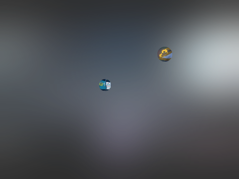
Pretty sure this hasn't been done before. Searching didn't turn up any matches.
#149407 8 2006-02-27T22:06:38Z Lucidium As BT said, it wouldn't be surprising if they've just found out that this gets a reaction. Like kids swearing, they're just looking for attention.
If anything mildly serious results from it, it'd probably scare them more than enough to get them to stop doing this kind of thing. At least for a while.
By "mildly serious", I mean, "any repercussions outside of the internet". Such as contacting their parents, or isp.
It's not that this offends me in any way. I just like the idea of scaring idiots.
#150745 6 2006-03-02T15:59:05Z Lucidium I think people would have played the maps very differently if this was mentioned in the rules.
As it is, it's just a race. And as such, I doubt most people are bothering with the optional gold.
I guess you could warn people now to check through their times first. But it seems a little unfair to anyone who's finished already.
#150765 9 2006-03-02T16:35:08Z Lucidium Actually, now that I think of it, are you certain that it's even possible to complete some of these episodes with enough gold?
I'm thinking of 69, for example.
The more I think about this, the more I think it would be completely unfair. There's no proper way to tell how much time you've got left in an episode in userlevels. You could dip below zero, and never know it, even if you add up your times afterwards.
Please, you've got a fantastic competition going on here. The arguments this would cause would really spoil it.
#150772 2018 2006-03-02T17:21:46Z Lucidium 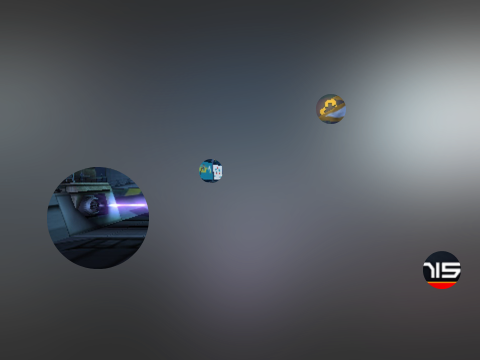
It's on the PSP. Which should make this stupidly easy to guess.
#150777 131 2006-03-02T17:28:34Z Lucidium Well, this makes it pretty easy for us to decide not to lynch Luminaflare today.
We'll know tomorrow if he is or isn't the bodyguard, (or at least, be very certain) depending on whether he gets lynched tonight.
We should use today to lynch someone else.
Though I'm not sure who, yet.
#150856 50 2006-03-02T20:24:04Z Lucidium Hey guys. I just emailed in my submission.
Could you confirm whether or not it got through? I've been having some email troubles lately.
#151083 2022 2006-03-03T11:51:26Z Lucidium Harsh.
Eh, I would have passed my go on anyway. I've run out of games to use.
#151091 145 2006-03-03T12:32:00Z Lucidium I don't know why people are voting to lynch me now.
We all agreed that Blazeraid's behaviour was suspicious. Don't punish me just because I was the only one that bothered to spell it out.
What
actual suspicious things have I done? It's been my policy to be completely open, and voice all my reasoning to you guys. I'm honestly just trying to make the best guesses with the information available.
Blazeraid wasn't exactly with it. He was half crazy, and it was a mistake to lynch him because of that. But in the panic after our mayor's death, you have to admit he
did seem like a likely candidate.
Look back through the town meeting records. I gave Blazeraid every chance to defend himself. I was one of the last people to actually vote to lynch him.
I'm a little reluctant to do this again, seeing as I got it wrong last time. But as it looks like I'm going to be lynched otherwise, I guess I'll have to.
If I had to pick one person as being suspicious, I'd have to say Trogdor007. He's been very quick to lynch, and very quiet otherwise.
His first post after last night's lynching was:
Damn...
vote to lynch Luminaflare
Without even so much as an attempt at explanation.
When MacAddict accused him, he replied:
wait... did you miss my first twelve posts in this thread?!?
I've been the most active poster in here!
Which is just a straight out lie.
Up to that point, he'd said the following:
I'm unable to be super active this month... I'll be around at least three times a day though.
Are there mafia ninjas?
I'm thinking that a good vote would be for the least active member. It's not like they'd care!
Quote
Vote to lynch Blazeraid
- This was before I made that big speech. Again, no explanation, just a single line accusation.
One more vote and you're gone.
Now, he did actually explain his vote for luminaflare:
I find that if someone is posting as stupidly and carelessly as luminaflare is, they are either mafia, dealing with being a good guy w/ power, or someone who has NO idea about this game. That's why I voted luminaflare. Plus, he has a seriously cool name that would sound awesome w/ an italian accent. He'd make a great mafioso.
I'll let you draw your own conclusions about that.
He just seems awfully eager to lynch, and is always quick to go with the tide. When it looked like people were not going to vote for luminaflare, he jumped straight to voting for me, while everyone else was just unvoting.
A bit of a vague point, but he also seems extremely eager to remind us we'll have to lynch luminaflare tomorrow.
Once again. I'm just explaining my reasoning to you. I'm not certain Trogdor is mafia, he could just be a very eager, terse villager.
I'm making an honest effort to work out who the mafia are. I still stand by my thoughts about Blazeraid. He
was acting extremely odd. It turned out wrong in the end, and I'm sorry that happened. But I think I'm being one of the most careful here when it comes to lynchings. If all I wanted to do was kill off villagers, I'd hardly need to work up these big speeches. I could just go with the crowd.
#151215 148 2006-03-03T18:43:21Z Lucidium What do you want me to do, just give up like Blazeraid did?
I'm giving good, logical reasons for suspecting people. I made a mistake with Blazeraid, but you have to agree he was acting extremely odd.
You're being ridiculous.
Someone has to present the evidence. If you're just going to jump at the first person to do that, we're never going to find out who the mafia are.
The first person to blame me, actually, was
you.
For now i'm voting for lucidium, as he's the first to attempt to accuse someone else and therefore take suspicion away from him.
I made a list of people who hadn't spoken yet. You straight out voted to lynch me because of that.
At the moment, you're looking just as suspicious as Trogdor, for much the same reasons.
#149625 (forumer) 30 2006-03-05T23:40:00Z Lucidium I don't find stuff like that offensive at all.
I just find it kinda embarrassing that you even bothered to fight about this. It's an annoyingly large, and only vaguely amusing addition to your sig.
It's on the same kind of level as posting the goatse picture, because it gets a response. Except as an added bonus, you have the classic delusion that it's clever because it's not "technically" against the rules.
I'm sure you thought you were going to show Sweep up by making this thread, but in reality you're just showing the same total misunderstanding of rules that the average college student harbours.
You've made a lot of smart posts, here and in relig, this wasn't one of the best.
In the future, at least, learn to lose gracefully.
#152074 22 2006-03-06T00:11:58Z Lucidium There's something to be said for just allowing everyone to change their member titles at will.
It removes having a custom one as being this mark of prestige, and can actually produce some real gems.
#152289 165 2006-03-06T17:25:00Z Lucidium Well.
I'm going to stop trying to "analyse the evidence." Clearly, I suck at it.
Sorry, again, guys.
Also, can I suggest something about this gun?
How about, the bodyguard tells us who he is, and who he protected last night. Then we give the gun to the bodyguard. That way, we'll know two people who definitely aren't mafia, and we still won't get the bodyguard killed.
#152915 76 2006-03-08T20:41:26Z Lucidium
Please,
please don't use html to scale down images! It's a horrible crime against bandwidth, and a basic web design sin.
I'd gladly do any image editing you need, if it'll stop that from happening.
#153109 10 2006-03-09T11:02:31Z Lucidium Conspiracy theories in general get on my nerves a bit. Everyone wants to think that they've discovered some big secret about the evil government, as if the world is run by a shadowy group of highly organised geniuses. And, of course, anyone who disagrees is "naive".
I find the whole moon landing thing particularly annoying, mainly because all of the evidence given for it is so ridiculous.
However, you've got me intrigued about this more reasonable, core evidence, TDL. Maybe you could post some more details, here or in Intelligent Discussion?
#153133 205 2006-03-09T14:39:19Z Lucidium Wow, this is getting really interesting.
Thanks for protecting me luminaflare (assuming he's telling the truth).
If you're lying, then, well done for convincing us, I guess.
I'm not going to weigh in on any of the discussions going on just yet. I'm still kinda gun shy from having made two wrong judgements.
Just wanted to ask about Bsben, has he been PM'd to remind him? I'm assuming we're not allowed to PM eachother about anything, so Sweep would have to do it.
#153383 5 2006-03-10T08:37:57Z Lucidium You
do realise that
gimp is free, right?
#153452 20 2006-03-10T17:06:27Z Lucidium ...
That site's great... in an insane kinda way. They debunk all of the "moon-hoax" evidence quite well, but only do so in order to posit the coverup of "the presence of ancient, glass-like ruins on the Moon." Apparently based entirely off of
this.
#154366 10 2006-03-13T16:58:22Z Lucidium The first thing that comes to mind is Sendy's "What Now?!?!", but that's already been mentioned.
Um... I seem to remember
rrrobyp made some very original puzzles involving trapdoor delays.
I seem to remember a puzzle using the Bridges of Konigsburg set up, but with the doors layed out in a grid, and a corresponding smaller grid with drones inside it.
You had to open the doors in the right path to direct the drones out of your way. I can't seem to find it now, despite my best googling efforts.
#154801 6 2006-03-15T01:12:43Z Lucidium The whole "emo" attitude always seems to stem from a belief that you've worked out some big truth about the world, and that anyone who disagrees just doesn't understand. Life is pointless, so why bother with anything? All these other mindless idiots are just drifting through life without ever really getting it. Right?
Of course, I find it a little hard to tell if that's an accurate description or not. As everyone seems to have a different definition of what being "emo" is.
#154936 9 2006-03-15T12:44:14Z Lucidium Its not all stories. There are geneologies, poems, histories, and prophecies.
Heh, sounds like the Lord of The Rings books to me. edit: Or, in fact, any large fantasy work.
Also, about being ahead of its time. Give me any sufficiently large text, and some piece of factual information that couldn't have been known when it was written, and I'll show you a paragraph that refers to it.
Also, macaddict, why did you leave .relig? It's gone all quiet there.
#154996 235 2006-03-15T18:00:26Z Lucidium vote to lynch: lucidium
Uh, okay.
So, either you're lying about being the bodyguard, and are probably mafia.
Or, you
are the bodyguard but, unfortunately, also a complete idiot.
Also, what on earth is going on with Aju?
I don't want to vote for him just yet in case he's just being stupid, and shooting us all in the foot.
#154998 14 2006-03-15T18:04:03Z Lucidium Why do you want to label yourself as "emo" anyway?
"Having a crap life" isn't some new invention of the 21st Century. It's just that, these days, the threshold for thinking your life is crap seems to be set much lower.
#155289 18 2006-03-16T20:10:51Z Lucidium I've noticed a tendency elsewhere for these discussions to fall apart. It's not that people are stubborn. It's difficult to change any belief that you've held (or assumed to be true) for a long time, even in the face of irrefutable evidence. I suppose that goes for any debate, really.
My brother made an interesting point when I was talking to him about this. It's more to do with the sort of debate you'd hear on a radio show than discussions on forums, but it still applies.
Debates are more for informing and effecting the
observers, than they are for changing the actual debaters' opinions. It's not worth it trying to change someone's mind when they've already made it up, but you can really influence someone who's undecided.
#155355 4 2006-03-17T02:26:35Z Lucidium Yeah. I don't see how "His tail sways like a cedar" means "thick tail".
If I say "This dancer bends like a reed", would you think I meant "He is very thin"?
#155588 10 2006-03-18T13:22:59Z Lucidium How did we survive and the dinosuars didn't?
There's plenty of ways you could kill off a whole section of the ecology, without completely killing everything else.
For example, dinosaurs are huge creatures. They need a lot of oxygen in the atmosphere to survive. If the oxygen levels go down, they'd die out, but smaller animals would just about be able to manage.
As for the multi-headed dragon, are you referring to Revelation? That's symbolic, methinks.
Symbolic because we haven't discovered anything yet that seems like it?
#155709 21 2006-03-18T23:36:09Z Lucidium EDIT: come to that, what is the purpose in most non-essential activities?
Seemingly to piss Jack Thompson off.
I think he's great, personally. It's like having a fly-on-the-wall view of one man's slide into dementia as he fails to update with the times.
What I find worrying is that there are people that actually listen to him, and don't think him the least bit crazy.
#155851 6 2006-03-19T14:07:51Z Lucidium The people behind it have such little regard for actually testing out their ideas and properly proving them.
How utterly unsurprising.
How can a living thing come from something with no organic make-up whatsoever?
What is this thing people have about "life" having some kind of magic special
rainbow power? This black and white view of the world that makes you think that somewhere, somehow, in the scale from the simplest molecule to the most complex animal, there's a cut off point called "Life".
"Organic" chemicals are just chemicals that are based upon carbon atoms. Sugars form spontaneously in
deep space. All you need for evolution to take place is a self-replicating system, whether it's a single molecule, or an entire whale.
The idea of everything being either "living" or "non-living" is outdated, and overly simple. Like most things in the real world, there's a gradient between the two extremes.
#154049 (forumer) 13 2006-03-19T15:34:00Z Lucidium I saw it in either Wired or Edge, in a feature on free games.
#155861 8 2006-03-19T15:38:42Z Lucidium Well, it least mine didn't have grey in it! o.O
RAINBOW
There, better?
[/offtopic]
[edit] So it's a little bit on topic:
You can have simpler, self-replicating structures than single celled organisms. And, whatever you start with, you still have to have a gradual build up from simple molecules. It's not entirely clear where you could say "life" starts.
Anyway, this is a more general point about the way people tend to compartmentalise things. It's not specifically to do with evolution.
#156093 6 2006-03-20T12:07:58Z Lucidium
Uh. I'm impressed that you did this all in powerpoint.
Yup.
#156095 3 2006-03-20T12:15:22Z Lucidium The rockets are pretty interesting. If you put a dozen or so down on the same spots, you can make a chain of rockets, which looks even more impressive.
#156096 21 2006-03-20T12:22:49Z Lucidium Kind of mixed-and-matched, but do you mind if I put this in my sig, Lucidium?
Go for it. I was gonna edit that "rainbow" myself, but I forgot.
[/offtopic]
#156169 5 2006-03-20T19:30:05Z Lucidium I actually saw this in Malaysia, which was pretty hilarious. They censor all of the expletives, but have no problem with people's limbs being torn off in full view of the camera.
So, say, someone would fall down a hole, and scare everyone. Then you'd see what'shisface, the Rock looking real angry, with his lips moving rapidly. But all you'd hear dubbed over was "FUDGE IT. WATCH YOUR STEP MEN. WATCH YOUR STEP."
I think I remember hearing the Rock say "fudge", "sugar", "darn it" and "blast". Made it a fairly surreal experience at times.
It was actually quite a fun film to watch. Obviously, you can't expect amazing story writing, but it was better than I expected.
[edit]Oh, also. The whole "genome", "human soul" thing was some of the most cringe-worthy writing I've paid for to see for a long time.
And what is it about your average writer who seems to think that "More chromosomes = super human"? Argh, god.
[/edit]
#156466 257 2006-03-21T16:40:17Z Lucidium Good god, we must be screwed now.
Surely the mafia have the majority, and can sway the lynch any way they want?
#156467 147 2006-03-21T16:44:36Z Lucidium I've just got the maps from the last couple pages to do. I think it's about a dozen or so.
Gotta run now, but I'll be back to get it done tomorrow. It's gonna be a huge post.
#156716 6 2006-03-22T15:26:50Z Lucidium Something like this:
var oldTime:Number = 0;
var newTime:Number;
var frameTime:Number;
var fps:Number;
this.createTextField("fps_txt", this.getNextHighestDepth(), 100, 300, 100, 20);
onEnterFrame = function () {
oldTime = newTime; // the time from the previous frame.
newTime = getTimer(); // newTime is set to the current time.
frameTime = newTime-oldTime; // the time the last frame took in milliseconds.
fps = 1000 / frameTime; // the frames per second.
fps_txt.text = fps;
}#156749 4 2006-03-22T18:49:31Z Lucidium That's a pretty odd title actually.
Every time I read it I picture some kind of horrible machine built out of parts of people.
Anyway.
Maybe something like "Find n apps made by fans here!" would make more sense.
If I remember correctly, there's no need to put a period after "app-lication-s".
#156840 6 2006-03-23T01:31:02Z Lucidium That's The Improbability Drive by TDL / formica.
Atramentis or NPGT.
#157292 284 2006-03-24T02:11:05Z Lucidium I'm still watching the thread.
I just don't have any solid ideas as to who to vote for, so I didn't think it was worth posting anything yet.
But guys, let's be careful about voting now, or we'll just make the same mistake again.
I'm starting to think that it's probably the quiet folks who we should look at. We've been going for the obvious, outspoken targets so far, and every time it's been wrong. It would be a pretty effective tactic for any mafia to just keep quiet.
#157661 20 2006-03-25T04:13:14Z Lucidium This is all very nice and all, but it's utterly futile. All you're ever going to get preaching like this is the choir nodding their heads and saying "Yup, that's real pretty logic there."
Anyone with a desire to could pick one of your assumptions apart to support their beliefs. For example:
The existence of random events means that there exist events which cannot be predicted.
There's no need for an omnipotent god to predict a single state outcome of an event. It's perfectly possible to predict a probability range for the outcome, and prepare for every possible event.
Or:
Free will is entirely contingent upon the existence of random events.
The point of free will is that it's a force outside and separate from the rest of the universe. It is within yourself. While the external
outcomes may be predictable, the internal processes leading up to them are out of anyone else's control. Free will is
not contingent upon random events in the external universe. Being able to predict the outcome of something does not in any way imply control over that thing.
Of course, I agree that the idea of free will is a childish safety blanket. But in the end, all the thought you've put into this amounts to an interesting study of simple logic, nothing more. There are a million and one ways to demonstrate that belief in X is irrational.
Certainly, develop your ideas like this, as you strive to find your own, self-consistent set of beliefs. But I hope you realise: This is not an effective way of influencing people. Read
that again twice.
#157786 28 2006-03-25T15:58:34Z Lucidium Tsukatu, read my post again. In your eagerness to defend your rant, you misinterpreted it.
#157871 31 2006-03-25T20:51:24Z Lucidium I know my example counter arguments were completely irrational and nonsensical. That's the point I was making. Anyone who really wants to believe you're wrong only has to convince himself that he's right.
What I'm saying is, it doesn't matter if those counter arguments didn't make sense to you. I can come up with any babble that makes sense to me, and just say that "you don't understand."
Directly attacking someone's belief is an awful way of convincing them of something. Because they subscribe to it, if you're right, they've been stupid. Most people, on having something like this pointed out to them, just become defensive, and convince themselves that you're wrong.
I'm not saying it's completely ineffective. I just wanted to point out that, you've posted a few of these logic rants, and they're probably having the opposite effect from what you intended.
#157978 151 2006-03-26T01:42:12Z Lucidium Well, that took a little longer than I thought it would, but I think I've got it all done nice and tidy.
Hopefully, this won't be too huge.
Mini Edgeplay by astheoceansblue
I was impressed with how much you managed to make this feel like the original, even if it didn't look exactly the same. The top right area is really the only place that didn't seem quite right. Apart from that, this was a solid miniaturisation.
- Translation quality: 42/50
- Overall quality: 19/25
- Difficulty: 18/25
- Total: 79/100
Mini Quirkscrew by Krusch
The two main things that threw this off for me were the missing mines, and the fact that the laser drones were placed right next to the wall. In the original, having the gap between the drones and the wall meant you could sneak past them, and made the map play a lot smoother. Also, why weren't the exit and ninja placed in the centre?
- Translation quality: 38/50
- Overall quality: 16/25
- Difficulty: 8/25
- Total: 62/100
Mini Mount Doom by Madnick
While this looked quite similar to the original, there were lots of little things that made it feel quite different. You got the first bounceblock jump right, but then seemed to miss the next one out. Entering the top of the mountain worked really well, and felt a lot like the original, but the bottom left corner was almost completely different. It would have been nice if the chaingun drone stayed inside the mountain too.
- Translation quality: 32/50
- Overall quality: 12/25
- Difficulty: 17/25
- Total: 61/100
Mini Just For You by chasethebase
The adjusted launchpads were a nice touch, and you got the look of the map just right. But the actual placement of the circles and objects inside the room just seemed random. A bit more adjustment to make it play smoother, and more like the original, would have gone a long way.
- Translation quality: 33/50
- Overall quality: 15/25
- Difficulty: 16/25
- Total: 64/100
Mini Grenier by chasethebase
This plays very much like the original, and it looks very similar too. But then, the original was a very simple map. The single-square one-ways at the bottom were a little bit odd, and they were the only thing that really stood out as being different. Maybe you could have found a solution that let you run underneath without forcing yourself through the one-ways.
- Translation quality: 40/50
- Overall quality: 16/25
- Difficulty: 10/25
- Total: 66/100
Mini Fire Sky 3 by Evil Bob
There's a lot going on here, but the original was spaced out enough to allow you to fit it all in. For the most part, this plays just like the original, but it's not quite as perfected. For example, you can set yourself up on the top launchpad, and just sit there forever. You've got the details right, though, even if it does need a bit more polish.
- Translation quality: 42/50
- Overall quality: 16/25
- Difficulty: 16/25
- Total: 74/100
Mini Half Life 2 (aka Quarter Life) by bobodahobo
I can sort of see how you tried to make this play like the original, by adding locked doors instead of a second exit, and that kind of thing. But it's really just nothing like it. The basic shapes are there, and the bottom seems quite similar, but it feels completely different to play. Also, why did you add in things like the one-way squares?
- Translation quality: 21/50
- Overall quality: 11/25
- Difficulty: 19/25
- Total: 51/100
Mini Break by Krusch
I think you really managed to get the feel of this map just right. Obviously, you've got the basic teleport set up working, but the object placement really makes the map work. I found myself playing in almost the exact same way I had on the original.
- Translation quality: 44/50
- Overall quality: 21/25
- Difficulty: 14/25
- Total: 79/100
Mini Plue by clovic
This basically looks and plays like the original, but little details in the layout throw it off for me. It works very well if you go round clockwise, but it feels pretty awkward going the other way. It would have been nice to see the extra gold beside the exit, too.
- Translation quality: 38/50
- Overall quality: 19/25
- Difficulty: 16/25
- Total: 73/100
Mini Full Circle by jtbandes
This is as perfect a miniaturisation as can be expected with N's tiles. It looks and plays nearly exactly the same as the original. However, the original was an extremely simple map, and it isn't that great, which means you lost points in both of the other categories.
- Translation quality: 49/50
- Overall quality: 13/25
- Difficulty: 3/25
- Total: 65/100
The Mini Crazy Miner by Korbachev
This was a really impressive map to miniaturise, and you did a great job getting everything in. It's a shame that it doesn't play half as smoothly as the original, and can be quite frustrating at times. But the difficulty score more than makes up for any points lost because of that.
- Translation quality: 43/50
- Overall quality: 12/25
- Difficulty: 23/25
- Total: 78/100
Mini Chick Bock by jtbandes
This is a pretty accurate miniaturisation. I like how similar the movement of the drone is, compared to the original. The most obvious difference is, of course, the zig-zag sides, which maybe could have been adjusted to suit a minimap more.
- Translation quality: 40/50
- Overall quality: 14/25
- Difficulty: 12/25
- Total: 66/100
Mini Convention (aka Sub-Convention) by Maximo
This minimap really feels like the original. You managed to fit in most of the actual objects and tiles pretty well. But more importantly, you managed to include all of the different gameplay elements that were in the original. Great miniaturisation.
- Translation quality: 46/50
- Overall quality: 21/25
- Difficulty: 15/25
- Total: 82/100
Mini Milieu by bobodahobo
The rocket turret, and the ninja, are placed differently to the original, and the tiles could have been shrunk to give the player more space. It's understandable that you had to do this because of the space constraints, but it still detracted from the translation. However, you have made a very fun, KRA-esque map out of this, which gets you some extra points.
- Translation quality: 32/50
- Overall quality: 20/25
- Difficulty: 14/25
- Total: 66/100
Mini Shrine by thegnome54
You did really well getting the feel of this map right, and I think you made the right choice to replace the rockets with gauss turrets. There are some frustrating parts, such as trying to get down the centre straight into a turret, which make this minimap less fun. And, although the original was difficult too, this means it loses some overall quality points.
- Translation quality: 42/50
- Overall quality: 12/25
- Difficulty: 16/25
- Total: 70/100
Shot Shot Mini by ConfusedCartman
This is a really impressive minimap, and you managed to include all of the major elements from the original. It doesn't quite flow as well in a few places, and it's a shame there's not enough room to make the floorguard work properly. Apart from that, a great miniaturisation.
- Translation quality: 42/50
- Overall quality: 18/25
- Difficulty: 18/25
- Total: 78/100
Mini Mother Thumping Impossible by bigblargh
It's surprising how much this feels like the original MTI, even though the tiles are different, and it's even missing a section. There were one or two sections that I felt could have been polished more, such as the drone, and the left wall, but overall this was a really nice minimap.
- Translation quality: 44/50
- Overall quality: 18/25
- Difficulty: 16/25
- Total: 78/100
Mini Twisted by Korbachev
While this looks a lot like the original, it was always going to be difficult to get any of the challenging jumps to work. In terms of actual gameplay, this isn't that similar to the original, and unfortunately makes for quite a boring minimap.
- Translation quality: 37/50
- Overall quality: 12/25
- Difficulty: 20/25
- Total: 69/100
Mini Fire Sky 3 (2) by topspin92435
You've managed to include most of the elements from the original, but it just doesn't seem like you paid any attention to detail. The safe holes in the original were all only one tile wide, and you needed to open two doors to get into them. Why, on the minimap, is the centre hole twice as large? You can also get up into the laser drone area on this map. If you manage to lock the laser drones onto one side, you can just stay there forever.
- Translation quality: 38/50
- Overall quality: 13/25
- Difficulty: 16/25
- Total: 67/100
Mini the forest and the fire (aka the tree and the flame) by jtbandes
This minimap looks and plays a lot like the original, and you did well to include a lot of the same smooth-run elements that made the original fun. However, you lose some points for picking a map that was already small, and some more for not fully miniaturising it.
- Translation quality: 41/50
- Overall quality: 17/25
- Difficulty: 11/25
- Total: 69/100
Mini Monumental by indecisive
The original Monumental had great flow, and a lot of smooth runs. You've made this minimap very awkward, especially by placing mines too close to the ground. You did well making it look very similar to the original, but unfortunately, it doesn't play a lot like it.
- Translation quality: 32/50
- Overall quality: 11/25
- Difficulty: 18/25
- Total: 61/100
Mini domo kun FTW!! by astheoceansblue
You really did a great job miniaturising this map. Even though some parts couldn't fit in, you've managed to make it look just right, and it plays almost exactly the same. On top of that, it remains a fun map, and even though it's miniature, it's not frustrating.
- Translation quality: 47/50
- Overall quality: 21/25
- Difficulty: 16/25
- Total: 84/100
Mini Diamondback (aka Gardener Snake) by Maximo
This is as near perfect a translation as could be done without picking an empty map. It looks and feels exactly the same, even though the gaps are smaller. Obviously, though, the original was an extremely simple map, and you lose some points because of that.
- Translation quality: 49/50
- Overall quality: 19/25
- Difficulty: 6/25
- Total: 74/100
Mini Bomb Shelter (aka Grenade Shelter) by Maximo
You've done well to include nearly all of the original elements from this map, but there's a few details that make it feel different. The chaingun drone in the original actually follows the central block, and comes out sometimes. And it would have been nice to have another launchpad or two in the rocket area. It's also a shame about the bottom-left corner, perhaps locked doors would have worked better, as they wouldn't let the rocket turrets see you?
- Translation quality: 41/50
- Overall quality: 13/25
- Difficulty: 16/25
- Total: 70/100
Mini Rue the Whirl by capt weasle
The style of the map looks right, but the actual layout is quite different. It would have worked if changing the layout made it play more like the original, but as it is it's not that similar. Unfortunately, this also makes the gameplay awkward compared to the original, and not that fun.
- Translation quality: 36/50
- Overall quality: 15/25
- Difficulty: 17/25
- Total: 68/100
Mini Zenith by clovic
The bounceblocks work well here, and make it play very much like the original. This is a nice, clean miniaturisation of a fairly simple map.
- Translation quality: 46/50
- Overall quality: 17/25
- Difficulty: 13/25
- Total: 76/100
Mini Interdictor by cheese god
This minimap really plays like the original, and you've done well there. But a little bit more attention to detail in the way it looks would have been nice. The centre blocks seem strange being that wide, and the sides could do with a bit more polish.
- Translation quality: 42/50
- Overall quality: 15/25
- Difficulty: 11/25
- Total: 68/100
Mini Get Over It by 9_4_0_0
The look of this minimap is a good translation from the original, and for the most part, it plays very much the same. But actually getting over the top is really not fun, and getting back again is just frustrating. If you'd made the central tower just a little shorter, so you have a gap like in the original, this would have been a great minimap.
- Translation quality: 40/50
- Overall quality: 12/25
- Difficulty: 18/25
- Total: 70/100
Mini Motherload by Yuiop78737
You did a good job fitting the major elements from the original in, but the details really let this miniaturisation down. Things like the start position of the ninja compared to the launchpad, and the untidy gold in the top right. The tiles in general could do with a polish, and there was no need for the line of one-ways next to the terminal.
- Translation quality: 40/50
- Overall quality: 11/25
- Difficulty: 12/25
- Total: 63/100
Mini Hedge (aka Shrub) by thegnome54
This is an impressively accurate translation, from the feel of the map, to the path you have to take through it. It would have been nice if the tiles were a little bit smoother, like in the original. And it would have been fantastic if they were symmetrical.
- Translation quality: 43/50
- Overall quality: 12/25
- Difficulty: 21/25
- Total: 76/100
Mini Tied by Sketch
Obviously, this was a difficult map to miniaturise, and it's a shame you had to leave out parts of the original. The tiles could have been a little more forgiving on the rocket, to make it play more like the original, and it would have been nice if they were a little smoother.
- Translation quality: 34/50
- Overall quality: 15/25
- Difficulty: 19/25
- Total: 68/100
Mini Maize! by theshav
This was a very difficult map to miniaturise, and you included some of the original elements, such as the very start section. However, you've completely changed the overall layout of the map, you filled in the outside, and you didn't include any of the one-ways. In the end, this plays more like a map inspired by the original, than a miniature version of it.
- Translation quality: 28/50
- Overall quality: 12/25
- Difficulty: 21/25
- Total: 61/100
Mini Really quite sorta fast (aka Really pretty quite sorta mini) by SnowBlinD
This minimap works surprisingly well, plays a lot like the original, and looks pretty similar. It needs some smoothing out, especially towards the end, which unfortunately also makes it a little bit less fun to play. But overall, it's a good, solid, miniaturisation.
- Translation quality: 40/50
- Overall quality: 15/25
- Difficulty: 23/25
- Total: 78/100
Mini Torrential by freakykiwi
Granted, this minimap looks somewhat like the original, but it plays completely differently. The drones, which the original map is entirely based upon, behave nothing like they should. Did you playtest this? The fact that they can chase you around inside the main map area makes this minimap very frustrating to play, too.
- Translation quality: 27/50
- Overall quality: 11/25
- Difficulty: 19/25
- Total: 57/100
Mini Mount Doom (2) by ultima888
It's surprising how much this plays like the original. The start section is near-on perfect, and you've managed to squeeze the inside together extremely well. The fact that the chaingun drone comes out of the mountain messes up the gameplay a little, but apart from that, everything feels right.
- Translation quality: 44/50
- Overall quality: 17/25
- Difficulty: 17/25
- Total: 78/100
Mini Pinball by AlliedEnvy
I think this is actually a lot more fun to play than the original. It's a good translation, it looks right, and it all works very well. It's not quite fantastic, but it's a nice miniaturisation.
- Translation quality: 43/50
- Overall quality: 18/25
- Difficulty: 14/25
- Total: 75/100
Arachnophobe by luminaflare
I can't fault you on the translation here, apart from maybe saying it could shrink a bit more vertically. For the most part, it plays very similar to the original, and it's a fun enough map. However, the original was an incredibly simple map, in terms of gameplay as well as layout, which loses you a lot of points.
- Translation quality: 48/50
- Overall quality: 16/25
- Difficulty: 4/25
- Total: 68/100
Mini Rocket Rage by topspin92435
You actually did quite well getting the overall movement the same, even if the details are off. The original had several sections, which your minimap is missing, where the rocket passes through thin tunnels in the tiles. This also gave the tiles in the original a specific look, which you could have included even if you couldn't use the tunnels. In the end though, even though it's impressive, it's just not that accurate a reproduction of the original.
- Translation quality: 28/50
- Overall quality: 14/25
- Difficulty: 24/25
- Total: 66/100
Mini I Can't Fight This Chaingun Anymore (aka I Can't Fight This MINI Chaingun Anymore) by Korbachev
You really did a good job translating the feel of the original over to the minimap. Even though the tiles aren't exactly the same shape, the challenge of each switch seems very much the same. Being so accurate has made the map quite difficult, but it's remained fun even if it's frustrating at times.
- Translation quality: 41/50
- Overall quality: 17/25
- Difficulty: 18/25
- Total: 76/100
Mini Shy glass lever dog (aka Tiny Glass Lever Dog) by tktktk
You've got the look of this map down nearly perfect, missing only the thwump's "windows", which of course you couldn't fit in with the tiles. The proportions are just right, and while you had to compromise with the platforms in the bottom section, the gameplay actually feels very similar. Though it also makes you take a similar route to the original, the top section has suffered a bit in being shrunk. It takes more trial and error now than quick reactions, and could perhaps have benefited from moving the left mine further out a little.
- Translation quality: 43/50
- Overall quality: 17/25
- Difficulty: 17/25
- Total: 77/100
Mini Tree of Many Curls (aka The Tree of Mini Curls) by Atramentis
You did a really impressive job shrinking this design down, and you've managed to include just about everything from the original. The smoothness of the original has obviously suffered, and it means that some of the pockets are more for decoration now than actually being useful. It's interesting that you've changed the way the doors are locked. While not quite accurate, it does make the map a lot less frustrating that it could be.
- Translation quality: 42/50
- Overall quality: 19/25
- Difficulty: 19/25
- Total: 80/100
Mini Carbon Chains by ultima888
There are some sections in this minimap that work in a similar way to the original. Especially the thin passage towards the chaingun drone, and reaching the switch on the left. But, though the tiles obviously use the same pattern, the overall layout is only vaguely the same. The gold placement is seemingly random, and things like placing a switch on top of a turret detract from the overall quality of the map.
- Translation quality: 31/50
- Overall quality: 17/25
- Difficulty: 19/25
- Total: 67/100
We Three Stooges (aka Mini We Three Kings) by freik
I'm sorry, but this minimap bears only the merest resemblance to the original. From a distance, you could just about say they looked the same, but actually playing it would dispel any illusion of similarity. The original map was a smooth, open, race. It seems like you hardly even tidied up the tiles in this map. The gauss turret in the corner is a strange addition, and while the exit and terminal are somewhat similar to the original, the rest of the switches are completely different.
- Translation quality: 17/50
- Overall quality: 8/25
- Difficulty: 21/25
- Total: 46/100
Mini Make a little birdhouse in your soul (aka Make a mini birdhouse in your soul) by Sweep
You did a good job making this map look the same as the original, and more importantly, play the same. Even though the jump is a lot smaller, getting the terminal still feels dangerous. It would have been nice to have some safe space at the bottom, as in the original, but apart from that the drone pits work surprisingly well. Using locked doors and one-ways on the pole was a neat trick which, as an added bonus, gives it the same look as the original. Your attention to detail with the gold and mine placement was impressive too.
- Translation quality: 43/50
- Overall quality: 20/25
- Difficulty: 18/25
- Total: 81/100
Mini Shrapnel (aka ShrapneLittle) by GameAddict
I'm amazed that someone tried to miniaturise this map, and I'm impressed with how well you've done it. You've obviously paid attention to detail with that one-way there to keep things smooth, and though you had to compromise with a 5 block, you've managed to include just about everything from the original. It's a bit of a shame that the final block underneath the exit is missing, and some precision placement of the ninja could have made the start work better.
- Translation quality: 39/50
- Overall quality: 15/25
- Difficulty: 22/25
- Total: 76/100
Mini Missile Waltz by bufar
The tiles in this minimap are an accurate shrinking of the original, and you've got the object patterns across well. The gameplay does however feel a little different. Whereas the original had quite random platform placement, which made for interesting choices, the platforms here pretty much mean you just climb up in the obvious order. It's made an already easy, simple map a little bit too boring.
- Translation quality: 41/50
- Overall quality: 15/25
- Difficulty: 8/25
- Total: 64/100
Mini I can't fight this chaingun anymore (2) by malloc
Removing some of the switches to make this minimap more balanced was a good idea, but didn't quite work out in the end. In simplifying the map, it's become almost too open, removing a lot of the stealth fun of the original. It just doesn't feel the same playing it. It's also made it a little frustrating trying to move about, especially around the top few switches. Little details, like the upwards launchpad that only works if you execute a fast jump off the wall beside it, make the map feel rather unpolished.
- Translation quality: 36/50
- Overall quality: 16/25
- Difficulty: 18/25
- Total: 70/100
Mini Freya by wellsj
Although it's relatively larger than the original map was, you've done a good job shrinking the style and layout down. It looks accurate enough, but the details really let this minimap down. The mine placement is actually quite different from the original, and can be somewhat frustrating in places. The laser drones are in the way a lot more than they were in the original too. The one on the left, for example, would feel a lot more similar if it was one column to the right. In the end, it all means that the minimap just doesn't feel quite as polished as the original.
- Translation quality: 35/50
- Overall quality: 17/25
- Difficulty: 17/25
- Total: 69/100
Mini Improbability Drive by topspin92435
You did very well to get the major features of the original Improbability Drive into this minimap, with the initial circuits and the symmetrical tiles. I'm afraid, however, that I just can't justify awarding you much more than half of the translation points, no matter how impressive it is. Granted, this is one of the most difficult maps you could have chosen, but that can't make up for the fact that it's just not the same.
- Translation quality: 26/50
- Overall quality: 16/25
- Difficulty: 25/25
- Total: 67/100
Mini Smile upon thy Creation (aka Frown upon thy Destruction) by Echarin
Even though the minimap is missing some major features from the original, most of the gameplay is surprisingly similar. You've done a good job replicating the tiles, and the end result is a very fun map in its own right. However, the bounceblocks contributed a very specific element to the gameplay which, because you couldn't fit them in, is entirely absent from your version.
- Translation quality: 33/50
- Overall quality: 20/25
- Difficulty: 17/25
- Total: 70/100
Mini Expedite by mcp3000
The style is right, and you've got the proportions of the original in well. Overall, the gameplay is very similar, even though you had to leave some parts of the map out. However, there are a few details that weren't quite right, such as the gold placement around the switches, and the missing launch pad underneath the terminal. The switch near the left floorguard is insanely difficult to get, and with the gauss turret there it's almost impossible. If it had the same gold-gold-switch layout as in the original, it would have worked far better.
- Translation quality: 35/50
- Overall quality: 14/25
- Difficulty: 18/25
- Total: 67/100
Mini Bees!!!!!!!!! by xdude_rox
This was an interesting map to choose, and you've done well miniaturising the tiles, even though you had to change the tile shape and density. The ground in the original is completely solid, whereas yours isn't, though that's quite minor. You're also missing the single mine from the original. And while you may have needed to take it out to make it play better, in such a simple map it's quite a major feature. As a map on its own, I'm afraid it's just not that much fun to play, and trying to find a solution becomes quite boring eventually.
- Translation quality: 38/50
- Overall quality: 13/25
- Difficulty: 14/25
- Total: 65/100
Mini Mile Over Mecca (aka Meter Over Mecca) by mcp3000
This is quite a fun map, and you've managed to miniaturise the tiles from the original very well. I like that you have all of the gold in double blocks, like the original had it all in triple blocks. The original kept the drones in the same place by setting them to surface follow, and I think your map would have worked a lot better if it did the same. Part of what made the original great was the simplicity, and that precarious descent towards the exit. While adding an extra door has made your minimap a bit more fun, it's quite a major deviation from the original.
- Translation quality: 32/50
- Overall quality: 16/25
- Difficulty: 16/25
- Total: 64/100
Mini The Temple by The Ninja Game
Well. Um. It's certainly accurate, I can't really fault you there. You are missing several rocket turrets, which did contribute that special something to the original. I'm not sure what that normal door is doing, and that "EVIL" arrow is pointing in the wrong direction. Finally, it is, of course, completely impossible.
- Translation quality: 41/50
- Overall quality: 1/25
- Difficulty: 7/25
- Total: 49/100
Mini Bandit by Sketch
This is a really accurate minimap. You've got the proportions right, and the mines and rocket turrets are placed well. The tiles either side of the hallway could have done with some more work, making them thinner and closer to the original design. The original also has a slight offset to the top one-ways, but with the mine there this was only a cosmetic difference. Overall, a very solid miniaturisation.
- Translation quality: 43/50
- Overall quality: 17/25
- Difficulty: 15/25
- Total: 75/100
Mini Alexander by theshav
You've obviously got the major elements that the original map is based upon here. It's a very well balanced minimap, and a surprisingly fun challenge. In general, the gameplay feels quite similar, even though you've changed how the switches work a bit. However, the tiles have very little in common with the original, there's a distinct lack of mines, and the new terminal placement can be a little annoying.
- Translation quality: 33/50
- Overall quality: 20/25
- Difficulty: 21/25
- Total: 74/100
Mini Pluperfect Subjunctive by xdude rox
You've done really well with this minimap, and in some places I think it actually works better than the original. The bounceblocks are well placed, you've paid attention to details in the gold placement, and the slightly modified terminal jump works well. However, there is a glaring problem in the relative heights of the sides, which also means that the rocket turret can see you a lot more often. This spoiled the look of the map, and significantly altered the way the top section plays.
- Translation quality: 37/50
- Overall quality: 19/25
- Difficulty: 18/25
- Total: 74/100
Mini Armitage by McP3000
The object placement here is really accurate, and even though you had to sacrifice some parts it actually makes the map play better. The tiles are nicely done, though the lumps on the outside corners are a little odd, and the mined floor is a fair solution to a problem. My only real complaint is the lack of one-ways. At the moment, figuring out the correct manoeuvre to get through the doors is just trial and error, which is a little boring. Though one-ways would have made the map significantly easier, I think it would have made it a lot more fun to play.
- Translation quality: 42/50
- Overall quality: 17/25
- Difficulty: 16/25
- Total: 75/100
Mini Necessary Evil by theshav
Obviously, you've had to sacrifice some of the sections from the original, but you've managed to keep the overall feel of the map there. It works well, and it's fun enough, but a little more polish and attention to detail would have really helped. Things like the gold placement, and the way one-ways were used in the original, are slightly different in your minimap.
- Translation quality: 29/50
- Overall quality: 17/25
- Difficulty: 23/25
- Total: 69/100
Mini Sibilant S by Qix
You did a really great job reproducing the feel of the original, with the only major difference being the lack of thwumps. The last section is especially good, and you've really paid attention to details in the object placement, apart from maybe the gauss turret being in the wall. Overall, a very well made minimap.
- Translation quality: 43/50
- Overall quality: 16/25
- Difficulty: 19/25
- Total: 78/100
Mini Twitch City by xdude rox
At first glance, this seems like a very accurate miniaturisation, but while the gameplay is similar, the layout is quite different. The whole map could do with being moved up one tile, so that you could recreate the start and end areas properly. The terminal is in the wrong section, and those single mines at the end of each downwards section are very annoying. However, you did manage to get the drones working quite well, even if they're not exactly the same as the original.
- Translation quality: 36/50
- Overall quality: 16/25
- Difficulty: 17/25
- Total: 69/100
Mini Paroxysm by Qix
This feels very much like the original, you've got all of the elements there, and the locked doors are a clever solution to the thwumps. It's a shame that the map is actually quite frustrating, though through no fault of your own. My only other complaints are that the one-way field was a little too cramped to be fun, and the mine above the bottom-left gold doesn't really do much.
- Translation quality: 42/50
- Overall quality: 14/25
- Difficulty: 18/25
- Total: 74/100
Mini Clifford (aka Puppy) by freakykiwi
You've got the overall gameplay right, and it works quite well as a map. But the details let this minimap down. I know you had to leave space for the laser drones, but the tiles could have been a lot cleaner. There are a couple other small issues, in that the right laser-drone never comes out of the top, and the exit is right in the corner in the original.
- Translation quality: 38/50
- Overall quality: 18/25
- Difficulty: 11/25
- Total: 67/100
Mini Tion by mysterypower
I can somewhat see how you may have been inspired by the original, but frankly, this is nothing like it. The tiles use vaguely the same style, with added mines, but the gameplay is completely different, and not all that fun. The abundance of mines, and that awful one-way trap near the terminal just make this minimap even more annoying.
- Translation quality: 12/50
- Overall quality: 11/25
- Difficulty: 16/25
- Total: 39/100
Mini Lysis by Fimison
Well this is very nice. It's impressively accurate, and it plays very much like the original. The only things that didn't quite feel right were the path to the terminal, and the slightly off shape of the centre. It would have been nice to see five mines there, and maybe a bit more curve to the top-left opening, to make it more like the original.
- Translation quality: 43/50
- Overall quality: 18/25
- Difficulty: 18/25
- Total: 79/100
Mini Dungeon of Dooms (Final Showdown) by topspin92435
While I have no problem giving you the highest marks for difficulty, I don't think anyone could expect to replicate a DDA this complex with any accuracy. You've done impressively well, but I'm afraid you're still missing out on the most important category.
- Translation quality: 29/50
- Overall quality: 14/25
- Difficulty: 25/25
- Total: 68/100
Mini La Shafta (aka La shafta pequenita) by 99turtle99
Apart from the obvious missing turrets, and central thwump, this is actually a fairly accurate reproduction. You've done well to get all of the major features from the original in. Unfortunately, it does mean that this minimap is extremely frustrating at times, and I've yet to complete it in one go. Things like the launchpads that fire you into mines, and the incredibly difficult exit from the gauss turret areas, make the map feel a little unpolished.
- Translation quality: 38/50
- Overall quality: 12/25
- Difficulty: 19/25
- Total: 69/100
Mini Desperado by bufar
You've got the basic tile shapes from the original, and the objects are placed fairly accurately. But it just doesn't have anything like the flow of the original, and is actually quite a frustrating map. The decorations around the outside are a little random, and more importantly, you're missing any of the gold.
- Translation quality: 34/50
- Overall quality: 14/25
- Difficulty: 16/25
- Total: 64/100
#158380 6 2006-03-27T03:07:40Z Lucidium I get the feeling that'd be quite difficult to do.
Anyway, google's pretty effective for that. Just add "site:numa.notdot.net" after your search.
#158407 38 2006-03-27T05:36:55Z Lucidium Ah, it's up to you what you want to get out of this community. If you enjoy mapping and hanging out here when you have time, that's no small blessing.
There's nothing wrong with wanting great things for yourself. But that should be a motivator, not a scale to judge yourself against.
Also, you're in London? Welcome!
#158616 192 2006-03-28T00:28:29Z Lucidium Thanks guys, it's an honor.
I'm looking forward to getting stuck in.
#158844 307 2006-03-28T15:09:39Z Lucidium Well, I've gone back through Macaddicts posts.
He's voted to lynch the following:
Blazeraid - villager
Togdor007 - villager
Aju - villager
Luminaflare - bodyguard
Lucidium
Mark
Pariah
Bigblargh
He did actually make a big speech defending me at one point, which makes me look rather suspicious. However, I think luminaflare pretty much proved that I'm not mafia by protecting me.
The only people left in the game who he didn't vote for are Kirby and Spect.
However, they've both been pretty quiet through all of this, so I can't find much else that makes them suspicious.
What do you think, guys?
#158865 201 2006-03-28T15:51:35Z Lucidium tktktk: I was wondering about that too. I think, rather than think of it as a replacement, I'm just helping take some of the load off you guys. By sharing the map making, that kinda thing.
Speaking of which, these are all supposed to be classic style maps, right? But specifically, I'm wondering about things like
non-snapped objects;
pushing through one-ways (using thwumps, for example);
edited launchpads, whether for teleporting or not;
other manual code editing;
door bugs (such as normal doors on locked doors).
I've got a few maps I'm playing with, should I start a new thread to post them in?
Cheers.
[edit]
Ooh, just thought of something. How do you feel about linking maps together in an episode? As long as they work properly in terms of difficulty, of course.
Say, if you took a there-and-back map that was too long to really work. And split it into two maps, with the exit and ninja swapped round in the second one?
[/edit]
#159469 3 2006-03-29T21:45:19Z Lucidium That seems pretty odd. If it can encode when the user jumps, surely it could encode when the user kills himself?
I always just assumed it was an oversight that didn't really bother anyone.
Maybe Mare or Raigan will spot this thread and explain it.
#8060 1 2006-03-30T00:14:31Z Lucidium Wow, those are some great maps guys. It might take me a bit to get back into my stride. How many are we going for here?
Anyway, I've got 11 maps here for starters. There are a couple I've actually had sitting around for some time, waiting for something like this, so I hope that's alright.
"Sidle" and "The Displaced" I'm not sure about, as they use slightly non-metanety ideas. But I figured I'd just ask you guys what you reckon.
[edit] Well, it turns out I've posted "Toast" before in my map thread. Ah well. Maybe I can reuse the tiles in a new map.[/edit]
Attachment (lost): post-41-1143677671.txt
#159550 6 2006-03-30T00:28:46Z Lucidium I think I'd be able to be a full judge. When is this going to happen?
#159676 2 2006-03-30T04:26:19Z Lucidium I forgot how much fun this mapping thing was. Kept me up all night.
Got another eight maps here, and a few questions.
"That was a stupid place to put them" - Should I add a launchpad underneath the terminal?
"Angel island" - You can cheat using the walls along the left. Should I leave it, or add some mines somewhere?
And I'm pretty sure "Troglophile" isn't right for Expanse, but I figured I'd show you guys just in case.
Anyway:
Attachment (lost): post-41-1143692779.txt
#159875 3 2006-03-30T20:32:32Z Lucidium Ooh 'eck. Triple post.
These are the last few maps I made this morning, and I think I was probably reaching the limit of wakefulness, but I think they're interesting anyway.
Equidistant is simple enough, another hanging type map.
I'm not really sure what's going on with Mishmash, but I find it fun. [edit] Should have said, if you didn't notice. Mishmash is pretty much made out of parts from Metanet levels.[/edit]
Confinement is maybe a bit too linear, but I'm not sure what to do with it.
13.6 MK was really just me playing with those tiles. It's a bit of a puzzle jumper, and kinda annoying.
Attachment (lost): post-41-1143750752.txt
#159917 319 2006-03-30T22:03:17Z Lucidium So, what's happening guys?
Any ideas?
I'm tempted to vote for Kirby, based on who macaddict voted for, and assuming spect isn't lying.
#160632 325 2006-04-01T21:19:19Z Lucidium Hey, cheers guys.
Very kind of you.
#160741 323 2006-04-02T02:31:14Z Lucidium Well, I think luminaflare made it pretty clear I'm a villager.
I'm actually going to vote to lynch Kirby, based on the last few posts, the assumption that Spect isn't lying, and my desire to get this meeting over with already.
#160750 297 2006-04-02T03:07:15Z Lucidium Slight update, just added a zoom bar. Only goes up to 200 at the moment. But later I might move the box down, and let you zoom him really huge. Of course, you can still just right click and zoom using the context menu.
The text controls for the sliders work a bit better now too.
Same link as always, just make sure you refresh properly to get the new version.
#160977 300 2006-04-02T15:47:08Z Lucidium Nope, not difficult, but you can just type in "100". It seemed kinda redundant.
#161157 32 2006-04-02T22:22:18Z Lucidium Good god. Drama overload.
What happened sucks, and for that, I'm sorry.
You need to get your head back on straight. If this helps, good for you.
#161336 160 2006-04-03T12:59:31Z Lucidium can't of
Can't
have.
Can't have!
"Can't of" is just what it sounds like when people say "can't have", it doesn't make any sense! Unless you're talking about, say, the great Can't of 1934.
*ahem*
Sorry. Carry on.
#161385 330 2006-04-03T18:00:17Z Lucidium Wow, I sucked at that.
I don't think I picked a single actual mafia once.
Oh well. Got there in the end.
Good game guys. Cheers mayor Sweep.
#162342 22 2006-04-06T01:55:22Z Lucidium Wow. Um.
The article doesn't say anything about ol' J not existing. In fact, if someone is a "fraud", they have to have existed in order to be fraudulent.
But hey, carry on jerking your knees.
btw, Daddaluma, I'm starting to with you hadn't introduced us to onlinedebate.net over on .relig. It's taking up a lot of my time. >.<
#162539 4 2006-04-06T15:38:20Z Lucidium Shameless self link!
You can replace the lasers in that level with gauss or rocket turrets, or chainguns, and it still works. Though as Sendy says, lasers are the only ones fast enough to consistently get a shot through.
#162541 39 2006-04-06T15:45:29Z Lucidium btw, Daddaluma, I'm starting to with you hadn't introduced us to onlinedebate.net over on .relig. It's taking up a lot of my time. >.<
I didn't know you spoke with a lisp
There'th no need to be tho tactleth about thith, Jeeth.
ahem
I've always just thought that Jesus was a great guy who either,
a) Took advantage of stuff like this to help reach people who wouldn't otherwise be affected.
Or,
b) Had followers who got a bit overzealous with the recording of events.
Either way, he was still a thinker way ahead of his times, and it doesn't dilute his messages on philosophy or morals in any way.
[edit]Ooh, 555 posts. How vaguely interesting.[/edit]
#162809 12 2006-04-07T11:40:54Z Lucidium Have we reached a decision on the judging here? If not:
I think we need to agree on what's actually
good in an episode. I mean, is it best if an episode has the same visual style throughout? That kinda thing.
That aside, how's this for a system?
25 points comprised of 5 points for each map. Simply based off the individual map.
25 points for how it works as an episode. Comprised of:
- 5 points for difficulty (Say, while it should tend to get harder through the episode, you don't want a crazy difficulty curve.) This is in relation to each other, as you will have already adjusted the 5-points-for-each-map score if one of them is stupidly hard.
- 5 points for length. This is related to difficulty, you want the right balance of length and difficulty. It's boring to play a long, easy episode, and it's annoying to play a long, insanely hard one. Even worse, you don't want to play several really long maps that are easy, to fail on the last extremely hard one.
- 5 points for coherent style, including visual and conceptual. (Say, it's cool if they all build on similar ideas.)
- 5 points for using the linear episode in an interesting way. For example, telling a story, or using two sides of the same tileset in different maps.
- 5 points for how fun the episode was as a whole.(which to some extent includes "flow")
For a total of 50 points.
Arr... now that I read back through it. A lot of those overlap to be honest. Like, "fun" and "difficulty". Ah well, just a quick attempt, take from it what you will.
[edit] Y'know, there's no real reason "episodicness" has to have the same overall total as "individual levelage". You could crank all those up to get a total of 25+50 = 75. I just thought 50 was a nice round number.[/edit]
[edit 2] Err... actually. This is pretty much exactly what LV said.
[/edit]
#162877 13 2006-04-07T19:02:10Z Lucidium Ryu Hayabusa isn't a ninja.
He's a super ninja.
And I could swear ninjas used swords. Just not ones as long as that.
#162945 4 2006-04-07T23:54:45Z Lucidium Any info about your computer's specs, OS, etc?
Very odd problem.
#162960 6 2006-04-08T00:42:28Z Lucidium Got another 17 maps here guys. I've already shown you a couple of these in the irc channel, but I figured I ought to post them here too. I made TBI as a joke when Maximo was talking about annoyingly fiddly maps, but Kablizzy seemed to like it anyway, so hey.
Some of them are a little hit and miss, but I was hoping I could get some comments on what works and what I should chuck out.
You can probably tell, I've been trying to make some maps in a slightly different style from what I'm used to, so I'd really appreciate any comments/advice.
Specifically:
Hurdles is pretty intense, but definitely possible. You can make it easier by spacing the mines out a little. Worth doing?
It's cliched because it works doesn't really need that drone, but it worked so well when I tried it out I figured I'd leave it in for you guys to see.
Not quite a snowflake. Ech, not so great. Chuck it?
Oop ack. Again, a bit meh. Maybe if I took out the locked door?
Oops upside your head is pretty evil. Maybe for one of the later episodes?
Rush. Too weird?
Seen it before. Old idea perhaps, but I don't remember seeing it in the original Legacy. A little puzzly.
Surface Tension. Umm. I just like the bubbles really. Probably not that great of a map.
TBI. I quite like this, but maybe it's a little too annoying?
The Beast Within, I'm not so proud of this. But I've been making and throwing out maps based off this for the past week, so I had to just call it a day and see what you guys thought.
Transverse Wave. People might not like this a lot. Too much like Blue Crush?
Cheers.
Attachment (lost): post-41-1144456948.txt
#163051 18 2006-04-08T08:52:42Z Lucidium Also, what the hell is "explicitive"?
It's either "expletive", which means the word. Or "explicit", which means the concept. Or maybe you meant "explicative", which means explanatory.
I think a swear filter is a worthless idea, but I wouldn't mind so much if you could actually use real words, Keron.
[ontopic]Oh yeah. Uh. I'm not gonna read the story. Every time I hear about something like that I just get all pissed off for a while, then eventually realise there's nothing I can do about it. Not worth it.[/ontopic]
#165196 27 2006-04-15T23:17:58Z Lucidium Interesting quiz, if a little transparent. These kind of "agree...disagree" surveys always bug me a little though, because it's so difficult to word questions so that they're completely unambiguous. I know that's why you get several options, but it still feels a bit off.
Anyway:
atheism 96%
Satanism 88%
Buddhism 63%
Paganism 58%
agnosticism 50%
Judaism 17%
Islam 13%
Christianity 13%
Hinduism 0%
#165848 8 2006-04-17T19:18:20Z Lucidium Echk. Lost some of the momentum. I'm still making lots of maps, but the density of actual good ones has dropped somewhat. Still, I've got four new ones here that I quite like.
Got a few edits here, too.
Polarisation Mechanism no longer has any puzzle jumps, and is fifty times better for it.
I've made a very slight change to
Seen It Before, which should make the second guard down a bit easier. I'd like to try and keep the method different for that one, to break up the map a bit.
Hurdles is now humanly possible. Howzat?
Angel Island has some mines along the walls now so you can't cheat, and I've replaced the wall in front of the exit with a double one-way. So it's effectively the same, but you can actually see it properly now.
Now, the new maps:
Cutting it fine. There are only a couple places were you really need to think about what the laser drones are doing, and I think it works better than having them bug you all the time. Is it too long though? And what do you think about the wall-jump over the mines on the right (as you go up to the exit)?
She fell over. I really like the way the laser drones can force you to take a roundabout route, but I'm not sure if I actually like the look of the map as a whole. Maybe some tiles in the top left?
3753 Cruithne. I spent a long time tweaking this map, adding in the launchpads and improving the flow. I think it plays
really well now, even though it can be quite hard at times.
Good Things Come In Pairs. Ahh... people might hate this one. Personally, I love it, but it might be a bit too fiddly and puzzly.
Attachment (lost): post-41-1145301500.txt
#165958 8 2006-04-18T01:00:09Z Lucidium As Atilla explained, it wouldn't really be possible to rewind the demos. But just pausing and adjustable speed would be cool.
#165959 3 2006-04-18T01:03:45Z Lucidium I guess he's asking why the next level isn't pink, if what you can see through the exit is pink.
#8320 1 2006-04-27T21:22:44Z Lucidium Swingv1.0
Hey guys, I've been working on this game on and off for a while now. My brother was kind enough to make a highscore table for it, which we've just finished. And I figured I'd ask you guys to help me test it.
So, play it, test it, and tell me if you find any bugs.
Click to move the ball's pivot around. It takes some getting used to, but it helps if you try to keep the ball moving smoothly.
Hit space to pause and unpause the game.
Stars are worth 1 point, red stars are worth 10. The clocks get you 10 extra seconds.
There are various other powerups throughout the game, but I'll leave you to discover them on your own.
Good luck!
#169047 7 2006-04-27T23:15:42Z Lucidium Cheers for the comments guys.
Sweep: Yah, I've been planning to make a little tutorial animation, or maybe a "training" thing. I just haven't gotten around to deciding exactly what yet.
LouDog: I can't remember exactly, but it was probably around about 80. I know for certain that over 100 ppm is sustainable. The highscore table is actually recording the ppm, it just doesn't display it at the moment.
#169223 16 2006-04-28T15:25:44Z Lucidium Heh, I was waiting for spect to see this.
I bet I could beat that though...
By the way, how big is that avi file? Maybe I could compress and host it for you.
Ultima: Hit space to pause it, and there's a restart button in there.
#169275 10 2006-04-28T19:30:53Z Lucidium Alrighty, here are all of my maps so far in one file.
I've put a dozen or so in a "not sure" category. A couple of these are probably worth submitting to NUMA, rather than Expanse (Displaced, troglophile, patience). A few just aren't that good, and a few might be made good if one of you guys had a go at them.
A few of the new ones that I think are really good are
3753 Cruithne,
Bridge of Sighs and
Shomb Belter.
By the way, what should we do about similar maps? Like, my "Peekaboo" uses the same mechanism as tktktk's "Blind Spot". Is it alright that they're so similar, or should we choose one to keep?
Attachment (lost): post-41-1146252653.txt
#169287 18 2006-04-28T20:27:26Z Lucidium Hey, spect.
ppm: 115.85 #169419 9 2006-04-29T04:28:25Z Lucidium I do rather wonder why satanists don't just come up with a new name. One that would avoid the, frankly rather understandable, confusion.
#169818 2 2006-04-30T10:23:33Z Lucidium If you get a chance to hear it again, you could try
Shazam. It usually works pretty well.
#175472 13 2006-05-14T01:37:29Z Lucidium I think it runs Flash player 6, so it's not the latest version. There isn't support for sound yet, if I remember correctly. And it's still extremely slow.
It's getting there. It's just not quite good enough to run N yet.
#176017 31 2006-05-15T01:36:53Z Lucidium See, this is why everyone should be neutered at birth, with reversal only available by passing a parenthood test. It'd make everyone happy!
#176020 8 2006-05-15T01:39:21Z Lucidium Sorry, hey. Did you want me to nominate some maps? What rules did we decide on in the end?
#177199 6 2006-05-17T22:49:08Z Lucidium These are awesome. Such a simple idea, but so hard to do well.
Nice one.
#185789 26 2006-06-07T12:24:05Z Lucidium I'm still okay to go.
#198077 43 2006-07-03T00:37:32Z Lucidium Super quick post.
You know what would make an awesome poster? All of the original Metanet maps layed out in a 10*10 grid. Just as in the "play game" menu, but with actual images.
To fill in the empty vertical space, the map names and some info about N could go at the bottom.
I bet that would look totally avante garde, and bourgeois, and other French things.
#208944 255 2006-07-30T01:01:56Z Lucidium Sorry, I know I've been pretty silent for a while. I do still watch the threads here though. I've been slowly working out maps, but apart from that I'm not really aware of what else I should / could be doing.
Maybe we could try this thing out.
http://www.basecamphq.com/
I don't know exactly how much the free version lets you do, but from what I've seen of the payed version, the todo lists and task assignment is extremely good. It'll tell you when things are overdue, and you can set it to email reminders to people.
If you think it's worth doing, I'll set us up an account.
Either way, I know I'd find it incredibly helpful to just be told "X needs doing by this date, Y needs to be on the backburner."
#209152 23 2006-07-30T15:34:07Z Lucidium I'd be happy to chuck out peekaboo. I might take the idea and expand it for a numa map instead, or maybe save it for a later map pack.
#10364 1 2006-07-31T18:59:49Z Lucidium Temporary content.
Template, something like this:
Short term tasks. (Solid completion dates, for the next month or two).- Reviewing maps - Task date within the next month or so?
- Expanse maps - Release date.
- Nedcon - End date.
- etc
Some kind of summary for each individual? Like:
Lucidium:- • Do X by the 25th.
• Do Y by the 25th. URGENT
• Do Z as soon as you can. OVERDUE
Maximo:- • Do X by the 25th.
• Do Y by the 25th. URGENT
• Do Z as soon as you can. OVERDUE
Medium term tasks. (Things we need to be thinking about, but aren't as urgent. Or things we want to be working on in the background.)
Long term tasks / goals. (Anything we have planned for the future, but aren't really working on yet.)#213553 262 2006-08-09T13:21:37Z Lucidium Hey,
I sort of assumed you guys could edit that tasks thread I started. But if you can't, then just post the things we need to think about in here, and I'll sort it out.
#221416 12 2006-08-29T22:21:45Z Lucidium Sorry I've been out of contact for so long guys, there's no excusing it.
I've taken on board your comments Kab, and removed a fair few maps, edited
She Fell Over and remade
Good Things Come In Pairs. Though, I couldn't remove every one you suggested, because I'm actually running kinda low on maps. I'm a little worried about hitting my target, as I'm having trouble getting into the swing of things. I only have a few new maps that I really love, so bearing that in mind, the new maps I've added are:
Gorgonacea - Eh, not great. Borderline.
Space station - Pretty boring, to be honest. Borderline again.
Doilie - One more borderline.
Bellerophon - I really like this, but it might not go down too well.
Choreography - One of the ones I love, just it might be more for NUMA.
Dott - Simple, nothing special, but pretty fun I think.
Pattern Recognition - Again,
I like this, but I wouldn't be surprised if people hate it.
Waha - Another simple one.
Coarsefire - I
really love this one. I just hope there aren't too many drones.
Good Things Come In Pairs - I've remade this so that there's only one puzzly jump, and it's shorter.
There are 44 levels there, but I'm not sure if there are 42 really
great ones.
Also, I'm aware that I need to be judging NC7, but is there anything else I need to be on? I'll get around to it as soon as I can.
Thanks, and apologies again for the lack of action.
Attachment (lost): post-41-1156890105.txt
#221444 25 2006-08-29T23:20:15Z Lucidium Heh, I was going to try and give you some constructive comments, but in the end I basically loved every map. So actually, "Like it" means I loved it, and "Love it" means I thought it was amazing. I haven't said anything other than that really, but I figured I might as well post my notes anyway. If you want any specific comments, I'd be happy to, but I didn't feel anything needed much changing, myself.
There's not one map there I wouldn't like to see in the final pack. I gave each map an easy/medium/hard, based pretty much on how many goes it took me to complete, so at least that might come in useful.
01 - Love it, Easy.
02 - Like it, Easy.
03 - Like it, Medium.
04 - Love it, Easy.
05 - Love it, Medium.
06 - Love it, Medium.
07 - Love it, Medium/Hard. I ended up going outside and cheating that way, which made it pretty easy. But going up the middle I found pretty hard.
08 - Hate to love it. Hard. Those gauss are harsh, but really add to the gripping terror of the map.
09 - Love it. Easy. That mechanism is awesome.
10 - Like it, Easy.
11 - Love it, Medium.
12 - Love it, Easy.
13 - Love it, Medium.
14 - Love it, Easy.
15 - Love it, Medium.
16 - Love it, Medium.
17 - Love it, Medium.
18 - Love it, Easy.
19 - Oh my god, Love it. Hard. I wish I'd come up with this.
20 - Love it, Easy.
21 - Love it. Medium. Seriously, no one should be allowed to have this many good ideas.
22 - Like it. Medium.
23 - Love it, Medium.
24 - Love it, Medium.
25 - Love it, Medium.
26 - Like it, Easy.
27 - Like it, Easy.
28 - Love it, Medium.
29 - Like it, Easy.
30 - Like it, Easy.
31 - Like it, Medium.
32 - Love it, Hard.
33 - Like it, Medium.
34 - Love it, Medium.
35 - Like it, Medium.
36 - Love it, Easy.
37 - Love it, Easy.
38 - Love it, Easy.
39 - Like it, Medium.
40 - Love it, Medium.
#227372 188 2006-09-11T22:41:56Z Lucidium Damn, sorry that took so long. Here they all are. Hope I haven't made any mistakes.
Atob
Fraggle rock (14) I love the balance of this map, it feels very precisely made. Fun, but not too simple, and easy on the eyes.
Slinky Pinks (13) Again, a really nice style. I of course love the slightly jumper puzzle aspects of this, and the fact that they're optional means it works really well as an early map.
Abstract (11) Pleasant enough, and I like the way the set piece works when placed at different orientations. I think it would have been cool with more flow, as there are several areas which felt really smooth, but not quite enough to become fun.
Neves Nocden (12) At first, I thought this was going to be a terribly clunky map, but it actually works very well. It's effectively a room map, but it doesn't suffer from the blandness that such maps usually exhibit. I like the style of the optional gold.
The Rocket and The Mountain (14) I love the look of this again. The mine-bounceblock mechanism works extremely well, and provides just the right kind of tension when going for extra gold. The enemies inside the mountain work perfectly, and the only thing that bugged me (very slightly) was the jump back up to the normal doors.
Overall (23) The progression of difficulty is perfect, and I love the way the visual style progresses through the episode, while remaining coherent. This was an extremely well balanced episode, while no one map was utterly amazing, they were consistently very good. The gold is well portioned out, and I can imagine the last couple maps becoming rather tense, so it's great that they have a lot of optional gold.
Total - 86/100
Barabajagal
Fibres Nerveuse (11) Fun, simple, and a nice start to an episode. There were one or two areas that felt a little clunky, which spoiled the otherwise well designed flow.
The Vanishing Castle (13) I liked the choice of exit, and the way both switches had interesting challenges. I felt you could have capitalised more on the potential for speed runs, especially with the thwumps, but otherwise a very pleasant map.
Clumsy Violinists (10) This map was a little hit and miss. There were some great switch challenges, really cool flows, and the design works well in most places. But then the bottom area and gauss cannon feel rather out of place, and while the mines were well placed, the gold seemed like more of an afterthought.
Topsy Turvy (11) This is a really interesting, quirky map. I can't quite decide if it's frustrating or annoying, but I do know it's very well laid out.
Up and Died (10) Again, somewhat hit and miss. Love the exit area, hated the top area, loved the chaingun drones, hated the bottleneck with the thwump (fair enough if you speed through fast enough, but it didn't really add much to the map). All in all, I think this map would have been great if it was a just a little bit smaller, actually, as it feels a bit stretched at the moment. A slightly shorter mine run, closer quarters with the chaingun drones, less dead time between challenges.
Overall (20) While there were some very cool ideas in all of the maps, I'm not sure how I feel about the episode as a whole. The visual styles were rather discordant, but the actual gameplay of each map worked well together. The difficulty curve didn't feel quite right at first, but looking back at it, it does make sense, and the distribution of gold is just right.
Total - 75/100
Borealis
Pleonasm (11) Great map to start on. Extremely simple and easy, with just a little optional gold for the more cautious player. A little too short perhaps, but that depends on the rest of the episode. Love the tiles.
Vector, first movement (9) Cute map, and a simple enough challenge with the drones. The gold was a nice idea, but the placement of everything looked pretty messy, whereas the rest of the map is neat and stylish.
Blessed Be (7) No challenge really, and again rather short. This could have been a really fun map, but there's no real reason for the player to deviate from a straight run and grab for the switch, and again for the exit.
Vector, third movement (10 The bottom area was cool, and I like the way the rocket worked with the one-way platforms. I think the trap door switch should have been optional, and only for extra gold. The top area was just bland, and barren. Again, not much of a challenge here.
Cheerleader Corpses (12) Wow, sudden challenge. This is such an almost fantastic map. There are some great bits of flow, but then the start, and the exit switch's launch pad, are a bit awkward. Otherwise, good enemy layout and consistent gold placement.
Overall (14) More like a difficulty cliff than a curve. The first four maps were fun enough, but short and simple, which wouldn't be a problem except for the fact that the last map is suddenly magnitudes harder. On the other side, the last four maps had similar styles, and consistent gameplay, but the first map was completely different. It's a shame, this feels like a good episode which accidentally got mixed in with a different one.
Total - 63/100
Echarin
00 (12) Short, sweet, feels very cool, and a nice amount of optional gold to start the level with.
01 (14) Absolutely love the visual style of this. The challenge of getting around quick enough is tempered by the fact that it's a fairly short map.
02 (10) One less set of switches, and more of your usual style, and this could have been much better. I liked the changing paths of the drones, and the exit switch, but other than that, it just got rather boring.
03 (13) Really frustrating and really fantastic at the same time. Well laid out, and a supremely satisfying map to beat.
04 (13) Love the look of the map, and the disparate enemies actually work extremely well together. Again, very well laid out, with some surprising flow to it.
Overall (22) The progression of difficulty felt very right, even though it wasn't perfect easy to difficult. Well distributed gold, and for the most part, a consistent style and gameplay. But the third map does stick out somewhat.
Total - 84/100
Lord_Day
Cave of Bad Dreams (13) Deliciously frantic, and quite a challenge. Perhaps a little too much for the very first map, but it is a solid map in its own right.
Failure to Launch (7) Ouch, am I missing something here? This looked so promising when it loaded up, but it's just very unpleasant to play. The top part on its own is fun, which is worth a few points, but as a whole I really didn't enjoy this map.
Radio City (10) For the most part, this has cool flow, lovely tiles, and well designed enemies. But the hidden switches, occasional awkwardness in movement, and some frustrating areas really spoilt it for me.
Tutorialized (3) Interesting idea maybe, but this isn't a map, I found myself just hitting jump and reset until I happened to succeed. More for NUMA than for an episode.
T is for Time (11) Nice challenge, and fun enough. The only thing that bothered me really was how utterly barren the map looks.
Overall (12) The difficulty wasn't much of a curve, but it was fairly consistent, though apart from that the maps don't really seem to go together. It felt as if it was a hybrid two different episodes. And while there were some very lovely looking maps, and some really cool ideas, there was just too much frustration and awkwardness in there for it to really shine.
Total - 56/100
rocket thumped
Subliminal Waves (10) Nice, very simple, but stylish. A pleasant start to the episode, with just enough optional gold around to keep things interesting.
Snake Slalom Run (13) Love the style and the feel of the map. Only a slight challenge, but it feels dangerous, which makes it very fun. The very end didn't seem to quite flow as well, but maybe I'm missing something.
A Shot in the Dark (11) Gold layout is great, and again, the feel of it and the challenge balance very well.
Cucumber Enigma (10) Could have been great, there are some really nice flowing areas, and the choice of paths adds to the fun. But there are a couple very annoying mines, which really interrupt the flow, and the drones just don't fit in for me.
Subtle Elegance (9) I almost loved this map, it's just an awkward jump and one switch too long for me. I enjoyed dancing between the rows to avoid enemies, which are well laid out, but the movement is just too frustrating. It detracts from the main feature of the map, which is the dodging.
Overall (18) All of the maps apart from the very last, and maybe A Shot in the Dark, had a consistent, interesting style. The difficulty curve was pretty smooth for me, and (again, apart from the very last map), the gameplay meshed very well.
Total - 71/100
spect
Book of Saturday (11) I quite like this, it has some nice flow, and it works well for a opening map. It's just a tad too long and bland. Perhaps if there were some mines, not where they would actually pose much difficulty, but just to add a bit of tension and colour.
Cirkus (8) This looked like it was going to have awesome flow, but everywhere I though would flow just hit a dead end, or threw me straight at an enemy. Rather a frustrating map in that aspect, and otherwise unremarkable.
Dear Mr Supercomputer (10) Lovely rocket dodging, but again a little too long. I felt that the bounceblocks could have been placed better to provide more flow, but the gold works well in relation to them.
One more Red Nightmare (11) Again, great fun dodging the rockets, and ample opportunity for near misses, but somewhat boring as a whole. And, again, the flow is awkward and damages from the feel of the map.
Starless (12) I'm in two minds about this map. The outer areas are brilliant, with yet more great rocket dodging fun. The drones are a little annoying, but do add interest. But the central area, and moving from room to room, was just painful.
Overall (16) The style was consistent throughout the episode, as was the gameplay obviously. Difficulty seemed reasonable, and you were rather generous with gold. It was a good episode, but it just seemed to simmer, never really hitting with a great map, or any interesting variation.
Total - 68/100
Stepself
Twobicon (13) Love the idea, and just right for the first map. With an easy path if players just want to rush through, and optional gold for those worried about the future.
And it Rained all Night (11) Again, great idea. But I really think this didn't need the gauss turret. As it is though, I do like the way you can get it off your back for a while in certain areas. I normally love jumping based maps like this, but the gauss did spoil it for me.
Mapestry (12) I love this kind of pattern recognition, careful planning map. But, I think this needed to be a little more forgiving, a little more designed with the tiles, and a little shorter. The final trek to the exit is especially painful, and I think this would have benefited from that being optional. The jumper puzzles at the bottom were extremely frustrating, but I can't say I didn't enjoy it.
Russian Plinko (10) Another cool idea, and very exciting. But it became pretty tedious doing the same thing over and over after the first half of the map. If this was half as long, I would have absolutely loved it.
Shed Two Tiers (13) I really like the way this map works, once you figure it out. It's can be an extremely strategic map, though there is an element of chance with the enemies. Just the right length for me.
Overall (20) Interesting ideas throughout, consistent style, and a lot of tense, careful gameplay. The difficulty was a little haphazard through the episode, and the gold distribution could have done with more thought, but as a whole I think the maps fit together well.
Total - 79/100
Toshosoft
The unknown (10) Nice look to the map, and classic gameplay. Though it felt very awkward, and the gauss cannons could be very unpredictable, with two targets moving around.
Bracket-ed (11) Simple map, though it did feel a tad barren. I like the way you have a choice on how to get to the switches, to give speedy players an extra challenge. The tiles were rather awkward though, and felt rushed.
Sleep (12) I really like this map, it's very good. It's just not quite amazing. The central and top sections of the map felt very cool, and played smoothly, but the bottom felt empty, and awkward compared to the rest. I was expecting to have to stay on the bounceblocks, so falling off and then stretching past those launchpads felt somewhat clunky.
Mining (9) This seemed really out of place. I do love jumper puzzles, and the gold placement in this looked very nice. But it wasn't much of a challenge at all, with only just enough awkwardness to merit calling it a jumper.
All the technicalities (8) Nothing seemed to click quite right with this map. The flow's very awkward, and would have benefited from a little more care on the layout, and perhaps some bounceblocks. The drones are an interesting idea, but effectively little more than a gimmick.
Overall (15) I think this could have been a great episode, but as it is, things don't really gel for me. The difficulty curve is reasonable, but a little haphazard, and the maps don't really complement each other. Some of them are really stylish, but then some are utterly blank. It's a shame, because there were some really nice ideas in there.
Total - 65/100
#235299 6 2006-09-29T23:30:20Z Lucidium Although I've got the number of maps, I'm pretty sure there are several in there which are throwaways. I'm afraid I'm going to be out of touch for some time now, as I'm just starting university.
I'll still try to come up with some really brilliant maps to fill out my pack, but in the case that it's not up to scratch, would you guys be happy to shift the numbers about a bit and replace my worst maps with any you've had to squeeze out?
Of course, that depends on when we want to set the deadline for releasing this.
If you guys could PM me, just to remind me to think about mapping at some point over the next couple weeks, that'd be great. I'll see the email notifications, but other than that I won't have much time to check the forums.
Sorry about this, but gotta run.
#411239 5 2008-02-21T20:34:05Z Lucidium Hey guys, really long time no see. Glad to see the community's still going strong.
I dropped off the face of the Earth a while ago because of college, but now N+ is out I think I might just be hanging around again.
I'm just
Lucidium/Lucidium
Hope to catch you guys online for some co-op some time. I'll probably be in the editor most of the time!
 ...
...